freiesMagazin Februar 2011 (ISSN 1867-7991)
Topthemen dieser Ausgabe
VirtualBox und KVM
Dieser Artikel stellt die Virtualisierungslösungen VirtualBox OSE (Open Source Edition) und KVM (Kernel-based Virtual Machine) in einem kleinen Projekt vor und zeigt auf, wie die gleichen Aktionen in beiden „Welten“ auf der Kommandozeile durchgeführt werden können. Auch wenn beide dasselbe Problem – Bereitstellen eines virtuellen Rechners zum Ausführen von Betriebssystemen und Applikationen – lösen, gibt es in den Details und insbesondere aus der Sicht des Nutzers einige Unterschiede. (weiterlesen)
Python – Teil 5: In medias res
Im vorherigen Teil dieser Einführung wurden Klassen besprochen. Mit diesem Teil soll nun ein Einstieg in die praktische Programmierung in Angriff genommen werden. Zunächst wird dazu aber noch auf die Fehlerbehandlung in Python eingegangen. (weiterlesen)
Simutrans – Schnelles Geld zu Lande, zu Wasser und in der Luft
Geld ausgeben ist nicht schwer, Geld verdienen dagegen sehr. Vom Tellerwäscher zum Multimillionär ist es nicht selten ein langer Weg und die Durchfallquote ist hoch. Wer in der Realität ungern mit harter Währung zockt, sollte alternativ in der Virtualität sein Glück versuchen. Eine nicht ganz ernstzunehmende Möglichkeit, aus dem Nichts ein florierendes Imperium zu erschaffen, ist Simutrans. Geld wird man aufgrund der freien Verfügbarkeit des Titels definitiv nicht verlieren und kleine Finanzgenies könnten an diesem Zeitvertreib Gefallen finden. (weiterlesen)
Zum Index
Inhalt
Linux allgemein
VirtualBox und KVM
Kernel-Crash-Analyse unter Linux
Der Januar im Kernelrückblick
Anleitungen
Python – Teil 5: In medias res
Software
Bottle – Ein WSGI-Framework für Python
Sketch – 3-D-Grafikcode für LaTeX
Simutrans – Schnelles Geld zu Lande, zu Wasser und in der Luft
Community
Rezension: Bash – kurz & gut
Rezension: Root-Server einrichten und absichern
Magazin
Editorial
Dritter freiesMagazin-Programmierwettbewerb beendet
Leserbriefe
Veranstaltungen
Vorschau
Konventionen
Impressum
Zum Index
Editorial
Und die Gewinner heißen …Programmierer als Gewinner
Auf unserer Webseite konnte man es bereits kurz vor Weihnachten nachlesen: Der dritter freiesMagazin-Programmierwettbewerb wurde beendet [1]. Die Auswertung dauerte dann über die Feiertage und die Gewinner konnten sich am 6. Januar über ihre Preise freuen [2]. Die Anzahl der Teilnehmer war im Vergleich zu den vorherigen Programmierwettbewerben eher enttäuschend. Es haben gerade einmal halb so viele Programmierer teilgenommen wie zuvor. Die Gründe wollen wir in einer Umfrage erfahren [3]. Wir freuen uns über jede Rückmeldung, um den nächsten Programmierwettbewerb attraktiver zu gestalten. Alle weiteren Details zum Wettbewerb können im zugehörigen Artikel nachgelesen werden.HTTP als Gewinner
Ab und an erhalten wir die Anfrage, wieso wir zum einen sowohl FTP- als auch HTTP-Links zum Magazin angeben und zum anderen, wieso FTP als Erstes genannt wird. Beide Anfragen lassen sich leicht beantworten: Weil wir es können und weil es schon immer so war. Dies sind natürlich keine befriedigenden Antworten und um zu testen, ob HTTP oder FTP bei den Lesern beliebter ist, haben wir ab November die Linkreihenfolge in der Veröffentlichungsnachricht umgedreht, sodass HTTP zuerst genannt wurde. Damit konnten wir testen, ob die Leser einfach nur den ersten Link anklicken oder gezielt den FTP-Link wählen. In der Vergangenheit war es so, dass die FTP-Version mit im Schnitt 300 Downloads vor der HTTP-Version lag. Nach der Umstellung der Reihenfolge drehte sich dies gewaltig um und über FTP wurde freiesMagazin nur noch halb so oft heruntergeladen wie über HTTP. Dies zeigt deutlich, dass die vorherige Präferenz für FTP hausgemacht war und nur daran lag, dass wir den FTP-Link als Erstes nannten. Aus dem Grund haben wir den FTP-Link nun einfach gestrichen, da es wirklich unsinnig ist, beide Version zu verlinken. Wer will, kann natürlich immer noch den FTP-Server unter ftp://ftp.freiesmagazin.de/ durchforsten, aber wir werden den FTP-Link nicht mehr separat erwähnen. Dies schafft hoffentlich bei Neulingen auch mehr Klarheit, da es nur noch einen Link zur PDF-Version gibt.ePub als Verlierer
Anfang Januar 2011 fragten wir, ob die Leser von freiesMagazin eine extra Mobilausgabe neben der PDF- und den beiden HTML-Versionen benötigen [4]. Insgesamt haben 490 Menschen abgestimmt, wovon 41 % (202 Stimmen) gar keine Mobilversion benötigen. Weitere 54 % (264 Stimmen) sind mit dem aktuellen Angebot (PDF und HTML) zufrieden und benötigen keine weitere Mobilversion zum Angebot. Da Mehrfachnennungen zugelassen waren, gibt es noch 20 % (100 Stimmen), die eine andere Mobilversion (zum Beispiel im A5-Hochformat-PDF oder im ePub-Format [5]) wollten. Obwohl die Nachfrage nach einer neuen Mobilversion sehr gering war, haben wir uns dennoch umgeschaut, ob wir mit wenig Aufwand (!) eine A5- oder eine ePub-Version erzeugen können. Die Ergebnisse waren leider bescheiden. Eine A5-Version wäre möglich, würde aber an einigen Stellen einen direkten Eingriff in die Artikel erfordern, weil es zahlreiche Wörter bzw. Befehlsketten gab, die über den Rand hinausragten und die man nicht mehr lesen konnte. Noch etwas schlechter sah es bei einer Konvertierung in ePub aus [6]. Da wir LaTeX als Basis für freiesMagazin nutzen, bringt dies Probleme mit, weil es keinen Konverter von LaTeX direkt nach ePub gibt. Das PDF in ePub zu konvertieren ist wegen des dreispaltigen Layouts fast unmöglich und lieferte keine guten Ergebnisse. Aber auch die HTML-Version als Zwischenstufe war nicht nutzbar, da TTH [7] als Konverter ein wohl eher schlechtes HTML als Ausgabe erzeugt. Bei der nachfolgenden Konvertierung nach ePub fehlten zahlreiche Absätze, Links und Überschriften. Öffnet man die HTML-Seite aber in einem Browser, speichert sie ab und konvertiert dann nach ePub, sah das Ergebnis annehmbarer aus, war aber noch weit entfernt von einem guten Layout. Aus dem Grund haben wir uns entschieden, vorerst keine weitere Arbeit in eine extra Mobilversion zu stecken. Der damit verbundene Aufwand wird durch die Nachfrage nicht gerechtfertigt, vor allem da die Konvertierungshelfer noch zu viele Probleme machen. Wer aber eine Möglichkeit kennt, wie man ein ordentliches ePub automatisiert erzeugen kann, kann uns unter[1] http://www.freiesmagazin.de/20101220-dritter-programmierwettbewerb-beendet
[2] http://www.freiesmagazin.de/20110109-gewinner-des-dritten-freiesMagazin-programmierwettbewerbs
[3] http://www.freiesmagazin.de/20110130-umfrage-teilnahme-dritter-programmierwettbewerb
[4] http://www.freiesmagazin.de/20110110-umfrage-mobilversion-freiesmagazin
[5] http://de.wikipedia.org/wiki/Epub
[6] http://www.freiesmagazin.de/20110110-umfrage-mobilversion-freiesmagazin#comment-1627
[7] http://hutchinson.belmont.ma.us/tth/
Das Editorial kommentieren
Zum Index
VirtualBox und KVM
von Hauke Goos-Habermann Dieser Artikel stellt die Virtualisierungslösungen VirtualBox [1] OSE (Open Source Edition) und KVM [2] (Kernel-based Virtual Machine) in einem kleinen Projekt vor und zeigt auf, wie die gleichen Aktionen in beiden „Welten“ auf der Kommandozeile durchgeführt werden können. Auch wenn beide dasselbe Problem – Bereitstellen eines virtuellen Rechners zum Ausführen von Betriebssystemen und Applikationen – lösen, gibt es in den Details und insbesondere aus der Sicht des Nutzers einige Unterschiede. Beide Lösungen stehen unter freien Lizenzen, bei VirtualBox gibt es zudem eine nicht-freie Version, die unter der proprietären „VirtualBox Personal Use and Evaluation License (PUEL)“ steht. Diese bringt zusätzliche bzw. andere Funktionen mit, was aber in diesem Artikel nicht behandelt wird und für dieses Projekt nicht weiter von Bedeutung ist.Installation
Zuerst legt man ein neues Verzeichnis an, das die Daten für dieses Projekt aufnehmen wird und wechselt in dieses.KVM
Das für KVM essentielle Modul ist seit Linux 2.6.20 Teil des Kernels und sollte daher bereits von jeder halbwegs aktuellen Distribution installiert sein. Allerdings kann das Modul nur geladen werden, wenn die CPU über Virtualisierungsfunktionen verfügt, ansonsten meldet das KVM-Modul einen Fehler. Möchte man vorher überprüfen, ob die eigene CPU KVM-tauglich ist, so muss das Flag vmx bei Intel- und svm bei AMD-CPUs vorhanden sein. Mit folgendem Einzeiler lässt sich dies leicht überprüfen:$ grep flags /proc/cpuinfo | egrep -c '(vmx|svm)'Ist der Ausgabewert größer als 0, so steht der Verwendung von KVM nichts mehr im Wege. Zudem benötigt man noch die Pakete qemu-utils, kvm und openvpn, die man über die Paketverwaltung installiert. Nun lädt man das Skript VirtualBox-networking-setup.sh [3] in das Projektverzeichnis herunter. Wie der Name andeutet, wurde das Skript ursprünglich für VirtualBox geschrieben, um dort Netzwerkbrücken und virtuelle Netzwerkschnittstellen anzulegen. Nun leistet es dasselbe für KVM.
VirtualBox
VirtualBox OSE sollte sich ebenfalls in den Paketquellen der meisten Distributionen – wenn auch nicht immer in der neuesten Version – befinden. Da sich die Parameter von Version 2 zu 3 (meist doppeltes Minuszeichen -- vor dem Parameter statt eines einfachen Minus - bei Version 2) leicht geändert haben, ist darauf zu achten, dass VirtualBox in Version 3.x installiert wird. Ist VirtualBox in der eigenen Distribution zu alt, so gibt es die Möglichkeit, eine aktuelle Version von der VirtualBox-Seite [4] zu beziehen. Dort gibt es vorkompilierte Pakete der unfreien VirtualBox für viele Distributionen und den Quelltext der OSE zum Selberkompilieren. Vorkompilierte VirtualBox OSE-Pakete für Debian Lenny gibt es bei den Dodger-Tools [5]. Ob man VirtualBox OSE oder VirtualBox PUEL installiert, ist für die Beispiele in diesem Artikel nicht wichtig. Zu guter Letzt benötigt man noch das ISO-Abbild einer Linux-Distribution (*BSD, Haiku, ReactOS, etc. sollten auch gehen). Welche man dafür wählt, ist nicht entscheidend, man sollte sich aber mit deren Einrichtung auskennen.Konfiguration
Nach der Installation muss man dafür sorgen, dass der eigene Benutzer in den Gruppen kvm und vboxusers eingetragen ist, da dieser sonst keine virtuelle Maschine (VM) starten kann. Findet man die Benutzerverwaltung nicht auf Anhieb, kann man auch folgendes ausführen (BENUTZER durch den Namen des eigenen Benutzers ersetzen) :# adduser BENUTZER kvm # adduser BENUTZER vboxusersDamit die Gruppenzugehörigkeit wirksam wird, muss man sich aus- und wieder einloggen. Das Skript VirtualBox-networking-setup.sh bedarf noch einer kleinen Anpassung. So wird BENUTZER in der Zeile user=BENUTZER ebenfalls durch den eigenen Benutzernamen ersetzt.
VM-Start vorbereiten
Da beide Virtualisierer nicht gleichzeitig betrieben werden können, muss vor dem Laden des einen Kernel-Moduls das jeweils andere entfernt werden. Zum Laden des VirtualBox-Moduls verwendet man# /etc/init.d/vboxdrv startund zum Entfernen
# /etc/init.d/vboxdrv stopBei KVM gibt es den kleinen Unterschied, dass je nach CPU-Typ (AMD oder Intel) ein anderes Modul geladen bzw. wieder entfernt wird. Zum Laden
# modprobe kvm-amdbzw.
# modprobe kvm-intelund zum Entfernen
# rmmod kvm-amdbzw.
# rmmod kvm-intelFür das Erstellen der Netzwerkbrücke führt man noch VirtualBox-networking-setup.sh aus (die Frage beantwortet man mit „Y“ + „Enter“):
# sh VirtualBox-networking-setup.sh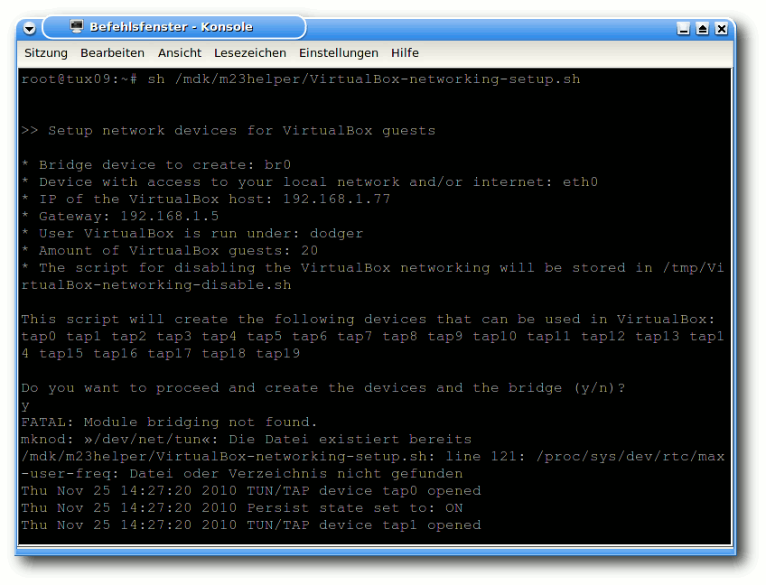
Ausgabe von VirtualBox-networking-setup.sh.
Nach einem Systemneustart muss das Skript erneut ausgeführt werden, da die Erstellung nur temporär ist. Die Netzwerkschnittstellen und die Netzwerkbrücke können auch wieder entfernt werden (was aber im Normalfall nicht nötig sein sollte):
# /tmp/VirtualBox-networking-disable.sh
Virtuelle Festplatte vorbereiten
Ohne Festplatte geht auch bei virtuellen Rechnern (fast) gar nichts. Diese Festplatten, die in einer VM verwendet werden, liegen dabei meist als Dateien vor. Sie verhalten sich aus der Sicht des in der VM ausgeführten Betriebssystems wie eine herkömmliche Festplatte. Diese virtuellen Festplatten können so angelegt werden, dass die dazugehörige Datei nur bis zum wirklich benutzten Speicher anwächst und somit auf der physikalisch vorhandenen Festplatte nur so viel Plattenplatz verwendet, wie benötigt wird. Man kann also getrost eine etwas größere Maximalgröße angeben, auch wenn man nicht beabsichtigt, diese auszuschöpfen. Denn nichts ist ärgerlicher als eine zu kleine virtuelle Festplatte, die man nachträglich zu vergrößern versucht. Das folgende Beispiel zeigt, wie eine 8 GB große Festplattendatei erzeugt wird. Für KVM verwendet man das von QEMU stammende qemu-img:$ qemu-img create -f qcow2 festplatte.kvm 8192MBei VirtualBox wird die Datei über das zentrale Verwaltungsprogramm VBoxManage angelegt und gleichzeitig in einer internen Datenbank registriert:
$ VBoxManage createvdi -filename festplatte.vdi -size 8192 -registerAnders als bei KVM landet die Datei nicht im aktuellen, sondern in einem von VirtualBox dafür vorgesehenen Verzeichnis. Gibt man hingegen den vollen Pfad an, so kann die Datei in jedem beliebigen Verzeichnis erstellt werden. So legt das folgende Beispiel mit Hilfe von pwd die Datei im aktuellen Verzeichnis an:
$ VBoxManage createvdi -filename `pwd`/festplatte.vdi -size 8192 -register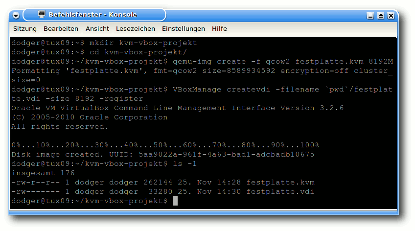
Anlegen der virtuellen Festplatten.
VMs anlegen
Bei VirtualBox muss man eine VM anlegen, um diese starten zu können. Bei KVM ist dieser Schritt nicht vorgesehen. Mit dem bereits bekannten VBoxManage registriert man zunächst eine leere VM:$ VBoxManage createvm -register -name vboxvmDiese wird im Folgenden um eine IDE-Schnittstelle erweitert, mit der jedes Betriebssystem umgehen können sollte:
$ VBoxManage storagectl vboxvm --name "IDE Controller" --add ide
Erklärung der Parameter
Nun geht es ans Eingemachte. Dieses doch etwas längere Kommando konfiguriert gleich eine Reihe von VM-Eigenschaften mit einem Schritt:$ VBoxManage modifyvm vboxvm --pae off --ostype debian --memory 512 --vram 8 --acpi on --ioapic off --hwvirtex off --nestedpaging off --monitorcount 1 --bioslogofadein off --bioslogofadeout off --hda `pwd`/festplatte.vdi --nic1 bridged --bridgeadapter1 eth0 --cableconnected1 on --macaddress1 00AABBCCDDFF --boot1 dvd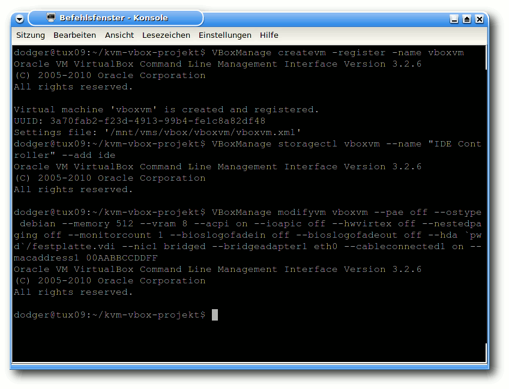
Anlegen und Konfigurieren der VirtualBox-VM.
--pae off deaktiviert die sogenannte „Physical Address Extension“, die auf 32-Bit-Maschinen für die Verwendung von mehr als 4 GB Arbeitsspeicher erforderlich ist. Möchte man seiner VM mehr als 4 GB Arbeitsspeicher zuweisen, so kann man die Option auch auf „on“ setzen, dies ist aber nur sinnvoll, wenn man physikalisch mehr als 4 GB besitzt. Bei Aktivierung wird zudem eine CPU mit Virtualisierungsfunktionen vorausgesetzt. Der Parameter --memory 512 gibt an, dass 512 MB vom Arbeitsspeicher des Wirtsrechners für die VM verwendet werden sollen. Andere Werte sind natürlich auch möglich, nur sollte man darauf achten, dass für den Wirtsrechner noch genügend zur Verfügung steht. --ostype debian setzt das Profil für diese VM auf die Debian-Distributionen. Das Profil setzt einige Einstellungen, die aber auch separat konfiguriert werden können. Das passende Profil zu wählen ist jedenfalls nie verkehrt. Mit
$ VBoxManage list ostypeskönnen alle von VirtualBox bekannten Betriebssysteme und Distributionen aufgelistet werden. Durch das Deaktivieren der „Nested paging“-Erweiterung (zum Ausführen einer VM innerhalb einer anderen VM) mittels --nestedpaging off funktioniert die VM auch auf CPUs ohne Virtualisierungsfunktionen. --monitorcount 1 legt die Anzahl der angeschlossenen (virtuellen) Monitore fest. Die beiden Optionen --bioslogofadein off --bioslogofadeout off beschleunigen durch Entfernen der Einblendung von Logos das Starten der VM. Mittels --hda `pwd`/festplatte.vdi wird die gerade angelegte virtuelle Festplattendatei an das (virtuelle) Master-Kabel der IDE-Schnittstelle „angeschlossen“. Die Parameter --nic1 bridged --bridgeadapter1 eth0 versetzen die erste (virtuelle) Netzwerkkarte mit der physikalischen Netzwerkschnittstelle „eth0“ in den Netzwerkbrücken-Modus („bridged“). „eth0“ sollte hierbei die Schnittstelle sein, die mit dem übrigen Netzwerk (bzw. Internet) kommunizieren kann. --cableconnected1 on „steckt“ das virtuelle Netzwerkkabel in die virtuelle Netzwerkschnittstelle, damit das Betriebssystem die Netzwerkkarte verwenden kann und nicht meldet, dass das Kabel nicht angeschlossen sei. --macaddress1 00AABBCCDDFF gibt der Karte noch die benötigte MAC-Adresse. Möchte man mehrere VMs anlegen, so muss die virtuelle MAC-Adresse angepasst werden, da es keine zwei Rechner mit gleicher MAC geben darf. Für jede der insgesamt 12 Stellen darf dafür eine Hex-Zahl, also eine Ziffer von 0-9 oder ein Buchstabe von A-F, verwendet werden. --boot1 dvd legt fest, dass die VM von einem virtuellen DVD-Laufwerk booten soll.
CD/DVD-ISO „einlegen“
Bei VirtualBox wird das ISO-Abbild in das virtuelle CD/DVD-Laufwerk eingelegt. Im folgenden wird davon ausgegangen, dass das ISO xubuntu-10.10-desktop-i386.iso heißt und im Projekt-Verzeichnis liegt. Von dort aus setzt man folgenden Befehl ab:$ VBoxManage storageattach vboxvm --storagectl "IDE Controller" --type dvddrive --medium `pwd`/xubuntu-10.10-desktop-i386.iso --port 0 --device 1
Ein Betriebssystem installieren
Nach den Vorarbeiten an der VirtualBox-VM ist das Starten ganz einfach:$ VBoxManage startvm vboxvm --type guiNeben dem Typ gui, der das VM-Fenster mit einem Menü versieht, gibt es noch sdl (ohne Menü) sowie headless, womit jegliche Ausgabe verhindert wird – was nur sinnvoll ist, wenn man die VM bereits installiert hat und nur noch als Server verwenden und z.B. per SSH darauf zugreifen will. 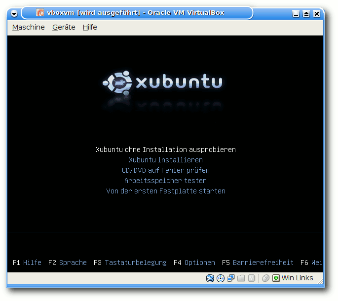
Gestartete Xubuntu-CD in VirtualBox.
KVM kennt keine Konfiguration wie VirtualBox. Um die KVM-VM zu starten, genügt folgende Zeile:
$ kvm -m 512 -boot d -cdrom xubuntu-10.10-desktop-i386.iso -hda festplatte.kvm -net nic,model=rtl8139,vlan=0,macaddr=00:AA:BB:CC:DD:FF -net tap,ifname=tap0,script=/bin/true-m 512 gibt wiederum die Größe des Arbeitsspeichers an, -boot d legt das CD/DVD-Laufwerk als Bootmedium fest, -cdrom xubuntu-10.10-desktop-i386.iso legt das ISO in das Laufwerk und -hda festplatte.kvm dient zum Verbinden des (noch leeren) Festplattenabbildes mit der VM. Die Konfiguration der Netzwerkkarte -net nic,model=rtl8139,vlan=0,macaddr=00:AA:BB:CC:DD:FF ist ähnlich wie bei VirtualBox. Hinzu kommt hier die Wahl der virtuellen Netzwerkschnittstelle „tap0“ bei -net tap,ifname=tap0,script=/bin/true. Möchte man mehrere KVM-VMs parallel laufen lassen, so ist neben einer neuen MAC-Adresse auch die nächste freie tapX zu wählen. Das Skript VirtualBox-networking-setup.sh legt in der Standardeinstellung gleich 20 Stück von tap0 bis tap19 an. 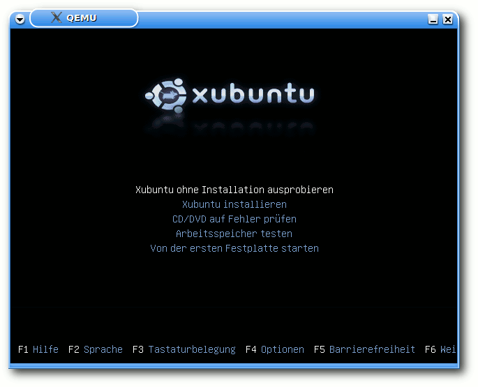
Gestartete Xubuntu-CD in KVM.
VM starten
Hat man das Betriebssystem auf der virtuellen Platte installiert, so möchte man wahrscheinlich nun von dieser starten. Unter VirtualBox verändert man die Konfiguration der VM, sodass diese als erstes von der Festplatte bootet:$ VBoxManage modifyvm vboxvm --boot1 diskDanach kann (wie zuvor beschrieben mittels VBoxManage startvm ...) die VM normal gestartet werden. Bei KVM wird die Zeile an einer Stelle angepasst und aus -boot d wird nun -boot c:
$ kvm -m 512 -boot c ....
Fazit
Wie auf vielen anderen Gebieten ist es eine Geschmacksfrage, welchen der beiden vorgestellten Virtualisierer man verwendet. Aus meiner Sicht gibt es nichts, was prinzipiell gegen einen der beiden Kandidaten sprechen würde. Sie lassen sich beide in (nahezu) jedem Projekt verwenden. Hat man es mit älteren Rechnern ohne Virtualisierungsfunktionen zu tun, so scheidet KVM leider aus, auch kann VirtualBox unter einer Vielzahl von Betriebssystemen (Linux, FreeBSD, Windows, Mac OS X/Intel, Solaris und OS/2) betrieben werden. KVM bietet hingegen den Vorteil, dass es seit geraumer Zeit in jedem Linux-Kernel vorhandenen ist und damit immer ohne Patches funktioniert. Links[1] http://www.virtualbox.org
[2] http://www.linux-kvm.org/
[3] http://sourceforge.net/projects/dodger-tools/files/VirtualBox-OSE/VirtualBox-networking-setup.sh/download
[4] http://www.virtualbox.org/wiki/Downloads
[5] http://dodger-tools.sourceforge.net/cms/index.php?id=100000005
| Autoreninformation |
| Hauke Goos-Habermann (Webseite) arbeitet freiberuflich als Entwickler und Trainer für Linux und Open-Source-Software. Er ist zudem Hauptentwickler des Softwareverteilungssystems m23 und weiterer OSS sowie Mitorganisator der Kieler Open Source und Linux Tage. |
Zum Index
Kernel-Crash-Analyse unter Linux
von Mirko Lindner In einer idealen Welt stürzen weder Systeme noch Applikationen ab. Da die Welt nun mal weder ideal noch der Mensch in der Lage ist, ab einer gewissen Komplexität fehlerfreie Programme zu schreiben, hat wahrscheinlich jeder schon einmal einen Absturz gesehen. Dieser Artikel zeigt, wie Abstürze des ganzen Systems funktionieren, wie sie korrekt gehandhabt und wie sie untersucht werden können. Redaktioneller Hinweis: Der Artikel „Kernel-Crash-Analyse unter Linux“ erschien erstmals bei Pro-Linux [1].Die graue Theorie
Der Linux-Kernel ist zweifelsohne ein solides System. Er ist für seine Größe stabil, durchaus fehlertolerant und bietet wenig Möglichkeiten zum Angriff. Doch auch Linux ist von Fehlern nicht gefeit. Wohl jeder hat schon mal in seinem Leben einen Absturz oder ein sogenanntes Oops [2] gesehen. Prinzipiell sind Oopses nichts Schlimmes, zeugen sie in der Regel nur von einem Fehlverhalten eines Subsystems, das so gravierend war, dass es dem Programmierer wichtig war, den Anwender davon in Kenntnis zu setzen. Viele solcher Fehler führen weder zum Stillstand noch zum Absturz des Kernels. Oftmals sind es eher informierende Ausgaben, die beispielsweise dem Anwender davon berichten, dass ein bestimmtes System nicht korrekt abgemeldet wurde, während ein Treiber entladen wurde. Ein Beispiel wären hier diverse /proc-Einträge, die bei der Abmeldung eines Treibers vergessen wurden. Solche Fehler handhabt der Kernel in der Regel, ohne das System stoppen zu müssen. Sie können mitunter auch oft passieren, ohne dass ein Anwender etwas davon mitbekommt. Oftmals müssen diverse Debug-Einstellungen eingeschaltet werden, damit solche Ausgaben sichtbar sind. Viel dramatischer sind Fehler, die zum Stillstand des Systems führen. Typischerweise sind es NULL-Pointer oder Zugriffe auf falsche Speicherbereiche im Kernel. Dabei spielt es keine Rolle, ob solche Zugriffe von Linux selbst oder von einem Treiber durchgeführt werden – alle Speicherfehler führen zum sofortigen Stillstand des Systems. Sofort?! Nein, nicht wirklich. Auch wenn es den Anschein hat, dass der Kernel nach einem Fehler abgestürzt ist, ist dem nicht so. Am besten lässt es sich an der Meldung des Oopses selbst verdeutlichen. Der Oops selbst ist eine normale Kernel-Funktion, die in der Datei traps.c residiert. Die beiden für die Anzeige von Oops verantwortlichen Funktionen dump_stack() und show_trace() sind Funktionen, die regulär verlassen werden. Die eigentliche Behandlung eines Fehlers nach einem Oops erfolgt später direkt im Kernel oder im System, das einen Oops gemeldet hat. Ein Beispiel gefällig? Die allseits bekannte Meldung „BUG: unable to handle kernel NULL pointer dereference“ versteckt sich auf x86-Systemen in der Funktion vmalloc_fault() und der Datei fault.c. Doch erst der Aufruf von do_exit(SIGKILL) am Ende von vmalloc_fault() und eine abschließende Schleife am Ende von do_exit() oder der Aufruf von panic() versetzen den Kernel in eine Endlosschleife und machen dem System die Lichter aus. Bis dahin ist der Kernel durchaus in der Lage, noch zu interagieren und unter Umständen diverse Systeme herunterzufahren oder gar zu starten.Arten von Kernel-Debugging
Ist ein Kernel erst einmal gestoppt, stehen dem Entwickler nur begrenzt Möglichkeiten zur Verfügung, den Fehler zu untersuchen. Im Gegensatz zu Applikationen, die im Userspace gestartet werden, wirken sich Fehler im Kernel sofort auf das komplette System aus. Da aber der Kernel nach einem Absturz immer noch funktional ist, ist es durchaus verständlich, dass sich diverse Entwickler Gedanken über eine Möglichkeit gemacht haben, diese Tatsache für weitere Untersuchungen zu nutzen. Die wohl populärste Möglichkeit, Fehler im Kernel zu untersuchen, stellt dabei printk() dar. printk() ist nichts anderes als das Pendant für printf() im Kernel. Es bedarf allerdings wenig Vorstellungsvermögen, um zu erkennen, dass die Untersuchung von Fehlern mittels printk() nicht nur Erfahrung in der Programmierung des Kernels erfordert, sondern auch nur bedingt für eine Ferndiagnose eingesetzt werden kann. Vor allem komplizierte Probleme lassen sich mit printk() unter Umständen recht schwer lokalisieren. Dies führte zu einer zweiten Möglichkeit – den Oops-Meldungen. Entgegen des ersten Eindrucks stellen diese Meldungen für einen Programmierer eine extreme Bereicherung dar. Sie beinhalten oftmals alle Informationen, die zur Lösung eines Problems benötigt werden. Der einzige Wermutstropfen ist lediglich, dass sie manchmal von Anwendern nicht korrekt interpretiert oder bei manchen Fehlerarten (Schleifen, Deadlocks usw.) nicht ausgegeben werden. Ferner können zum Beispiel Speicherbereiche so korrumpiert sein, dass auch die Oops-Meldungen keinen Mehrwert mehr bieten. Hier greift nun die dritte Möglichkeit: Debugging. Zwar hat diese Art der Fehleruntersuchung erst recht spät in den Kernel Einzug gehalten, doch stellt sie oftmals die einzige Möglichkeit dar, komplizierte Fehler in einer vertretbaren Zeit zu finden. Das wohl bekannteste Werkzeug stellt dabei der ursprünglich als Patch implementierte und seit der Version 2.6.26 im Kernel vorhandene KGDB [3] dar. Das eigentliche Debugging wird dabei mit GDB per Remote-Protokoll auf einem zweiten System ausgeführt. Die wohl ergiebigste Art, Fehler zu untersuchen, stellen allerdings Crash-Dump-Tools dar. Im Gegensatz zu anderen Ansätzen bedarf es hier nicht der direkten Mitarbeit des Entwicklers. Ferner beinhalten Crash-Dumps, sofern sie vollständig sind, alle drei oben genannten Arten der Diagnose, sodass der Entwickler auf eine schier unerschöpfliche Fülle an Informationen zurückgreifen kann. Die zwei bekanntesten Werkzeuge sind dabei kdump und LKCD (Linux Kernel Crash Dump [4]), wobei das letztgenannte bereits eingestellt wurde.kdump
Die Geschichte von Crash-Dumps im Linux-Kernel reicht in das Jahr 1999 zurück. Entgegen der Gepflogenheiten anderer Unix-Systeme verfügte Linux nicht von Anfang an über eine Einrichtung, die es ermöglichte, Crash-Dumps zu erstellen. Erst mit einem Patch im Jahre 1999 führte SGI mit dem LKCD (Linux Kernel Crash Dump) einen ersten Versuch ein, Crash-Dumps zu nutzen. 2002 folgte ein zweiter, von Red Hat initiierter, unter dem Namen Netdump, gefolgt 2004 von Diskdump. Doch erst 2006 mit der im Kernel adaptierten kdump-Technologie konnte Linux Crash-Dumps korrekt handhaben. Technisch gesehen besteht kdump [5] aus zwei voneinander separierten Bereichen: kexec und kdump. kexec stellt dabei ein Fastboot-Mechanismus dar, der in der Lage ist, einen weiteren Kernel zu starten, ohne dass die Hardware zuvor vom BIOS initialisiert werden musste. Der eigentliche kdump stellt dagegen den eigentlichen Mechanismus zur Speicherung von Crash-Dumps dar.Funktionsweise
Wirft man einen flüchtigen Blick in die Funktion panic(), so findet man bereits vor der Abschaltung der SMP-Funktionen einen Aufruf von crash_kexec(). Die in kexec.c enthaltene Funktion startet wie zuvor angemerkt aus einem laufenden Kontext einen neuen Kernel. Damit dieser nicht zuvor benutzte Bereiche überschreibt und möglichst einen unverfälschten Dump des Systems wiedergeben kann, muss ein Bereich im Speicher reserviert werden, in den der neue Kernel kopiert werden kann. Üblicherweise beträgt die Größe des neuen Speichers um die 128 MB und wird dem Kernel direkt als Bootparameter übergeben, weshalb der Kernel nach der Installation von kdump neu gestartet werden muss. Angemerkt sei auch, dass der neue Kernel nicht zwangsläufig ein wirklich neuer sein muss. Alternativ ist kexec auch in der Lage, auf Systemen, die einen relokierbaren Kernel unterstützen (i386, x86_64, ppc64 und ia64), denselben Kernel zu nutzen. In diesem Fall ist der Crash-Kernel derselbe wie der ursprüngliche Kernel. Ist der neue Kernel gebootet, startet dieser einen eigenen Init-Prozess und bindet die in der Konfiguration festgelegte Partition ein, auf die der Kernel-Dump geschrieben werden soll. Darüber hinaus wird der kdump-Service gestartet, der wiederum einen Dump des Systems durchführt. Ist alles erledigt, bleibt das System stehen oder bootet neu, je nach Konfiguration. Der Vorteil dieser Lösung ist ihre Flexibilität und ihre Anpassbarkeit. Es bedarf weder Änderungen im Kernel noch neuen Funktionen, um die Dump-Funktion zu erweitern. Prinzipiell kann jeder Anwender seine Dumps zusammenstellen und erweitern. Durch die Nutzung eines separaten Kernel-Prozesses ist zudem immer sichergestellt, dass das System zum Zeitpunkt der Generierung des Crash-Dumps nicht korrumpiert war. Ferner lassen sich so auch potentielle Probleme lösen, die unter Umständen dazu führen könnten, dass der Dump beim Speichern auf das Dateisystem beschädigt werden könnte. 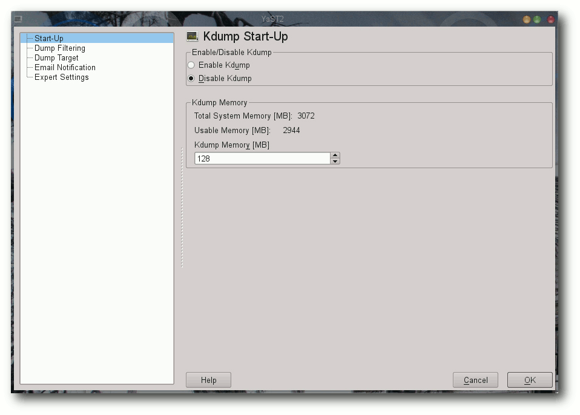Grafische kdump-Konfiguration in openSUSE 11.3.
Installation
Die Installation des Systems beschränkt sich in den meisten Distributionen auf die Installation des Pakets kexec-tools. Alternativ, wie im Falle von Red Hat Enterprise Linux oder openSUSE, können noch Management-Tools installiert werden. Anwender, die lieber ihre eigenen Versionen der Tools installieren möchten, können es alternativ selbst kompilieren. Der Download ist von der Seite des Projektes möglich. Die Installation ist dabei recht unkompliziert:$ ./configure $ make # make installIst die Applikation installiert, bedarf es der eigentlichen Konfiguration. Wie bereits erwähnt bringen diverse Distributoren bereits von Haus aus diverse grafische Werkzeuge mit, die die Einrichtung des Systems erleichtern. Der Umfang und die Funktionalität der Tools orientiert sich dabei maßgeblich am Umfang der kdump-Funktionalität, die vom Distributor erstellt wurde. Während beispielsweise RHEL 5 nur marginale Änderungen ermöglicht, erlaubt das in Yast eingebundene Programm weitaus mehr Funktionen und Einstellungen. Anwender, die kdump aus den Quellen installiert haben, haben freilich die Qual der Wahl, da sie faktisch sowieso alles selbst einstellen müssen – angefangen von der Kernelkonfiguration über die Konfiguration bis hin zur Anpassung des Systems. Ausführliche Informationen zu den Kerneloptionen entnehmen Interessenten aufgrund der Anzahl der Parameter direkt der Dokumentation [6]. Wichtig ist hier vor allem die Festlegung des Speichers mittels des Bootparameters crashkernel. Der Parameter variiert von Architektur zu Architektur und kann ebenso der Dokumentation entnommen werden. Ist der neue Kernel erstellt und das System zwecks der Initialisierung des neuen Speicherbereiches neu gestartet, kann das Laden des neuen Kernels beginnen. Dies geschieht in der Regel im Service kdump:
# /etc/init.d/kdump startVereinfacht gesagt, initialisiert das Programm den neuen Crash-Kernel mittels der Userland-Anwendung kexec. Die Parameter variieren dabei von Distribution zur Distribution und hängen von der Implementierung ab. Der grundsätzliche Aufruf sieht allerdings wie folgt aus:
# kexec -p <dump-capture-kernel-vmlinux-image> --initrd=<initrd-for-dump-capture-kernel--args-linux> --append="root=<root-dev<arch-specific-options>"Die Überprüfung, ob ein Crash-Dump-Kernel geladen wurde, kann mittels des Kommandos
# cat /sys/kernel/kexec_crash_loadederfolgen. Ist ein Kernel geladen, gibt das Kommando den Wert 1 zurück.
Test
Wie eingangs beschrieben, ist kexec in der Lage, direkt aus einem laufenden Kernel einen neuen Kernel zu starten. Was liegt also näher, die Funktion zu testen und den Crash-Kernel zu booten? Dazu reicht es, einfach einen neuen Kernel in den reservierten Speicher zu laden. Auf x86-Systemen kann es in der Regel der bereits laufende sein:# kexec -l /boot/vmlinuz-image --initrd=/boot/initrd-image.img --command-line="`cat /proc/cmdline`"Die Überprüfung erfolgt diesmal mit
cat /sys/kernel/kexec_loadedda man mittels des Parameters -l nicht einen Panic-, sondern einen Load-Kernel geladen hat. Liefert die Zeile den Wert 1, kann das System mittels
# rebootbeendet werden. Die Besonderheit dabei: Wird der aktuelle Kernel beendet, sollte ohne einen einzigen BIOS-Zugriff sofort der neue Kernel gestartet werden.
Der Crash
Nun ist es an der Zeit, die Neueinrichtung in Aktion zu erleben. Eine simple Möglichkeit, einen Fehler bzw. einen Absturz des Systems zu verursachen, ist das Auslösen eines SysRQ mittels einer geeigneten Tastenkombination oder mittels des Kommandos:# echo "c" /proc/sysrq-triggerMan sollte jetzt einen sofortigen Stillstand des Systems beobachten mit einem anschließenden Booten eines neuen Kernels. Einige Minuten später sollte sich das System beenden und ihre normale Umgebung wieder erscheinen. In dem Crash-Dump-Verzeichnis sollte sich nun eine neue Datei mit dem Namen vmcore befinden:
# ls -l /var/crash/*/vmcore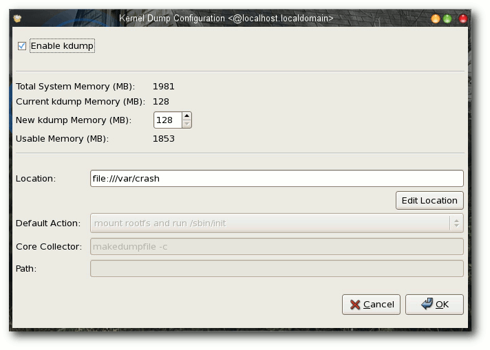
Das grafische Konfigurationstool für kdump in RHEL 5.
Analyse mittels gdb
Die generierte Crash-Datei kann mit den Standardprogrammen unter Linux untersucht werden. Als Voraussetzung dafür gilt allerdings die Installation der entsprechenden Debug-Pakete des Kernels. Der Name und die Verfügbarkeit ist je nach Distribution unterschiedlich. So heißen beispielsweise die Pakete unter RHEL 5.4 kernel-debug und kernel-debuginfo. Sie sind nicht in der Standarddistribution enthalten und müssen separat aus dem debuginfo-Verzeichnis der Distribution heruntergeladen werden. Unter openSUSE 11.3 heißt der Kernel dagegen kernel-<type>-debuginfo. Wichtig ist in allen Fällen, dass die Version der Debug-Informationen zum laufenden Kernel passt. Sind die Pakete und ihre Abhängigkeiten installiert, kann es an die eigentliche Untersuchung gehen. Im Falle von RHEL dürfte das Kommando wie folgt aussehen:# gdb /usr/lib/debug/lib/modules/<kernel>/vmlinux vmcoreWichtig ist, dass dem Programm neben der korrekten Crash-Datei auch die dazugehörende Kernel-Objektdatei übergeben wird. Unter openSUSE sehen die Parameter wie folgt aus:
# gdb /usr/lib/debug/boot/<kernel>.debug vmcoreAlternativ können anstelle von gdb auch artverwandte Programme wie gdbtui [7] oder ddd [8] eingesetzt werden. Die Parameter unterscheiden sich in der Standarddistribution nicht. So kann beispielsweise der grafische Debugger ddd mit denselben Optionen wie gdb gestartet werden. 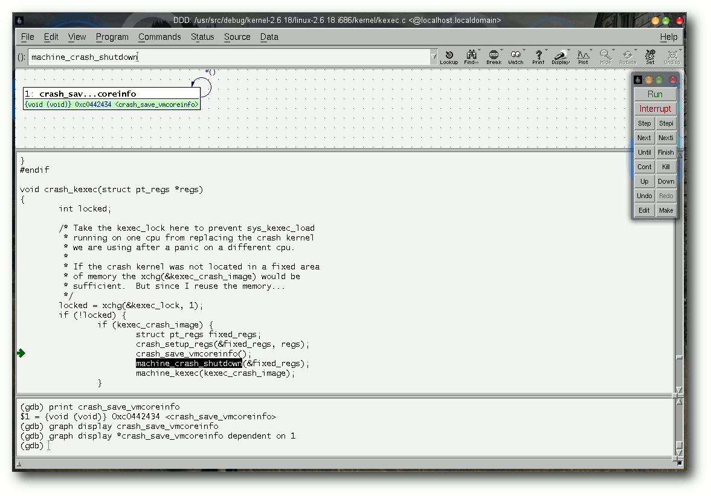
Untersuchung eines Kernelproblems mittels des grafischen gdb-Frontends ddd.
Analyse mit crash
Mag gdb noch so mächtig sein, liegen seine Einsatzbereiche nicht unbedingt in der Untersuchung von Kernelproblemen. Oftmals ist neben dem eigentlichen Code auch die Umgebung oder der Status des Systems von besonderer Bedeutung für die Lösung eines Kernelproblems. Oft führen Fehler in einem Subsystem zu Fehlern in einem anderen, beispielsweise Speicherprobleme, in denen Module ihnen nicht zugewiesenen Speicher überschreiben. Die Crash-Datei enthält noch weit mehr Informationen. Neben dem Abbild des Speichers sind in der Datei auch Log-Informationen, Prozessdaten, Interrupts und Dateisysteminformationen enthalten. Diese ganzen Informationen sollen nur dem einen Zweck dienen – der schnellen Untersuchung und Korrektur von Fehlern im Kernel oder einem Subystem. Sichtbar gemacht werden können die Crash-Informationen mittels des Werkzeugs crash [9]. Crash erlaubt nicht nur, den Status des Systems während, sondern auch nach einem Crash zu untersuchen. Dabei kommt das Programm mit zahlreichen Crash-Formaten klar. Unter anderem vermag es Dumps von netdump, diskdump, kdump oder xendump darzustellen. Die Grundlagen von crash liegen dabei im crash-Kommando von System System V Release 4 (SVR4), das allerdings nicht nur auf Linux portiert, sondern auch massiv angepasst wurde. Die wohl größte Änderung gegenüber dem Original stellt die Integration des gdb dar. So ist es mittels crash möglich, die Techniken des Urwerkzeugs und die des Quellcode-Debuggers gemeinsam zu nutzen. Der Aufruf von crash gleicht dem von gdb. So lässt sich das Programm unter RHEL beispielsweise mittels folgenden Kommandos ausführen:# crash /usr/lib/debug/lib/modules/<kernel>/vmlinux vmcore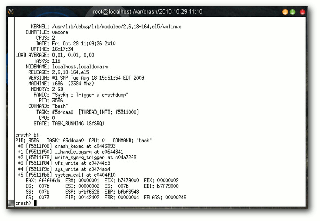
Informationen des Programms crash samt Kernel-Stacktrace.
Arbeiten mit crash
Streng genommen verfügt crash über vier verschiedene Arten von Kommandos. Zum einen enthält es Befehle, die Kerneldaten oder Text darstellen. Die wohl wichtigsten davon sind struct und union gepaart mit *, die Kernel-Datentypen darstellen. Ferner unterstützt crash auch die Anzeige von Kernel-Variablen mittels p und von Symbolen mittels whatis. Das Kommando sym übersetzt dagegen einen Symbolnamen in eine virtuelle Adresse, dagegen disassembliert dis eine Kernel-Funktion. Der zweite Bereich von crash umfasst zahlreiche Werkzeuge, die sich dem Status des Systems widmen. Neben bt, das einen Kernel-Stack anzeigt und damit wohl das erste Kommando einer jeder Untersuchung darstellt, bietet es auch Kommandos zur Anzeige von Geräten, Dateien, Benutzerinformationen, Prozessor- und Prozessdaten, Mount- und Netzwerk-Optionen oder Speicherdaten. Im Grunde genommen existieren nur wenige Bereiche, die sich dem Programm entziehen können. So können beispielsweise mittels der Kommandos dmesg oder log im Klartext die Loginformationen des Systems oder mittels ps der Prozessbaum angezeigt werden. Der dritte Bereich von crash beinhaltet Werkzeuge, die eine Untersuchung erleichtern sollen. So können beispielsweise mittels btop physikalische Adressen in Page-Nummern oder mittels ascii numerische Werte in ASCII-Komponenten umgewandelt werden. Als besonders mächtig erweist sich hier das wr-Kommando, das in der Lage ist, in einem laufenden System Speicherbereiche zu ändern. Voraussetzung hierfür ist allerdings ein Schreibzugriff auf /dev/mem. In einem Crash-Dump ist das Kommando selbstverständlich sinn- und funktionslos. Schlussendlich bietet crash auch viele Kommandos zur Session-Kontrolle. alias definiert Aliase, q oder exit beenden die Anwendung.Fazit
Wie bei allen Fehlern kann auch unter Linux keine Garantie für eine fehlerfreie Funktionsweise eines Crash-Dumps gegeben werden. Betrachtet man den Umstand, dass ein Dump durch einen fatalen Fehler erzeugt wurde, besteht immer noch die Möglichkeit, dass die im Abbild enthaltenen Daten keine Rückschlüsse auf die Quelle des Problems zulassen. Doch trotz allem sind Crash-Dumps, sei es bei Applikationen oder im Kernel, eine wertvolle Quelle, um Probleme schnell zu identifizieren und zu lösen. Die Wahrscheinlichkeit, einen Fehler mittels einer Crash-Dump-Analyse im Kernel wenigstens einzugrenzen, ist ungleich höher als durch eine Beschreibung. Denn die meisten Fehler des Kernels oder eines Treibers geschehen nicht durch ein systematisches Problem, sondern durch ein Fehlverhalten eines Subsystems, ein Timingproblem oder schlicht Defekte in der Hardware. Diese lokal zu reproduzieren ist für einen Entwickler, der womöglich an einem Treiber nur in seiner Freizeit schreibt, schier unmöglich. Links[1] http://www.pro-linux.de/artikel/2/1470/kernel-crash-analyse-unter-linux.html
[2] https://secure.wikimedia.org/wikipedia/en/wiki/Linux_kernel_oops
[3] https://secure.wikimedia.org/wikipedia/en/wiki/KGDB
[4] http://lkcd.sourceforge.net/
[5] http://lse.sourceforge.net/kdump/
[6] http://www.mjmwired.net/kernel/Documentation/kdump/
[7] http://www.gnu.org/software/gdb/
[8] http://www.gnu.org/software/ddd/
[9] http://people.redhat.com/anderson/crash_whitepaper/
| Autoreninformation |
| Mirko Lindner (Webseite) befasst sich seit 1990 mit Unix. Seit 1998 ist er aktiv in die Entwicklung des Kernels eingebunden und verantwortlich für diverse Treiber und Subsysteme für Linux und andere freie Plattformen. Daneben ist er einer der Betreiber von Pro-Linux.de. |
Zum Index
Der Januar im Kernelrückblick
von Mathias Menzer Basis aller Distributionen ist der Linux-Kernel, der fortwährend weiterentwickelt wird. Welche Geräte in einem halben Jahr unterstützt werden und welche Funktionen neu hinzukommen, erfährt man, wenn man den aktuellen Entwickler-Kernel im Auge behält.Kernel 2.6.37
Das Jahr 2010 beendete Torvalds noch mit einer letzten Vorabversion [1], die dem Treiber iwlwifi die Nutzung aktueller EEPROM auf Intels WLAN-Chipsätzen ermöglicht. Dazu kam noch eine Änderung am Treiber der für den Einsatz in Smartphones vorgesehenen System-on-a-Chip-Plattform S5Pv310, der nun alle zur Verfügung stehenden Register des System auch verwenden kann. All dem gab man noch ein paar Tage Zeit, bevor dann nach 77 Tagen Entwicklungszeit Linux 2.6.37 veröffentlicht wurde [2]. Alles in allem fällt der jüngste Spross der Kernelreihe nicht unbedingt durch neue Jubelfunktionen ins Auge. Dafür wurde jedoch an bereits eingeführten Treibern und Funktionen gearbeitet, um sie zu verbessern. Einer der größeren Stachel im Fleisch der Kernelentwickler, der veraltete Big Kernel Lock (BKL), konnte nun aus den Kernbereichen des Kernels so weit entfernt werden, dass das Kompilieren von 2.6.37 ohne BKL-Unterstützung grundsätzlich möglich ist. Leider kommt dieser Locking-Mechnismus nach wie vor in einigen Subsystemen zur Anwendung, sodass manche Treiber ohne BKL den Dienst verweigern. Einiges hat sich im Bereich der Dateisysteme getan. Den Beginn macht hier Ext4, dem in Sachen Skalierbarkeit, also der Fähigkeit, sich an steigende Zahl und Leistungsfähigkeit von Prozessorkernen anzupassen, etwas Neues beigebracht wurde. So wird nun direkt mit der BIO-Schicht (Block-I/O) des Kernels kommuniziert, der bislang genutzte „Buffer Layer“ brachte zu viele Probleme mit der Leistungsfähigkeit und Skalierbarkeit mit sich. In einem Testszenario konnte eine Steigerung der Leistung von Ext4 um 300 % erreicht werden, während die Prozessornutzung um den Faktor 3 zurückging. Das Erstellen neuer Ext4-Partitionen wird nun erheblich schneller ablaufen als bislang gewohnt, da die Initialisierung der Inode-Tabelle, mit der der Ablageplatz einzelner Dateien auf der Partition gespeichert wird, nicht beim Erzeugen der Partition erfolgt, sondern erst beim ersten Einhängen in das System. Verschiedene Änderungen an XFS sollen auch hier die Leistung verbessern, weitere werden für 2.6.38 erwartet. RBD (Rados Block Device) ist die Bezeichnung eines Treibers, mit dem sich blockorientierte Geräte anlegen lassen, die ihre Daten aus dem verteilten Netzwerk-Dateisystem Ceph beziehen. Bislang stand für den Zugriff auf Ceph nur ein auf FUSE (File System in Userspace) aufsetzender Treiber zur Verfügung. RBD unterstützt Read-Only-Schnappschüsse und es gibt auch Patches für Qemu [3], mittels derer sich Block Devices für Virtuelle Maschinen in einem Ceph Cluster ablegen lassen. Das Thema Locking wurde auch bei Btrfs angegangen, ein anderer Locking-Mechanismus soll weniger aggressiv Zugriffe auf Bereiche des Dateisystems sperren und damit die Leitung verbessern. Einen positive Auswirkung auf die Leistungsfähigkeit des Dateisystems verspricht man sich davon, dass Btrfs nun freigegebene Bereiche in einer Liste auf dem Datenträger ablegt. Die Suche nach nicht zugewiesenen Blöcken soll damit in den meisten Fällen überflüssig werden, das Schreiben neuer Daten wird damit beschleunigt. Ebenso beschleunigt wurde das Erstellen von Schnappschüssen des Dateisystems, indem diese jetzt asynchron angelegt werden, also noch während Zugriffe erfolgen. Wird das System in den Ruhezustand geschickt, komprimiert 2.6.37 das zu speichernde Abbild des Hauptspeichers mittels LZO [4], einem Verfahren, das als besonders schnell angesehen wird, und spart dadurch Zeit beim Übertragen auf den Datenträger, wodurch wiederum das Einschlafen und Wiederaufwachen des Systems weniger Zeit in Anspruch nehmen soll. Auch können Treiber nun ein Veto einlegen, wenn die von ihnen kontrollierten Geräte in den Schlafmodus geschickt werden, indem der Treiber sie für einige Zeit als inaktiv markiert. Zum Schluss wurde das in 2.6.36 eingeführte Fanotify in der Standardkonfiguration aktiviert. Das System, das Prozesse über Änderungen am Dateisystem benachrichtigt, hatte mit Unklarheiten bezüglich seiner Schnittstelle zu kämpfen, die mittlerweile jedoch ausgeräumt wurden.Kernel 2.6.38
Nach 14 Tagen ließ Torvalds das Merge Window wieder zufallen und veröffentlichte die erste Vorabversion von 2.6.38 [5]. Mit im Boot war auch der Patch für die Einführung der automatischen Task-Gruppen (siehe „Der November im Kernelrückblick; neue Wege für das Scheduling“, freiesMagazin 12/2010 [6]), die von Torvalds bereits im Vorfeld ausdrücklich gelobt worden waren und die insbesondere Desktop-Anwendern zugute kommen werden. Locking-Mechanismen haben es dieser Tage nicht leicht. Hatte BKL bislang den Löwenanteil an Aufmerksamkeit auf sich gezogen, geht es jetzt dem weniger verbreiteten dcache_lock an den Kragen. Dieser kommt bislang unter anderem in der Dateisystem-Abstraktionsschicht VFS [7] zum Einsatz und zog damit unlängst den Blick von Nick Piggin auf sich. Er rückt dem Problem mit einer ganzen Reihe an Patches zu Leibe, mit denen er zuerst die Änderungen vorbereitete und dann die neuen Locking-Mechanismen einführte, bevor dcache ersetzt werden konnte. Auf der Treiber-Seite wurde AMDs Fusion-Architektur bedacht, in der CPU und Grafikkern zusammengeführt werden. Weitere Updates am Direct Rendering Manager liefern Unterstützung für die Fermi-Grafikbeschleunigung von NVIDIA. 2.6.38-rc2 [8] und -rc3 [9] umrahmten zeitlich die australische Linux-Konferenz [10]; sie wurden vor Beginn und nach Ende des Treffens veröffentlicht. Die beiden Vorabversionen waren geprägt von Aufräumarbeiten im Bereich der zeichenorientierten Geräte, wo wieder zwei Treiber (hvc und serial) umziehen mussten. Die größte Änderung auf der Treiberseite war die Unterstützung für eine neue PCMCIA-Karte zur Anbindung eines CAN-BUS [11], ein auf speziell für die Kommunikation von Sensoren und Steuergeräten in Fahrzeugen ausgerichtetes System.|
Kurz erläutert: „Locking“ Als Locking bezeichnet man eine Methode, die zeitgleiche Zugriffe auf ein Gerät oder einen Speicherplatz verhindert. Dabei errichtet der erste Prozess, der die Ressource nutzt, eine Sperre (englisch: Lock); alle anderen Prozesse müssen warten, bis sie wieder freigegeben wurde. Ältere Locking-Mechanismen zeigen sich häufig sehr gierig und sperren größere Adressräume als notwendig, wodurch andere Prozesse beim Zugriff gegebenenfalls warten müssen und damit ausgebremst werden. Die Bestrebungen laufen derzeit dahin, dass Prozesse nur den wirklich benötigten Teil einer Ressource sperren, zum Beispiel nur einen kleinen Zweig einer Struktur anstelle des ganzen Baumes. Dabei verhindert ein Read-Lock das Bearbeiten der Ressource, erlaubt jedoch anderen Prozessen ebenfalls das Lesen und wehrt nur Versuche zum Bearbeiten ab. Ein Write-Lock dagegen unterbindet auch Lesezugriffe, bis dass die Änderungen vollständig sind und der Lock entfernt wurde. Locking kommt sowohl bei Zugriffen auf den Arbeitsspeicher als auch bei der Nutzung von Geräten, sowohl physikalischen als auch virtuellen, wie z. B. Treibern für Blockgeräte oder Dateisysteme, zum Einsatz. |
Links
[1] http://lkml.org/lkml/2010/12/28/196
[2] http://lkml.org/lkml/2011/1/4/266
[3] http://de.wikipedia.org/wiki/Qemu
[4] http://de.wikipedia.org/wiki/Lempel-Ziv-Oberhumer
[5] http://lkml.org/lkml/2011/1/18/322
[6] http://www.freiesmagazin.de/freiesMagazin-2010-12
[7] http://de.wikipedia.org/wiki/Virtuelles_Dateisystem
[8] http://lkml.org/lkml/2011/1/21/530
[9] http://lkml.org/lkml/2011/1/31/547
[10] http://lca2011.linux.org.au/
[11] http://de.wikipedia.org/wiki/Controller_Area_Network
| Autoreninformation |
| Mathias Menzer wirft gerne einen Blick auf die Kernel-Entwicklung, um mehr über die Funktion von Linux zu erfahren und um seine Mitmenschen mit seltsamen Begriffen und unverständlichen Abkürzungen verwirren zu können. |
Zum Index
Python – Teil 5: In medias res
von Daniel Nögel Im vorherigen Teil dieser Einführung (siehe freiesMagazin 01/2011 [1]) wurden Klassen besprochen. Mit diesem Teil soll nun ein Einstieg in die praktische Programmierung in Angriff genommen werden. Zunächst wird dazu aber noch auf die Fehlerbehandlung in Python eingegangen.Fehlerbehandlung
Fehler werden in Python „Exceptions“ oder „Ausnahmen“ genannt. Sie treten beispielsweise auf, wenn eine Datei nicht geöffnet werden kann, ein Schlüssel einer Liste abgefragt wird, der gar nicht existiert oder auf Variablen zugegriffen wird, die noch nicht bekannt sind. Tritt ein Fehler auf, wird das Skript sofort beendet; in der Konsole erscheint eine Fehlermeldung:>>> names = [u"Peter", u"Isabell"] >>> names.remove(u"Karla") Traceback (most recent call last): File "<stdin>", line 1, in <module> ValueError: list.remove(x): x not in listIn diesem Beispiel wird zunächst eine Liste mit Namen definiert. Beim Versuch, den Eintrag Karla zu entfernen, tritt ein Fehler auf, da dieser Eintrag sich gar nicht in der Liste befindet. Um diese spezielle Situation exakt zu erfassen, wirft Python eine Ausnahme vom Typ ValueError. Python kennt bereits in seiner Standardbibliothek viele Typen von Fehlern [2]. Zusätzlich gibt Python noch die Zeilennummer und eine kurze Fehlerbeschreibung aus. Nun ist es in den meisten Fällen nicht erwünscht, dass das Programm einfach endet und eine kryptische Fehlermeldung ausgibt. Daher ist es möglich, Stellen, an denen Fehler auftreten können, mit folgender Syntax zu umgeben:
try: names.remove(u"Karla") except ValueError: print "Eintrag nicht in der Liste"Bei dem Versuch, die Anweisung in Zeile 2 auszuführen, wird wie oben auch ein ValueError ausgelöst. Statt aber das Programm abzubrechen, überprüft der Interpreter, ob einer der except-Ausdrücke (es sind mehrere möglich) diesen Fehler abfängt. Das ist in Zeile 3 der Fall; der Programmfluss wird daher an dieser Stelle fortgesetzt. Grob ließe sich try... except... also mit versuche... im Fehlerfall mache... übersetzen. Es lassen sich auch mehrere mögliche Fehler in einem except-Block abfangen:
try:
names.remove(u"Karla")
except (SyntaxError, ValueError) as error:
print u"Folgender Fehler ist aufgetreten {0}".format(error)
Hier wird also auf einen möglichen SyntaxError ebenso reagiert wie
auf einen ValueError. Das Konstrukt except ... as error führt
dazu, dass der aufgetretene Fehler im Rumpf des except-Blocks als
error zur Verfügung steht. Sprich, der aufgetretene Fehler wird an
den Namen error gebunden. Obwohl Fehler-Objekte keine
Zeichenketten sind, können sie in vielen Situationen wie solche
verwendet werden:
>>> error = ValueError("Hilfe")
>>> str(error)
'Hilfe'
In Zeile 4 des zweiten Beispiels oben geschieht im Grunde genommen
Ähnliches: Das Fehler-Objekt wird implizit in eine Zeichenkette
umgewandelt, sodass auf der Konsole einige Details zum Fehler
erscheinen.
else und finally
Wie auch if-Blöcke kennen try... except-Blöcke das else-Statement. Der Rumpf eines else-Blockes wird ausgeführt, wenn im try-Block kein Fehler aufgetreten ist. Der finally-Block schließlich kommt immer zur Ausführung, egal ob ein Fehler auftrat oder nicht:l = [u"Peter", u"Isabell"] try: names.remove(u"Karla") except ValueError: print "Karla war gar nicht in der Liste." else: print "Karla wurde aus der Liste entfernt." finally: print "Mir doch egal, ob Karla in der Liste war oder nicht!"Abhängig davon, ob Karla nun in der Liste vorhanden war oder nicht, erscheint entweder die Meldung:
Karla war gar nicht in der Liste. Mir doch egal, ob Karla in der Liste war oder nicht!oder
Karla wurde aus der Liste entfernt. Mir doch egal, ob Karla in der Liste war oder nicht!
Ästhetik des Scheiterns
Die Ausnahmebehandlung in Python gilt als sehr mächtig und wird oft gegenüber manuellen Tests bevorzugt. Statt also von Hand zu überprüfen, ob eine Datei vorhanden ist und ob der Benutzer die nötigen Rechte hat, diese Datei zu lesen, würde ein Python-Programmierer es einfach auf einen Versuch ankommen lassen und die Datei öffnen. Tritt ein Fehler auf, wird dieser durch entsprechende except-Blöcke abgefangen und dort darauf reagiert. Auftretende Fehler werden gewissermaßen von „unten nach oben“ durchgereicht:
def innen():
return int("asd")
def mitte():
return innen()
def aussen():
return mitte()
print aussen()
Der Umwandeln einer Zeichenkette wie asd in eine Ganzzahl wird zu
einem ValueError führen. Die Frage lautet nun: An welcher Stelle
muss dieser Fehler nun abgefangen werden?
Tatsächlich gibt es theoretisch vier Möglichkeiten: Der Fehler tritt
zunächst in der Funktion innen() auf. Dort könnte er mit einem
try... except...-Block abgefangen werden. Wird der Fehler dort
nicht behandelt, wird er an die übergeordnete Funktion mitte()
weitergegeben. Geschieht auch hier keine Fehlerbehandlung, überprüft
der Interpreter, ob auf nächsthöherer Ebene (also in aussen()) eine
Fehlerbehandlung stattfindet. Ist auch dies nicht der Fall, besteht
noch die Möglichkeit, den Fehler in Zeile 10 abzufangen. Erst wenn
an all diesen Stellen keine Fehlerbehandlung stattgefunden hat,
bricht der Interpreter die Abarbeitung des Skripts ab.
Viele Anfänger mögen sich jetzt die Frage stellen: Wieso vermeidet
man nicht einfach Fehler, indem man dafür sorgt, dass die möglichen
Ausnahmen nicht auftreten können? Folgender Code-Schnipsel soll das
verdeutlichen:
# ein Dictionary
persons = {u"Peter": "m", u"Karla": "w"}
# irgend wo spaeter im Code
if u"Peter" in persons:
gender = persons[u"Peter"]
Man könnte an dieser Stelle natürlich auch einen KeyError abfangen:
try: gender = persons[u"Peter"] except KeyError: passDiese kleine Situation zeigt das Dilemma. Oftmals ist nicht unbedingt klar und direkt ersichtlich, wie man ein solches Problem optimal löst. In Python wird das EAFP-Prinzip (frei übersetzt: „Erst schießen, dann fragen.“) dem LBYL-Paradigma (in etwa: „Schau, bevor du abspringst“) vorgezogen [3]. EAFP würde offensichtlich für die zweite Variante sprechen, außerdem spricht dafür, dass das Abklopfen aller Eventualitäten den Code unter Umständen sehr aufblähen kann. Andererseits handelt es sich bei Exceptions um Ausnahmen. Sollte es – wieso auch immer – sehr wahrscheinlich sein, dass der Schlüssel (oben: Peter) an dieser Stelle nicht verfügbar ist, so wäre die Lösung mittels Test auf Vorhandensein sinnvoller, da es expliziter die erwartete Situation ausdrückt. Entscheidend für die gute Nutzung von Exceptions ist also die Situation im Code. Über die Vor- und Nachteile von EAFP und LBYL hat Oran Looney einen sehr anschaulichen Artikel verfasst [4]. Weitere allgemeine Hinweise zur Fehlerbehandlung in Python finden sich in der offiziellen Dokumentation [5].
Musikverwaltung
Die bisher vorgestellten Funktionen und Möglichkeiten Pythons sollen nun in einem etwas umfassenderen Beispiel – einer kleinen Musikverwaltung – veranschaulicht werden. In den nächsten beiden Teilen dieser Reihe wird dieses Beispiel dann sukzessive ausgebaut. Den Anfang macht ein kleines Modul, das Verzeichnisse rekursiv nach Musikdateien durchsucht und deren Tags in einer Liste von Dictionaries abbildet.ID-Tags lesen
Zum Auslesen der ID3-Tags wird die Python-Bibliothek mutagen [6] eingesetzt. In Ubuntu ist es als Paket python-mutagen in den Paketquellen verfügbar und kann darüber bequem nachinstalliert werden. Das Modul zum Auslesen der MP3s soll readmp3s heißen. Entsprechend wird die Datei readmp3s.py angelegt und mit folgenden Inhalt befüllt:#!/usr/bin/env python # coding:utf-8 import os import sys from mutagen.easyid3 import EasyID3 import mutagen.mp3 import mutagen.oggvorbisListing: readmp3s-imports.py Neben Shebang und Zeichenkodierung finden sich hier fünf Importe: Das Modul os beinhaltet diverse betriebsystemabhängige Schnittstellen. Das Modul sys wird genutzt, um auf die Parameter des späteren Programmes zugreifen zu können. Der Import
from mutagen.easyid3 import EasyID3erscheint zunächst kompliziert. Es wird aber lediglich vom Submodul easyid3 des Paketes mutagen die Klasse EasyID3 in den Namensraum des Skriptes importiert. In Teil 3 dieser Einführung (siehe freiesMagazin 12/2010 [7]) wurde von derartigen from-Importen abgeraten, mutagen wurde aber bewusst so geschrieben, dass das gezielte Importieren einzelner Subbibliotheken möglich und sinnvoll ist. Mit import mutagen.mp3 wird schließlich noch das Submodul mp3 in den Namensraum des Skriptes importiert. Der letzte Import verfährt parallel mit dem Submodul oggvorbis. Diese beiden Module stellen später Schnittstellen zu den ID3- bzw. Vorbis-Tags bereit. Als nächstes wird eine Funktion implementiert, welche die Tags der Audiodateien ausliest und zurückgibt. Treten Fehler auf, gibt die Funktion None zurück.
def get_infos(path):
path = path.decode("utf-8")
if path.lower().endswith(".mp3"):
audio = mutagen.mp3.MP3(path, ID3=EasyID3)
else:
audio = mutagen.oggvorbis.OggVorbis(path)
length = audio.info.length
infos = {"path":path, "length":length}
for tag in ["title", "artist", "album"]:
content = audio.get(tag, [None])[0]
infos[tag] = content
return infos
Listing: readmp3s-get_infos.py
Der Kopf der Funktion hält keine Überraschungen bereit: Die Funktion
get_infos erwartet nur einen Parameter path. In Zeile 3
werden die Pfadangaben in Unicode umgewandelt – dies ist schon
allein in Hinblick auf die SQLite-Datenbank zu empfehlen. Nun ist es
immer möglich, dass einige Dateinamen fehlerhaft kodiert wurden (das
berühmte Fragezeichen im Dateinamen). In diesem Fall würde eine
UnicodeDecodeError auftreten. Dieser Fehler wird in dieser Funktion
nicht behandelt, daher muss er also an anderer Stelle abgefangen werden.
In den Zeilen 6 und 8 wird abhängig von der Dateiendung (besser wäre
natürlich eine Überprüfung des MIME-Types [8])
eine Instanz der Klasse mutagen.mp3.MP3 oder mutagen.oggvorbis.OggVorbis
erstellt. Es wird jeweils der Pfad zur Audiodatei übergeben. Der
Zusatz ID3=EasyID3 in Zeile 6 sorgt weiterhin dafür, dass eine
vereinfachte Schnittstelle auf die ID3-Tags bereitsteht. Die etwas
kryptischen ID3-Tags (TPE1, TALB) können so einfach als artist
bzw. album angesprochen werden. Die erstellten MP3- und
OggVorbis-Objekte werden jeweils an den Namen audio gebunden
und verhalten sich in vielerlei Hinsicht ähnlich. So kann in Zeile 10
bequem die Dauer der Audiodatei ausgelesen werden – unabhängig davon,
um welches Format es sich dabei handelt.
In Zeile 12 wird zunächst ein neues Dict mit dem Pfad und der Dauer
erstellt und an den Namen infos gebunden. Die Schleife in Zeile 13
iteriert über die Liste mit Tags, die ausgelesen werden sollen. Die
Objekte mutagen.mp3.MP3 und mutagen.oggvorbis.OggVorbis
verhalten sich wie ein Dict, sodass mit audio["title"] der Titel
der jeweiligen Datei abgefragt werden könnte. Da aber nicht jede
Audiodatei zwangsläufig jedes Tag hat, könnten hier Fehler
auftreten. An dieser Stelle erspart man sich weitere
Fehlerbehandlungen und nutzt die get-Methode der Dicts. Allerdings
gibt Mutagen nicht einfach Zeichenketten für die gewünschten Tags
aus. Es werden immer Listen zurückgegeben, sodass man statt
Künstlername die Liste ["Künstlername"] erhält. Daher wird am Ende
von Zeile 14 mit [0] das erste Listenelement ausgelesen – das ist in
den meisten Fällen völlig ausreichend. Hier lauert freilich auch
eine kleine Stolperfalle: Die get-Methode arbeitet bekanntlich mit
einem Standard-Parameter, der zurückgegeben wird, falls das Dict den
angefragten Wert nicht enthält. Dieser Wert ist in dem Fall None.
Da die Rückgabe der get-Methode aber als Liste behandelt wird
([0]), muss auch None zunächst in eine Liste gepackt werden.
Nach dem Durchlaufen der Schleife wird in Zeile 17 das Dict an die
aufrufende Funktion übergeben.
Hinweis: In den Zeilen 10 und 14 werden audio.info.length und die
Rückgabe von audio.get() an die Namen length bzw. content
gebunden. Dieser Zwischenschritt dient hier lediglich der
Veranschaulichung und der Übersichtlichkeit. Für gewöhnlich würde
man diesen Zwischenschritt auslassen:
{"path":path, "length":audio.info.length}
...
infos[tag] = audio.get(tag, [None])[0]
Verzeichnis rekursiv auslesen
Nun wird noch eine Funktion benötigt, die die MP3s auf der Festplatte findet und an die Funktion get_infos() übergibt. Diese Funktion soll read_recursively() heißen.
def read_recursively(path):
audio_infos = []
counter = 0
error_counter = 0
for root, dirs, files in os.walk(path):
for fl in files:
if fl.lower().endswith(".mp3") or fl.lower().endswith(".ogg"):
path = os.path.join(root, fl)
try:
infos = get_infos(path)
except (UnicodeDecodeError, mutagen.mp3.HeaderNotFoundError, mutagen.id3.error) as inst:
print u"\n\nSKIPPING reading this file:"
print path
print u"ERROR: {0}\n".format(inst)
error_counter +=1
else:
audio_infos.append(infos)
counter +=1
print "\rScanning: {0} Files ok, {1} Files broken".format(counter, error_counter),
print
return audio_infos
Listing: readmp3s-read_recursively.py
Auch hier zunächst nichts Neues: Die Funktion kennt einen Parameter
path. Damit soll später das Verzeichnis übergeben werden, welches
rekursiv durchsucht werden soll. In Zeile 3 wird eine Liste erstellt
und an den Namen audio_infos gebunden. Damit sollen später
sämtliche von get_infos() erzeugten Dicts mit den Tags aufbewahrt
werden. counter und error_counter sollen lediglich zählen, wie
viele Audiodateien bereits verarbeitet wurden und bei wie vielen es
zu Fehlern kam.
In Zeile 7 wird eine neue Funktion eingeführt: os.walk()
durchläuft ein Verzeichnis rekursiv. Für jedes Verzeichnis gibt die
Funktion dabei den Pfad des aktuellen Verzeichnisses (root), die
Verzeichnisse in dem aktuellen Verzeichnis (dirs) und die Dateien
im jeweiligen Verzeichnis (files) an. Bei
os.walk() [9] handelt
es sich um einen sogenannten Generator. Das ist der Grund, warum
die Funktion in einer Schleife verwendet werden
kann [10].
Da für die Musikdatenbank nur Dateien von Interesse sind, genügt es,
in Zeile 8 über die
Dateiliste eines jeden Verzeichnisses zu
iterieren. In Zeile 9 wird für jede Datei geprüft, ob sie mit .mp3
oder .ogg endet. Da die Dateien theoretisch auch auf .mP3 oder
.OgG enden könnten, werden die Dateinamen in Kleinbuchstaben
verglichen. Auch hier gilt: Die Abfrage der Dateiendung ist keine
sonderlich befriedigende Lösung – für das erste kleine Projekt
sollte dieses Vorgehen aber ausreichend sein.
Da in der Liste files nur Dateinamen vorhanden sind, wird in
Zeile 10 der komplette Pfad erzeugt. Die Funktion os.path.join()
kümmert sich dabei darum, dass die korrekten Schrägstriche verwendet
werden (Linux und Windows unterscheiden sich in dieser Hinsicht).
Durch os.path.join wird weiterhin sicher gestellt, dass es nicht
versehentlich zu doppelten Schrägstrichen im Pfad kommt. In Zeile 12
schließlich wird der so erstellte Pfad an die Funktion get_infos()
übergeben und das Ergebnis an den Namen info gebunden.
In Zeile 11 wird aber zunächst die Fehlerbehandlung eingeleitet. Die
in der Funktion get_infos() nicht behandelten Fehler sollen also an
dieser Stelle abgefangen werden. In Zeile 13 werden dabei drei
Fehler erwartet: Der bereits erwähnte UnicodeDecodeError findet
sich ebenso wie die Fehler mutagen.mp3.HeaderNotFoundError und
mutagen.id3.error. Während der UnicodeDecodeError auftritt, wenn
eine Zeichenkette nicht in Unicode umgewandelt werden konnte und
damit für die später verwendete SQLite-Datenbank ungeeignet ist,
tritt der HeaderNotFoundError auf, wenn Mutagen in einer MP3-Datei
keinen MP3-Header finden konnte. mutagen.id3.error schließlich
fängt viele weitere Mutagen-Fehler ab. Dies erspart dem Entwickler
die Arbeit, jeden einzelnen möglichen Fehler im Vorfeld zu
definieren. Ihm genügt es (wie in diesem Beispiel) zu wissen, dass
Mutagen – warum auch immer – eine bestimmte Datei nicht verarbeiten
konnte.
In den Zeilen 14-17 findet die Fehlerbehandlung statt. Der Fehler
wird in der Konsole ausgegeben und der Fehlerzähler wird um 1
erhöht. Nur wenn kein Fehler auftritt (Zeile 18) wird in Zeile 19
die Rückgabe von get_infos() an die Liste audio_infos angehängt.
In diesem Fall wird counter um 1 erhöht.
Eine letzte Besonderheit findet sich in Zeile 21. Die Zeichenkette
dort beginnt mit \r. Diese Escape-Sequenz steht für den
sogenannten Wagenrücklauf. Dadurch wird der Cursor im Terminal
wieder auf den Anfang der Zeile gesetzt. Nachfolgende Ausgaben mit
print würden die vorherigen Ausgaben überschreiben. Da print
eine Zeile im Normalfall mit einem Zeilenumbruch abschließt, wird
dies hier mit dem Komma am Ende der Zeile unterbunden.
Der Wagenrücklauf und das Unterbinden des Zeilenumbruches sorgen
dafür, dass die Konsole nicht mit Textausgaben überflutet wird: Die
Anzahl der verarbeiteten Dateien wird immer in die selbe Zeile
geschrieben.
Hinweis: In Python >= 3 müsste Zeile 17 wie folgt aussehen:
print ("\rScanning: {0} MP3s ok, {1} MP3s broken".format(counter, error_counter), end="")
Kleiner Test
Obwohl die Musikdatenbank noch in weiter Ferne ist, kann zumindest das Modul readmp3s schon einmal getestet werden. Dazu wird am Ende des Skripts noch folgende if-Block ergänzt:if __name__ == "__main__": try: path = sys.argv[1] except IndexError: print "Usage:" print "readmp3s.py DIRECTORY" else: mp3s = read_recursively(path)Listing: readmp3s-main.py Die erste Zeile überprüft dabei, ob die Datei als Modul oder als eigenständiges Skript geladen wurde. Nur im letzteren Fall kommen die folgenden Zeilen zur Ausführung. In Zeile 3 wird der zweite Parameter des Skriptes aus der Liste sys.argv gelesen. Der erste Parameter ist immer der Dateiname (hier also readmp3s.py). Falls der Benutzer keine Parameter übergeben und die Liste nur einen Eintrag hat, wird es in Zeile 3 zu einem IndexError kommen, der aber in Zeile 4 abgefangen wird. Im Fehlerfall wird dann ein kurzer Hinweis auf den erforderlichen Parameter gegeben. In Zeile 8 wird die Funktion read_recursively() aufgerufen. Wie bereits erwähnt kommt dieser else-Block nur zur Ausführung, wenn zuvor kein Fehler auftrat. Das Skript wird nun das angegebene Verzeichnis durchsuchen, die ID-Tags auslesen und über die Anzahl lesbarer und nicht-lesbarer MP3s informieren. Keine Sorge: Das Skript ist bisweilen etwas empfindlich, was die Zeichenkodierung und die MP3-Header betrifft und nicht alle als defekt gemeldeten MP3s sind tatsächlich unbrauchbar. Im nächsten Teil dieser Reihe wird die Musikdatenbank um eine SQLite-Datenbank ergänzt. Links
[1] http://www.freiesmagazin.de/freiesMagazin-2011-01
[2] http://docs.python.org/library/exceptions.html
[3] http://docs.python.org/glossary.html
[4] http://oranlooney.com/lbyl-vs-eafp/
[5] http://docs.python.org/tutorial/errors.html
[6] http://code.google.com/p/mutagen/
[7] http://www.freiesmagazin.de/freiesMagazin-2010-12
[8] http://de.wikipedia.org/wiki/MIME-Type
[9] http://docs.python.org/library/os.html#os.walk
[10] http://de.wikibooks.org/wiki/Python-Programmierung:_Funktionen#Generatoren_und_yield
| Autoreninformation |
| Daniel Nögel beschäftigt sich seit drei Jahren mit Python. Ihn überzeugt besonders die intuitive Syntax und die Vielzahl der unterstützten Bibliotheken, die Python auf dem Linux-Desktop zu einem wahren Multitalent machen. |
Zum Index
Bottle – Ein WSGI-Microframework für Python
von Jochen Schnelle Wer webbasierte Anwendungen in Python [1] programmiert, nutzt heutzutage normalerweise den WSGI-Standard [2], der eine einheitliche Schnittstelle zwischen Programm und Webserver definiert. Der Umgang mit den WSGI-Modulen aus der Python-Standardbibliothek ist zwar nicht schwierig, aber letztlich doch recht trockener Formalismus. Hier kommt Bottle [3] ins Spiel, mit dessen Hilfe Webanwendungen schnell und einfach erstellt werden können. Bottle erledigt den WSGI-Formalismus mit wenigen Zeilen Code, sodass man sich ganz auf die eigene Anwendung konzentrieren kann. Weiterhin stellt das Modul zusätzliche Funktionen bereit, welche im Rahmen einer Webapplikation nützlich und hilfreich sind. Bottle selbst besteht dabei nur aus einem einzelnen Modul, das praktischerweise keine weiteren Abhängigkeiten außer Python selbst hat. Das Programm läuft unter allen Python-Versionen ab 2.5, inklusive Python 3.x. Somit ist das Modul recht universell einsetzbar und läuft auf fast jedem Server bzw. Computer mit installiertem Python.Installation
Der einfachste Weg Bottle zu installieren, ist über easy_install aus den Python-Setup-Tools [4]. Hat man diese installiert, lautet der entsprechende Befehl:# easy_install bottleDa das Programm aber, wie oben bereits erwähnt, nur aus einer Datei besteht, kann man alternativ das neueste Modul von der Git-Hub-Seite herunterladen [5] und dann händisch ins Projektverzeichnis kopieren, was je nach System bei der Programmentwicklung oder zum schnellen Testen recht nützlich sein kann. Oder man kopiert Bottle direkt in das Verzeichnis, in dem alle Python-Module liegen, unter Ubuntu/Debian z. B. /usr/lib/python2.6/dist-packages/. Dies funktioniert so aber nur, wenn man Python 2 nutzt. Nutzer von Python 3 müssen vorher noch die Datei bottle.py mit dem Python-Hilfsprogramm 2to3 [6] für Python 3 anpassen:
$ 2to3 -w bottle.pyFür Ubuntu gibt es seit der Version 10.04 „Lucid Lynx“ zwar auch ein fertiges Paket in den Paketquellen, dieses entspricht aber nicht dem neuesten Stand von Bottle, sodass die manuelle Installation bevorzugt werden sollte.
Nutzung
Bottle besteht aus einer Reihe von Klassen und Funktionen, die für das eigene Programm genutzt werden können. Wie alle Python-Module muss Bottle dazu zuerst einmal in das eigene Programm importiert werden:import bottle # zum kompletten Import # bzw. from bottle import ... # einzelne Klassen importierenGrundsätzlich gibt es mehrere Möglichkeiten, die eigene Bottle-Applikation an einen Webserver zu binden. Bottle bietet eine Vielzahl von Anbindungen von Hause aus an, bis hin zum Betrieb über den Apache-Webserver [7] via mod_wsgi [8]. Eine Übersicht über alle möglichen und unterstützten Anbindungen findet man in der Dokumentation im Abschnitt „Deployment“ [9]. Zusätzlich bringt Bottle einen einfachen, eingebauten Server mit, welcher auf der Referenzimplementierung des in Python enthaltenen WSGI-Servers basiert [10]. Dieser eignet sich sehr gut zum lokalen Testen der Applikation und wird auch im Folgenden für alle Beispiele genutzt. Weiterhin bietet der eingebaute Server die Option „autoreload“. Dies bedeutet, dass der laufende Server automatisch erkennt, wenn Änderungen an der zugrunde liegenden Applikation vorgenommen wurden und sich dann selbstständig neu startet, sodass der sonst notwendige händische Neustart entfallen kann. Hinweis: Die Code-Beispiele sind alle unter Python 2.6 lauffähig und getestet, sollten aber auch unter neueren Python-Versionen einsetzbar sein.
Einfaches Routing
Grundlegend ist bei Bottle route, das für das Routing zuständig ist. route ist ein Dekorator [11], welcher die darauf folgende Funktion an die in route angegebene Route bindet.
#!/usr/bin/python
# -*- coding: utf-8 -*-
from bottle import route, run
@route('/hallo')
def hallo():
return 'Hallo Welt!'
run()
Listing: meine_app.py
Dieses Skript speichert man z. B. unter meine_app.py
und startet es dann mit:
$ python meine_app.pyDas Skript stellt eine minimale, mit Bottle erstellte Webapplikation dar. @route('/hallo') definiert die Route hallo, welche an die folgende Funktion hallo gebunden ist. Dort wird einfach nur ein „Hallo Welt!“ an den Browser zurückgegeben. run() startet die Applikation. Ohne weitere Angaben läuft diese nun lokal auf localhost und Port 8080. Testen kann man dies, indem man das Programm wie oben beschrieben startet und im Browser jetzt http://localhost:8080/hallo aufruft. Der Browser gibt also immer das aus, was über die return-Anweisung zurückgeliefert wird. Dies muss nicht unbedingt, wie in diesem Beispiel, einfacher Text sein. Es darf alles geliefert werden, was der Browser korrekt darstellen kann, also z. B. auch Text mit HTML-Markup oder JavaScript. Möchte man den weiter oben beschriebenen Autoreloader nutzen, so muss man anstatt run() folgenden Befehl benutzen:
run(reloader=True)Bei der Programmentwicklung ist es weiterhin recht nützlich, wenn man das in Bottle enthaltene debug nutzt, da dann im Falle eines Fehlers eine erweiterte Fehlermeldung ausgegeben wird:
from bottle import debug, ... ... debug(True) run()Debug sollte aber im Produktivbetrieb wieder deaktiviert werden, da im Falle eines Programmfehlers sonst Außenstehende gegebenenfalls zu viele Informationen erhalten könnten. Man kann an eine Funktion beliebig viele Routen binden, aber nicht mehrere Funktionen an eine Route. Folgendes funktioniert ebenfalls:
#!/usr/bin/python
# -*- coding: utf-8 -*-
from bottle import route, run, debug
@route('/hallo')
@route('/welt')
@route('/hallo/welt')
def hallo():
return 'Hallo Welt!'
debug(True)
run(reloader=True)
Listing: meine_app2.py
Innerhalb einer Applikation können natürlich beliebig viele Routen und
entsprechend viele Funktionen definiert werden.
Dynamisches Routing
In den vorherigen Beispielen wurden Routen statisch definiert. Dies ist für kleine, quasi-statische Seiten sicherlich auch ausreichend, nicht aber für dynamische Webapplikationen. Möchte man z. B. für eine Reihe von Benutzern eine eigene Seite einrichten, so ist es mühsam bis unmöglich, für jeden Nutzer eine statische Route festzulegen. Aber Bottle bietet auch dynamisches Routing an. Dies funktioniert wie folgt:
#!/usr/bin/python
# -*- coding: utf-8 -*-
from bottle import route, run, debug
@route('/hallo/:name')
def hallo(name):
return 'Hallo {0}'.format(name)
debug(True)
run(reloader=True)
Listing: dyn_routing.py
Beginnt ein Teil einer Route mit dem Doppelpunkt :, so wird dieser als
dynamisch interpretiert, also als Zuweisung eines Werts an eine Variable.
Diese kann dann, wie im Beispiel dyn_routing.py
oben,
an die folgende Funktion übergeben und dort verarbeitet
werden.
Zu beachten ist dabei, dass keinerlei Typprüfung oder Typumwandlung
stattfindet. Der Wert ist immer ein String. Daher funktioniert folgendes
Beispiel auch nicht:
#!/usr/bin/python
# -*- coding: utf-8 -*-
from bottle import route, run, debug
@route('/rechnen/:zahl')
def quadrieren(zahl):
quadrat = zahl * zahl #Fehler, weil man zwei Strings nicht multiplizieren kann
return 'Die Zahl ist {0}, das Quadrat ist {1}.'.format(zahl,quadrat)
debug(True)
run(reloader=True)
Listing: dyn_routing_noop.py
Man muss vorher selber prüfen, ob der eingegebe Wert eine Zahl ist und gegebenenfalls für die Fehlerbehandlung sorgen.
Dies geschieht beispielsweise wie folgt:
#!/usr/bin/python
# -*- coding: utf-8 -*-
from bottle import route, run, debug
@route('/rechnen/:zahl')
def quadrieren(zahl):
try:
zahl = int(zahl)
except ValueError:
return 'Sie muessen eine Zahl eingeben!'
quadrat = zahl * zahl
return 'Die Zahl ist {0}, das Quadrat ist {1}.'.format(zahl,quadrat)
debug(True)
run(reloader=True)
Listing: dyn_routing2.py
Zum Thema Fehlerbehandlung siehe auch den Python-Artikel in dieser Ausgabe.
Weiterhin beherrscht das dynamische Routing auch reguläre Ausdrücke:
#!/usr/bin/python
# -*- coding: utf-8 -*-
from bottle import route, run
@route('/nutzer/:ident#[0-9]+#')
def nutzer_id(ident):
return 'Die Nutzer ist ID ist {0}.'.format(ident)
run(reloader=True)
Listing: reg_expr.py
Hier wird als letzter Teil der Route eine beliebige, positive Ganzzahl
akzeptiert und diese
als Wert von ident an die folgende Funktion
übergeben. Aber Achtung: Das ident ist dabei nicht Teil der Route! Eine korrekte Route
lautet zum Beispiel http://localhost:8080/nutzer/123, während zum Beispiel http://localhost:8080/nutzer/ABC
oder http://localhost:8080/nutzer/ident123
eine Fehlermeldung erzeugt, weil
die Route nicht gefunden wird.
Weiterhin besteht die Möglichkeit, einen
HTTP-Statuscode [12] wie
zum Beispiel „404 – Not found“ an eine Route zu binden. Das hat den Vorteil, dass der Nutzer
quasi immer eine von der Applikation generierte Seite zu sehen bekommt,
weil der Fehler ja abgefangen wird. Das entsprechende Skript kann so aussehen:
#!/usr/bin/python
# -*- coding: utf-8 -*-
from bottle import route, run, error
@route('/hallo')
def hallo():
return 'Hallo Welt!'
@error(404)
def error404(error):
return 'Seite existiert nicht!'
run(reloader=True)
Listing: html_statuscode.py
Statische Inhalte
Bei Webapplikationen kann es natürlich auch vorkommen, dass man den Inhalt gar nicht dynamisch erstellen will, sondern einfach nur eine fertige Datei zurückliefern möchte, wie zum Beispiel eine HTML-Datei oder ein PDF. Dies lässt sich unter Bottle mit Hilfe von send_file erledigen.
#!/usr/bin/python
# -*- coding: utf-8 -*-
from bottle import route, run, send_file
@route('/hallo')
def hallo():
return '<a href="/download">HIER KLICKEN</a>, startet den Download.'
@route('/download')
def download():
return send_file('prospekt.pdf', root='/pfad/zur/Datei')
run(reloader=True)
Listing: send_pdf.py
Ruft man die Route download auf, so wird die Datei prospekt.pdf
gesendet. Wie man sieht, erwartet send_file mindestens zwei Parameter: als
erstes den Namen der Datei, als zweites den vollen, absoluten Pfad. Der
MIME-Typ [13] wird dabei
automatisch mit Hilfe der in Python enthaltenen Funktion
mimetypes.guess_type [14]
geraten. Er kann aber auch explizit über einen dritten Parameter angegeben
werden:
return send_file('prospekt.pdf', root='/pfad/zur/Datei', mimitype='application/pdf')
Ist dem Browser der MIME-Typ bekannt, wird die Datei in der Regel direkt im
Browser geöffnet, im obigen Beispiel z. B. mit Evince, Okular oder dem
Adobe
Reader. Möchte man aber stattdessen einen Download-Dialog erzwingen, so ist
dies wie folgt möglich:
return send_file('prospekt.pdf', root='/pfad/zur/Datei', download=True)
oder:
return send_file('prospekt.pdf', root='/pfad/zur/Datei', download='Mein_Prospekt.PDF')
Im ersten Fall wird als der Dateiname einfach das angegebene prospekt.pdf
für die Datei verwendet, im zweiten Beispiel schlägt der Browser vor, die
Datei als Mein_Prospekt.PDF zu speichern.
GET- und POST-Daten Abfragen
Bottle bietet mit Hilfe der Klasse request eine Möglichkeit, auf Daten zuzugreifen, die als GET-Parameter in der URL oder als POST-Daten gesendet wurden. Die Daten könnten z. B. aus einem HTML-Formular stammen. Das folgende Beispiel zeigt den Umgang mit GET-Daten:
#!/usr/bin/python
# -*- coding: utf-8 -*-
from bottle import route, run, request
@route('/hallo', method='GET')
def hallo():
name = request.GET.get('name')
if not name:
name = 'Unbekannter'
return 'Hallo {0}!'.format(name)
run(reloader=True)
Listing: html_get.py
Als erstes wird der Route mitgeteilt, dass diese GET-Daten empfangen darf.
Sendet man GET-Daten (bzw. POST-Daten) an eine Route, für die method nicht
explizit definiert ist, wirft Bottle eine Fehlermeldung aus. Mit Hilfe von
request.GET.get('name') holt man den Wert, welcher zum Schlüssel name
gehört. Ruft man nun zum Beispiel die URL http://localhost:8080?name=Jochen auf,
so erhält man als Ausgabe „Hallo Jochen!“. Bei
realen Applikationen sollte man
die GET- oder POST-Daten aber nicht – wie im Beispiel html_get.py – ungeprüft
ausgeben, da dann ein möglicher Angreifer recht einfach beispielsweise JavaScript-Code
ausführen könnte. Daher sollte man zumindest die Eingabe escapen, was mit
Bordmitteln von Python möglich ist.
#!/usr/bin/python
# -*- coding: utf-8 -*-
from bottle import route, run, request
from cgi import escape
@route('/hallo', method='GET')
def hallo():
name = request.GET.get('name')
if not name:
name = 'Unbekannter'
name = escape(name)
return 'Hallo {0}!'.format(name)
run(reloader=True)
Listing: javasc_get.py
Möchte man den Effekt testen, so sollte man mit beiden Code-Beispielen zum Beispiel die URL http://localhost:8080?name=<h1>Jochen</h1> aufrufen.
Der Zugriff auf POST-Daten ist genauso möglich, allerdings muss man dann
method=POST setzen und request.POST.get() bzw. für Formular-Daten besser
request.forms.get() nutzen. Ein Beispiel dazu findet man im folgenden
Abschnitt zu Simple Template im Listing test_name.py.
Simple Template
In Bottle enthalten ist ebenfalls „Simple Template“, mit dem Vorlagen (engl. „template“) generiert werden können. Vorlagen heißt hier, dass diese Text enthalten, welcher entweder 1:1 wiedergegeben wird oder aber mit Python-Befehlen kombiniert werden kann, die den Text dann ggf. manipulieren. Weiterhin können Templates Werte entgegennehmen, welche dann innerhalb der Vorlage verwendet werden können. Dazu ein einfaches Beispiel:
#!/usr/bin/python
# -*- coding: utf-8 -*-
from bottle import route, run, template
@route('/hallo/:name')
def hallo(name):
return template('bsp_vorlage.tpl', name=name)
run(reloader=True)
Listing: template.py
Hier wird als Rückgabewert der Route das Template bsp_vorlage.tpl
angegeben. An das Template wird die Variable name übergeben, die im Template
ebenfalls als name definiert ist. Die Vorlage sieht so aus:
<h1>Hallo {{name}}!</h1>
<p>Wie geht es dir?</p>
<p>Dein Name wird so buchstabiert:</p>
<ul>
%for buchstabe in name:
<li>{{buchstabe}}</li>
%end
</ul>
Listing: bsp_vorlage.tpl
Wie man sieht, bestehen einige Zeilen aus regulärem HTML. Möchte man im
Template Variablen benutzen, so müssen diese in doppelt geschweifte Klammern
eingeschlossen werden (wie z. B. {{name}}). Weiterhin können Templates
reguläre Python-Befehle enthalten. Diese müssen mit einem Prozentzeichen
eingeleitet werden. Weiterhin sind Schleifen, Bedingungen und ähnliches – im
Gegensatz zu regulärem Python – mit %end explizit zu schließen.
Templates eignen sich z. B gut zur dynamischen Generierung von Formularen.
Dies zeigt die folgende kleine Applikation. Darin wird ein Eingabeformular
für Name und Alter generiert, welches dann gesendet wird. Die Funktion zu
der Route, die das Formular empfängt, prüft zuerst, ob ein Name
eingegeben wurde und nutzt bei positiver Prüfung ein weiteres Template
für die Ausgabe.
Die Applikation sieht so aus:
#!/usr/bin/python
# -*- coding: utf-8 -*-
from bottle import route, run, template, request
@route('/eingabe')
def eingabe():
return template('eingabe.tpl')
@route('/ausgabe', method='POST')
def ausgabe():
if not request.forms.get('name'):
return 'Sie muessen einen Namen eingeben!'
else:
name = request.forms.get('name')
alter = request.forms.get('alter')
return template('ausgabe.tpl',name=name,alter=alter)
run(reloader=True)
Listing: test_name.py
Die Vorlage für die Eingabe sieht so aus:
<form method="POST" action="/ausgabe">
Name: <input name="name" type="text" length="20" maxlength="20">
Alter: <select name="alter">
%for i in range(1,100):
<option>{{i}}</option>
%end
</select>
<input type="submit" value="Senden" name="send">
</form>
Listing: eingabe.tpl
Und die Vorlage für die Ausgabe so:
<h1>Herzlich Willkommen</h1>
<ul>
<li>Name: {{name}}</li>
<li>Alter: {{alter}}</li>
</ul>
Listing: ausgabe.tpl
Im Programmcode für die Applikation sieht man auch, wie weiter oben bereits
besprochen, wie man mit Hilfe von Bottle Formulardaten aus POST-Daten
erhalten kann.
Templates können ebenfalls ineinander eingebunden werden, und zwar mittels
%include Befehl. Dies kann beispielsweise so aussehen:
%include html_kopf.tpl titel='Ein Beispiel'
<h1>Herzlich Willkommen</h1>
<ul>
<li>Name: {{name}}</li>
<li>Alter: {{alter}}</li>
</ul>
%include html_fuss.tpl
Listing: include.tpl
Das Template html_kopf.tpl sieht so aus:
<!DOCTYPE HTML PUBLIC "-//W3C//DTD HTML 4.01//EN" "http://www.w3.org/TR/html4/loose.dtd">
<html>
<head>
<meta http-equiv="content-type" content="text/html; charset=utf-8">
<title>{{titel}}</title></head>
<body>
Listing: html_kopf.tpl
Das Template html_fuss.tpl sieht so aus:
<hr> <p>Diese Seite ist <a href="http://www.python.org">Python</a>-powered</p> </body> </html>Listing: html_fuss.tpl So erzeugt die Ausgabeseite valides HTML. Der Vorteil ist: Man kann so einen allgemeinen Kopf und Fuß (z. B. inklusive CSS-Stil-Definitionen) für alle Templates generieren.
Weitere Möglichkeiten
Dieser Artikel zeigt nicht alle Möglichkeiten und Funktionen von Bottle. So ist es z. B. auch möglich, weitere Request-Daten aus dem HTML-Header zu extrahieren sowie auf die Response-Daten, welche an den Browser zurückgesendet werden, Einfluss zu nehmen. Ebenfalls verfügbar sind Daten, die aus der WSGI-Umgebung bezogen werden können. Bottle besitzt weiterhin einige Funktionen zum Umgang mit Cookies – sowohl lesend als auch schreibend. Außerdem kann das Programm anstelle von Text auch JSON [15] zurückliefern. Innerhalb von „Simple Template“ gibt es noch eine Funktion namens rebase, welche eine noch weiterführende Verschachtelung von Vorlagen unterstützt [16]. Alle Funktionen und Möglichkeiten von Bottle werden in der Dokumentation [17] und auch in der API-Referenz [18] erläutert. Weiterhin findet man im Internet ein recht ausführliches, einsteigerfreundliches, aber englischsprachiges Beispiel für eine Applikation, basierend auf Bottle [19].Alternativen
Da WSGI der heutigen Standard für Webanwendungen ist, kann man quasi jedes Python-Webframework nutzen [20]. Da die meisten davon aber komplexer sind als Bottle, kann die Lernkurve steiler und der Aufwand höher sein. Einen ähnlichen Ansatz wie Bottle verfolgt das ebenfalls aus dem deutschsprachigen Raum stammende Flask [21]. Dieses setzt auf Werkzeug [22] und Jinja2 [23] auf und ist entsprechend etwas komplexer, bietet dafür aber auch mehr Möglichkeiten.Zusammenfassung
Bottle bietet eine Sammlung von einfach und schnell zu nutzenden Klassen und Methoden für WSGI-basierte Webapplikationen. Wer also in dieses Thema einsteigen und seine erste webbasierte Internetanwendung in Python programmieren möchte, der ist mit Bottle sicherlich gut beraten. Mit Simple Template ist weiterhin eine Klasse an Bord, mit der sich problemlos eigene Vorlagen kreieren lassen. Zum Schluss sei noch angemerkt, dass Marcel Hellkamp, der Autor von Bottle, Deutscher und auch im deutschsprachigen Python-Forum [24] aktiv ist, sodass man dort bei Fragen zu Bottle oftmals schnell und kompetent Hilfe bekommt.|
Kurz erläutert: Was ist WSGI? „WSGI“ steht für „Web Server Gateway Interface“ und definiert eine einheitliche Schnittstelle für Webanwendungen, die in Python programmiert werden. In der WSGI-Spezifikation wird festgelegt, wie der Webserver bzw. der Applikationsserver mit der Webapplikation kommunizieren soll. Der Standard ist im Python Enhancement Proposal 333 [25] und, mit Ergänzungen für Python 3, 3333 [26] definiert. Python selbst enthält eine Referenzimplementierung im Modul wsgiref [27]. |
Interview
Es folgt nun ein Interview mit dem Entwickler von Bottle, Marcel Hellkamp. -> Jochen Schnelle: Marcel, erzähl doch mal, mit welcher Motivation und welchen Zielen du die Entwicklung von Bottle überhaupt begonnen hast. <- Marcel Hellkamp: Ich war damals auf der Suche nach einem einfachen Framework für Wochenendprojekte oder kleinere Experimente. Etwas Übersichtliches, Schnelles und Unkompliziertes, das man in ein paar Sekunden aufsetzen und ohne große Abhängigkeiten installieren kann. Die üblichen Verdächtigen (Django, TurboGears, Pylons) kamen dafür nicht in Frage und die Alternativen (web.py, Werkzeug, CherryPy) konnten mich auch nicht wirklich überzeugen. Die Idee des „micro“ Frameworks ist nicht neu. Ich habe mich also von „Sinatra“ (einem Ruby-Framework) inspirieren lassen und einfach angefangen. Aus einem Experiment zu Lernzwecken wurde dann sehr schnell ein waschechtes Open-Source-Projekt. -> Hättest du damit gerechnet, dass Bottle in so kurzer Zeit recht populär und beliebt wird bzw. dass es überhaupt für einen größeren Kreis von Nutzer interessant ist? <- Nein, überhaupt nicht. Ich habe Bottle für eine sehr spezielle Zielgruppe geschrieben (nämlich mich) und war überrascht über den großen Zuspruch. Inzwischen gibt es mit Flask sogar noch ein weiteres Framework, das den gleichen Ansatz verfolgt. Anscheinend habe ich damit einen Nerv getroffen. -> Von der Bottle Version 0.6 auf 0.8 haben sich einige Kleinigkeiten an der API geändert – als wie stabil würdest du die API aktuell bezeichnen? <- Der Sprung von 0.6 auf 0.8 war etwas holprig, daher auch die Lücke in der Versionierung (0.7 existiert nicht). Inzwischen versuche ich, die API mindestens eine Version lang abwärtskompatibel zu halten und Bugfixes auch für ältere Versionen bereit zu stellen. Sollte sich also zukünftig etwas ändern, hat man viel Zeit, darauf zu reagieren. -> Gibt es noch Funktionen oder Features, die du in kommenden Versionen von Bottle unbedingt unterbringen möchtest? <- Für die kommende Version 0.9 bekommt Bottle eine Plug-in-Schnittstelle und eine verbesserte Template-Engine spendiert. Nutzer von Google AppEngine können sich außerdem über ein paar Performance-Optimierungen freuen. Ansonsten ist Bottle weitgehend komplett. Es soll schließlich ein Micro-Framework bleiben. -> Danke für das Interview! Links[1] http://www.python.org/
[2] http://www.wsgi.org/
[3] http://bottle.paws.de/
[4] http://pypi.python.org/pypi/setuptools
[5] https://github.com/defnull/bottle
[6] http://docs.python.org/library/2to3.html
[7] http://httpd.apache.org/
[8] http://code.google.com/p/modwsgi/
[9] http://bottle.paws.de/docs/dev/tutorial.html#deployment
[10] http://docs.python.org/library/wsgiref.html#module-wsgiref.simple_server
[11] http://en.wikipedia.org/wiki/Python_syntax_and_semantics#Decorators
[12] http://de.selfhtml.org/servercgi/server/httpstatuscodes.htm
[13] http://de.wikipedia.org/wiki/Internet_Media_Type
[14] http://docs.python.org/library/mimetypes.html
[15] http://www.json.org/
[16] http://bottle.paws.de/docs/dev/stpl.html#simpletemplate-syntax
[17] http://bottle.paws.de/docs/dev/tutorial.html#tutorial
[18] http://bottle.paws.de/docs/dev/api.html
[19] http://bottle.paws.de/docs/dev/tutorial_app.html
[20] http://wiki.python-forum.de/Web-Frameworks
[21] http://www.pocoo.org/projects/flask/#flask
[22] http://www.pocoo.org/projects/werkzeug/
[23] http://www.pocoo.org/projects/jinja2/#jinja2
[24] http://www.python-forum.de/
[25] http://www.python.org/dev/peps/pep-0333/
[26] http://www.python.org/dev/peps/pep-3333/
[27] http://docs.python.org/library/wsgiref.html
| Autoreninformation |
| Jochen Schnelle programmiert selber webbasierte Anwendungen für das Firmen-Intranet. Diese nutzen vor allem die Routingmöglichkeiten von Bottle sowie Simple Template für die Vorlagen. |
Zum Index
Sketch – 3-D-Grafikcode für LaTeX erstellen
von Stefan Apke Das schlanke Konsolenprogramm Sketch [1] bedient sich einer kleinen Szenenbeschreibungssprache und kann mit auf mathematisch-geometrischen Verfahren beruhenden Berechnungen 3-D-Szenen so abbilden, dass ein Code generiert wird, der in LaTeX mit dem Paket pstricks [2] oder mit dem Paket PGF [3] und dem Frontend TikZ genutzt werden kann. Wer bei Sketch ausschließlich an Didi Hallervorden und andere Konsorten denkt, liegt gänzlich verkehrt, denn er denkt eindimensional. Wenn man sich aber der Mühe unterzieht, mehrdimensional zu denken und dann womöglich – beruflich oder privat – eine Umrisszeichnung (engl.: sketch) erstellen möchte oder eben muss, dann kann man Sketch einsetzen. Sketch ist ein schlankes Programm, das, auf mathematisch basierter Grundlage, die Erstellung von Illustrationen ohne jeglichen Schnickschnack anbieten kann: „We wanted to produce finely wrought, mathematically-based illustrations with no extraneous detail.“ (Eugene („Gene“) K. Ressler: „Sketch. Simple 3D sketching“, 2010/08/09, S. 1.; Datei: sketch.pdf [4]) So können einfache 3-D-Szenen in statische Zeichnungen konvertiert werden. Der Artikel und die Beispiele sollen einen Überblick darüber geben, was Sketch alles liefern kann. 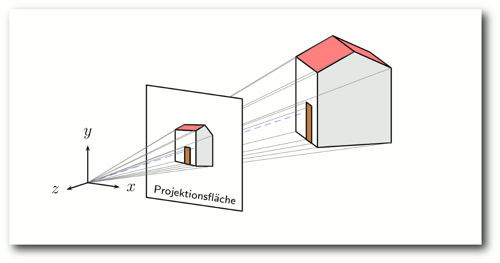Mit Sketch erstelltes Bild. (Code siehe Handbuch [5])
Interessant an dem Programm ist, dass es Code generiert, der entweder wie beim Paket pstricks oder wie beim Paket PGF mit dem Frontend TikZ direkt im LaTeX-Dokument nutzbar ist. Sketch besitzt eine kleine Szenenbeschreibungssprache, die wie pstricks aufgebaut ist, sodass es dem pstricks-Kundigen leicht fällt, sie zu erlernen. Für PGF mit dem Frontend TikZ sind kleinere Anpassungen vorzunehmen. Die Pakete PGF (und TikZ ist als Frontend dessen Bestandteil) sind über die Paketverwaltung z. B. unter Ubuntu installierbar – genauso wie das Paket pstricks als Bestandteil der jeweiligen LaTeX-Distribution verfügbar sein sollte.
Perspektive
Der Programmautor (Eugene K. Ressler) weist in seinem Handbuch („Sketch. Simple 3D sketching“, 2010/08/09, S. 27, Datei: sketch.pdf [4]) darauf hin, dass bereits Albrecht Dürer die auf mathematisch-geometrischen Verfahren beruhende Zentralperspektivdarstellung kannte (und hierüber 1525 ein Buch schrieb, wie in der Wikipedia zu lesen ist [6]). Die Kenntnis der Perspektive ist jedoch um einige Jahrhunderte älter. So berichtet zum Beispiel der Autor Al Seckel in seinem Buch „Unglaubliche optische Illusionen“ davon, dass der griechische Parthenon (gebaut im 5. Jh. v. Chr.) eine der größten optischen Illusionen in sich birgt, die sogenannte Gegenperspektive, mit der unserer Art, die Welt wahrzunehmen, entgegengewirkt wird, indem „… die Säulen nach hinten zu immer höher gebaut und die Abstände zwischen ihnen vergrößert [werden], sodass sie von einem fixen Blickpunkt aus (der gesteuert werden muss) scheinbar dieselbe Höhe und Entfernung zueinander aufweisen.“ (Al Seckel: „Unglaubliche optische Illusionen“, Tosa Verlag, 2005, S. 202 f.) Mit der perspektivischen Darstellung sollte man sich ein wenig auseinandersetzen, um Verständnis für Zeichnungen zu entwickeln, die sich nicht ausschließlich durch ihre Windschiefe auszeichnen.Installation und Start mit pspicture
Nach der Installation von Sketch (z. B. über die Paketverwaltung bei Ubuntu) erzeugt man zunächst einen neuen Ordner und erstellt hierin mit einem beliebigen Editor eine Datei z. B. mit dem Namen a.sk. Als deren Inhalt soll nun als erstes, sehr einfaches Beispiel (es lehnt sich an ein ähnliches im Handbuch an) ein unregelmäßiges Tetraeder [7] geschaffen werden. Um nun zu sehen, wie sich das gute Stück bei Drehungen im Raum verhält, wird es eingefärbt und gepierct, also von einer Stange durchbohrt. Dazu benötigt man insgesamt vier Dreiecke und eine einfache Linie. Zunächst werden vier Punkte definiert (etwa die, die man sehen würde, wenn man direkt über einer Pyramide schweben würde); drei Eckpunkte und einen in der Mitte:def p1 (0,0,1) def p2 (1,0,0) def p3 (0,1,0) def p4 (-.3,-.5,-.8)Die in runden Klammern umschlossenen und kommaseparierten Zahlen beziehen sich auf die Werte der x-, y- und z-Achse. Wer Probleme mit dem Koordinatensystem hat, der möge sich bei Mathe-Online [8] informieren. Da Sketch keine festen Körper auf Anweisung des Anwenders hervorzaubern kann, müssen Flächen erstellt werden, die dann wiederum zu Körpern zusammenstellbar sind. Zunächst wird nun mit drei von den oben definierten Punkten ein einfaches bläuliches Dreieck (polygon...) mit Name pierced_triangle erstellt (bzw. zunächst nur definiert) mitsamt einer roten Linie (line...), die das Dreieck durchstößt, wobei die gesamte Definition in geschweifte Klammern gefasst wird, da mehrere Anweisungen (Block) enthalten sind:
def pierced_triangle {
polygon[fillcolor=blue!30](p1)(p2)(p3)
line[linecolor=red](-1,-1,-1)(1,1,1)
}
Wichtig ist, sich zu merken, dass – um die Ressourcen zu schonen – im
Normalfall lediglich die für den Betrachter sichtbaren Seiten des Polygons
gezeichnet werden, nicht die im Hintergrund verdeckt liegenden. Für ein im
Vordergrund befindliches polygonales Objekt werden die
Eckpunkte im Gegenuhrzeigersinn angegeben, ansonsten wird es nicht sichtbar
sein. Mit der Zeile
polygon[fillcolor=blue!30](p1)(p3)(p2)in der obigen Definition wäre das Dreieck nun erst einmal unsichtbar, es sei denn, man würde es mit der Option [cull=false] (die man sich merken sollte) wieder auf dem Bildschirm sichtbar machen.
polygon[cull=false,fillcolor=blue!30](p1)(p3)(p2)Doch um die Zeichnung schließlich zu erzeugen, genügt nicht allein eine Definition. Sie muss innerhalb der Datei auch noch referenziert werden. Dazu wird der Name in geschweifte Klammern (ohne Leerzeichen) eingefasst:
{pierced_triangle}
Nachdem nun in der Beispieldatei a.sk die vier Punkte definiert, das
aufgespießte Dreieck und
die Referenzierung eingefügt wurden, kann das
vorläufige Ergebnis betrachtet werden, indem im Terminal der folgende Befehl eingegeben
wird:
$ sketch a.sk -o a.texWenn man die Datei a.tex öffnet, sieht man, dass tatsächlich eine pspicture-Umgebung mit dem entsprechenden Inhalt erzeugt wurde. Die gesamte Umgebung kann nun kopiert und in ein LaTeX-Dokument eingefügt werden, oder aber als Datei per \input{a} in das LaTeX-Dokumente integriert werden. Falls man aber eine schnell sichtbare eigenständige Version benötigt, dann setzt man folgenden Befehl in der Kommandozeile ab.
$ sketch -Te a.sk -o a.texHierbei steht -T für die Produktion eines kompletten LaTeX-Dokumentes und das angehängte e für das DIN-A4 Papierformat (man sketch zeigt die Schnellhilfe an). Danach muss noch aus der LaTeX-Datei a.tex eine dvi- bzw. eine ps- und pdf-Datei erstellt oder umgewandelt werden (also die normale Vorgehensweise für einen LaTeX-Nutzer, der mittels der pspicture-Umgebung Zeichnungen erstellen möchte).
Variation für PGF/TikZ
Nun ist es aber keineswegs so, dass man mit Sketch nur pspicture-Code erstellen kann, der mit LaTeX nutzbar ist. Mit Sketch kann auch ein Markup-Äquivalent für das LaTeX-Paket PGF mit dem Frontend TikZ erzeugt werden. Hierfür würde die bislang erstellte Datei ein wenig anders aussehen (andere Optionsbezeichnungen wie fill statt fillcolor und vor allem die Zeile mit global):
def p1 (0,0,1) def p2 (1,0,0)
def p3 (0,1,0) def p4 (-.3,-.5,-.8)
def pierced_triangle {
polygon[fill=blue!30](p1)(p2)(p3)
line[draw=red](-1,-1,-1)(1,1,1)
}
{pierced_triangle}
global { language tikz }
Mit den nächsten beiden Kommandos kommt man nun dem oben erwähnten
Ziel näher. Durch
$ sketch a.sk -o a.texwird hier ebenfalls der singuläre Code erzeugt und mit dem folgenden Kommando eine komplette LaTeX-Version.
$ sketch -Te a.sk -o a.tex
Eigene Dokumentvorlage
Da die „betriebseigene“ Dokumentvorlage vielleicht nicht unbedingt die Billigung des gemeinen Anwenders finden kann, gibt es die Möglichkeit, sich eine eigene Dokumentvorlage zu erstellen und mit der Option -t Vorlagedatei einzubinden. Das wäre zum Beispiel auf folgende Art und Weise möglich:
\documentclass[a4paper,12pt]{scrartcl}
\usepackage[ngerman]{babel}
\usepackage[utf8]{inputenc}
\usepackage[T1]{fontenc}
\usepackage{textcomp}
\usepackage{lmodern}
\usepackage{xcolor}
\usepackage{tikz}
\usetikzlibrary{arrows,shapes,patterns,backgrounds}
\usetikzlibrary{decorations.pathmorphing}
\usepackage{amsmath,amsthm,amsfonts,amssymb}
\pagestyle{empty}
\begin{document}
%%SKETCH_OUTPUT%%
\end{document}
Listing: sketch-template.tex
An der Stelle, an der %%SKETCH_OUTPUT%% steht (und übrigens nicht, wie derzeit
in der man-page zu lesen ist: %SKETCH_OUTPUT%) wird dann der generierte Code
eingefügt.
Wenn die Vorlagedatei vorlage.tex heißt, dann muss der Befehl für die
Beispieldatei a.sk also folgendermaßen lauten:
$ sketch -Te -t vorlage.tex -o a.tex a.sk
Das Beispiel komplettieren
Aufmerksame Beobachter registrieren, dass bei der Erzeugung der Datei a.tex eine Warnmeldung ausgegeben wird. Und bei dieser Warnmeldung wird offensichtich, dass der Punkt p4 nirgendwo referenziert worden ist. Bislang wurde der Punkt noch nicht verwendet. Das soll sich nun ändern. Dazu werden in die oben angegebene Definition def pierced_triangle jetzt noch drei Zeilen eingefügt, die jeweils ein weiteres Dreieck erstellen (bei Verwendung von pspicture muss fillcolor statt fill eingesetzt werden):% unten polygon[fill=green!30](p1)(p4)(p2) % links polygon[fill=yellow!30](p1)(p3)(p4) % Rueckseite polygon[fill=lightgray](p3)(p2)(p4)Damit ist das Ziel erreicht und das Tetraeder schlussendlich erstellt.
Räumliches Vorstellungsvermögen
Das Beeindruckende an einem Programm wie Sketch ist, dass, nachdem man sich der Mühe unterzogen hat, eine Zeichnung zu erstellen („programmieren“), mit minimalem Aufwand die gesamte Konstruktion nach Belieben verschoben, dupliziert und geändert werden kann. 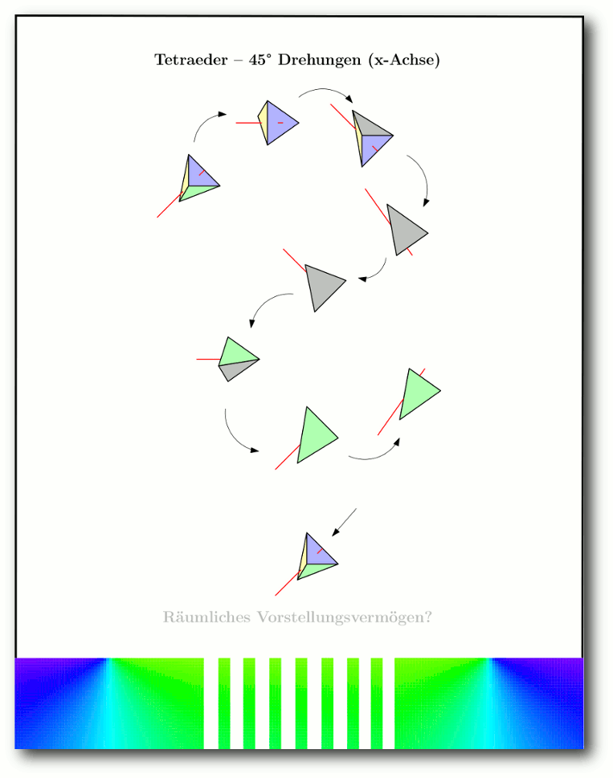Tetraeder, jeweils 45° um die Abszisse gedreht.
Und natürlich kann man bei den erzeugten Drehbewegungen im x/y/z-Raum sehr schnell die Orientierung verlieren und bass erstaunt sein, wie schön präzise (oder auch verwirrend) so ein computergeneriertes Ergebnis sein kann. Die obige Abbildung zeigt die Drehbewegung des eben erstellten Tetraeders in 45°-Schritten um die Abszisse gedreht, mit dem Ursprung (0,0,0) als Rotationszentrum. Bereits bei einer solch minimalistischen Konstruktion kommt man bei den selbst veranlassten Drehbewegungen schnell ins Grübeln. Hier gilt es, sich die Rechte-Hand-Regel [9] vor Augen zu führen, denn sie gilt bei Sketch. Wenn man die flache rechte Hand mit der Innenseite vor sein Gesicht hält, der Daumen nach rechts weist und man nun Zeige- und Mittelfinger untereinander und zum Daumen in eine 90°-Winkelung bringt, sodass nun alle drei Finger in Richtung einer Koordinatenachse stehen, dann bedeutet eine positive Drehung entlang der x-Achse ein Kippen der Hand in Richtung des Betrachters. Eine 90° Drehung bewirkt, dass der Zeigefinger nun auf das Gesicht und der Mittelfinger auf den Fußboden weist. Wenn man nun noch einmal die Abbildung betrachtet, werden die Drehungen auch verständlicher. Um dem eben gezeigten Beispiel ein solches weiteres Tetraeder anzufügen, das wie in der Abbildung gedreht (rotate) und etwas versetzt (translate, 2,5 Einheiten nach rechts und 2 Einheiten nach oben) erscheinen soll, wird dies (vor der Zeile global..., wenn der erzeugte Code für PGF/TikZ nutzbar sein soll) angehängt:
put { rotate(45, (0,0,0), [1,0,0])
then translate([2.5,2,0]) } {pierced_triangle}
Empfehlenswerte Beispiele
Das Handbuch zeigt darüber hinaus auch sehr gute Beispiele, die allerdings fast vollständig auf pstricks ausgerichtet sind. Man sollte es deshalb auf keinen Fall versäumen, sich die mitgelieferten Komplettbeispiele anzuschauen. Diese Beispiele können sich z. B. im Verzeichnis /usr/share/doc/sketch-doc/examples befinden. An diesem Ort sind auch mehrere Beispiele insbesondere zu PGF/TikZ zu finden. Von Kjell Magne Fauske (seine Webseite ist – auch einschlägig – empfehlenswert [10]) stammen die schönen Beispiele km-denavit.sk und km-puma.sk und von David Bremner das interessante Beispiel cube.sk. Ein sehr beeindruckendes Beispiel stammt vom Programmautor selbst und ist in – diesem nicht zuzurechnenden/anzulastenden (vgl. die Äußerung in der Datei hand.sk: „I am not responsible for …“) – Abänderungen in der nun folgenden Abbildung „Mit Sketch erstellte Hand” zu sehen. 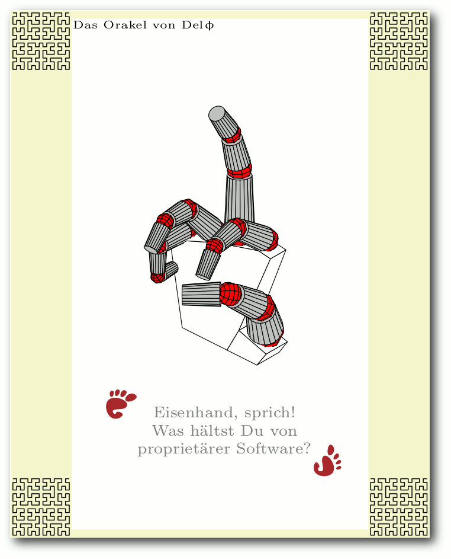Mit Sketch erstellte Hand.
WYSIWYG
Sketch ist darüberhinaus nicht nur für den direkten Gebrauch in LaTeX nutzbar, sondern – als Ergebnis der LaTeX-Anwendung – auch in WYSIWYG-Manier [11] über die Nutzung des verlustfrei skalierbaren PDF-Formats. Hier wurden die folgenden Komponenten genutzt:- Die beiden Beispieldateien sphere.sk und km-ssbl.sk aus dem Verzeichnis /usr/share/doc/sketch-doc/examples als Ideen-Grundlage für eine Sketch-Datei.
- Das offizielle GNU-Logo [12] von Victor Siame (Free Art License [13]).
- Das Programm Ipe (für die Nutzung vgl. den Artikel „Der Grafikeditor Ipe“, freiesMagazin 01/2011 [14]).
$ python ./svgtoipe 'official gnu.svg'Sobald die für Sketch notwendige Datei, z. B. a.sk, erstellt und passend bearbeitet wurde, kann, nachdem mit
$ sketch -Te a.sk -o a.texeine TEX-Datei erstellt wurde und mit dieser wiederum eine PDF-Datei, jene nun in ein für Ipe verwendbares Format konvertiert werden:
$ pdftoipe a.pdf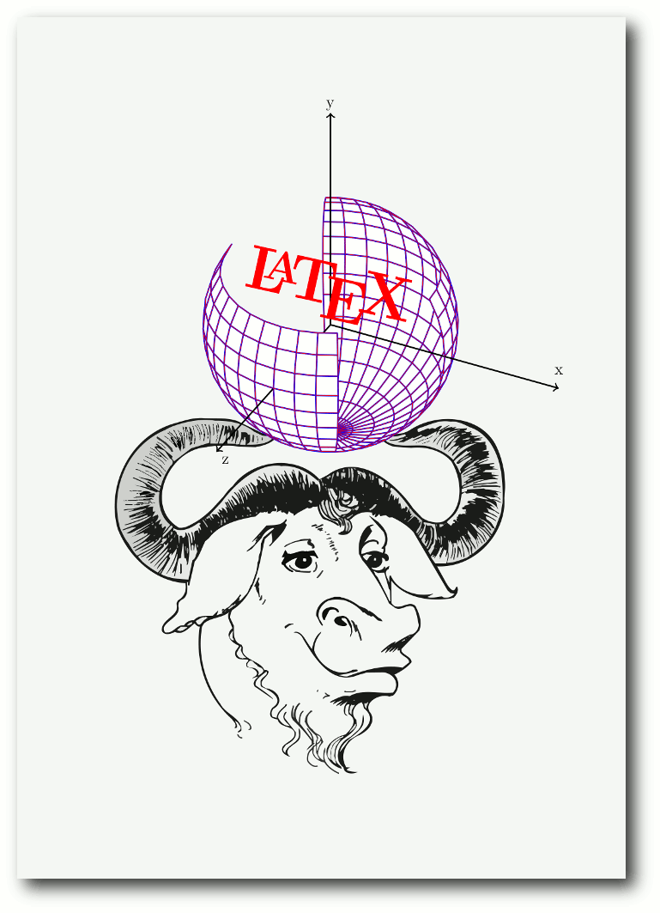
Mit Sketch erstellte PDF-Datei in WYSIWYG-Manier nutzen.
Der Rest ist zeichnerische Basisarbeit: Die für Ipe lesbaren Dateien hiermit öffnen, das Benötigte markieren und kopieren. Dann das Kopierte idealerweise über „File -> New Window“ in ein neues Ipe-Fenster einfügen und abspeichern. In der neuen Ipe-Datei können die eingefügten Teile nach Belieben skaliert, gedreht, eingefärbt und – bei Bedarf – mit viel Gedöns ausgeschmückt werden, wobei die Ausschmückungen entweder mit den Bordmitteln von Ipe oder aber über eine der oben geschilderten oder anderweitige Konvertiermöglichkeiten bezogen werden können.
Fazit
Der Einsatz des Programms Sketch, das grafisch nutzbaren LaTeX-Code zur Erstellung von 3-D-Objekten erzeugen kann, nutzt vor allem denjenigen, die bereits über LaTeX-Grundkenntnisse verfügen, oder gewillt sind sie sich anzueignen. Notwendig sind jedoch nur die elementaren Kenntnisse des LaTeX-Einsatzes zur Erzeugung von Dateien und die Umwandlung derselben, da Sketch vollkommen eigenständig nutzbare LaTeX-Dateien erstellen kann. Aus diesen wiederum lassen sich verlustfrei skalierbare PDF-Dateien erstellen, die im (insbesondere – aber nicht nur – für Anfänger nützlichen) problemlos handhabbaren WYSIWYG-Verfahren mit dem Programm Ipe nutzbringend einsetzbar sind. Um sinnvoll 3-D-Grafiken mit Sketch erstellen zu können, sollte man das Handbuch (derzeit brutto 42 Seiten) durcharbeiten und die mitgelieferten Beispieldateien unbedingt zu Rate ziehen. Nicht nur für Didi Hallervorden & Co. gilt: Das Erstellen von Sketchen ist eine ernsthafte Angelegenheit – kleiner Sketch, viel Vorarbeit.| Autoreninformation |
| Stefan Apke schätzt Sketche nicht nur von Didi Hallervorden & Co. Wer mit Sketch „Sketche“ erstellt, der kann darüber durchaus herzlich lachen, denn manche der frühen Eigenwerke werden „absurd im Raume stehen“ oder gar nicht richtig sichtbar sein. |
[1] http://www.frontiernet.net/~eugene.ressler/
[2] http://www.tug.org/PSTricks/main.cgi/
[3] http://sourceforge.net/projects/pgf/
[4] http://www.frontiernet.net/~eugene.ressler/sketch.pdf
[5] http://www.frontiernet.net/~eugene.ressler/sketch.html#Overview
[6] http://de.wikipedia.org/wiki/Perspektive#Geschichte
[7] http://de.wikipedia.org/wiki/Tetraeder
[8] http://www.mathe-online.at/mathint/zeich/i.html
[9] http://de.wikipedia.org/wiki/Drei-Finger-Regel
[10] http://www.fauskes.net/nb/introduction-to-sketch/
[11] http://de.wikipedia.org/wiki/WYSIWYG
[12] http://www.gnu.org/graphics/gnusvgart.html
[13] http://artlibre.org/licence/lal/en
[14] http://www.freiesmagazin.de/freiesMagazin-2011-01
[15] http://sourceforge.net/projects/ipe7/files/tools/
Diesen Artikel kommentieren
Zum Index
Simutrans – Schnelles Geld zu Lande, zu Wasser und in der Luft
von Michael Schwarz Geld ausgeben ist nicht schwer, Geld verdienen dagegen sehr. Vom Tellerwäscher zum Multimillionär ist es nicht selten ein langer Weg und die Durchfallquote ist hoch. Wer in der Realität ungern mit harter Währung zockt, sollte alternativ in der Virtualität sein Glück versuchen. Eine nicht ganz ernstzunehmende Möglichkeit, aus dem Nichts ein florierendes Imperium zu erschaffen, ist Simutrans [1]. Geld wird man aufgrund der freien Verfügbarkeit des Titels definitiv nicht verlieren und kleine Finanzgenies könnten an diesem Zeitvertreib Gefallen finden.Kurzübersicht
Man mag es ahnen, Simutrans ist eine Wirtschaftssimulation [2]. Mit einem gewissen Startkapital ausgestattet, beginnt man ein Spiel auf einer durch Zufall generierten Karte. Die Situation sieht wie folgt aus: Überall existieren kleine und große Städte sowie Industriegebäude, deren Bewohner und Waren nur darauf warten, gewinnträchtig von A nach B transportiert zu werden. In diese Bresche springt das Transportunternehmen des Spielers. Auf verschiedensten Wegen ist es möglich, Städte und Fabriken miteinander zu verbinden und somit ein Transportnetz aufzubauen. Für jede Tonne transportierter Ware oder jeden transportierten Passagier gibt es Bares direkt aufs Konto. Der Haken: Transportfahrzeuge kosten je nach Eigenart Geld für jeden gefahrenen Kilometer. Generell verschlingt jeder Transportweg einen gewissen Betrag an Instandhaltungskosten. Das gilt ebenso für die Transporter selbst. Es heißt, die richtige Balance zu Gunsten des eigenen Kontostands zu finden, sonst rutscht man sehr schnell in die roten Zahlen und kann zukünftig bei Peter Zwegat [3] vorstellig werden.Die Möglichkeiten
Im Detail stehen dem aufstrebenden Transportguru unter anderem reguläre Fahrzeuge aus dem Straßenverkehr wie Lastkraftwagen oder Busse zur Verfügung. Reichen die Kapazitäten eines LKWs nicht mehr aus, so ist es möglich, Personen- oder Güterzüge einzusetzen, um größere Mengen von einer Haltestelle zur nächsten zu befördern. Liegt zwischen dem Ausgangspunkt und dem Zielbahnhof eine große Wasserfläche (Seen, Flüsse, Meere), kann darüber entweder eine Brücke gebaut werden oder man greift gleich zu Schiffen, um das blaue Nass zu überwinden. Müssen große Mengen Waren transportiert werden und es liegt eine enorme Strecke zwischen Anfangs- und Zielpunkt, sollte ein Flugzeug jedes Hindernis überwinden und auf dem schnellsten Weg von A nach B transportieren können. Diese letzte Möglichkeit ist im Regelfall auch die teuerste Transportalternative und sollte nur mit Bedacht und dem richtigen Polster im Portemonnaie eingesetzt werden.Erinnerungen werden wach
Stetige Leser von freiesMagazin dürften sich erinnern, dass es vor einiger Zeit bereits einen Artikel zu einer Transportwirtschaftssimulation gab. Das damals vorgestellte OpenTTD (freiesMagazin 07/2010 [4]) verfolgt das gleiche Spielprinzip, beide Titel unterscheiden sich aber nicht nur grafisch voneinander. Ein Mehrspielermodus für Simutrans befindet sich noch in der Entwicklung und ist nur in der Entwicklerversion (engl.: Nightly-build) enthalten. Subventionen wird man in Simutrans auch nicht finden können, ebenso wenig wie die Veränderung der monatlich produzierten Waren einer Fabrik. Industriezweige bleiben in Simutrans erhalten während es in OpenTTD durchaus sein kann, dass diese Konkurs anmelden oder anderweitig von der Bildfläche verschwinden. In Simutrans gibt es keine Möglichkeit, sich Geld in Form von Krediten zu leihen, dafür kann man dort auch mit roten Zahlen fleißig weiterbauen. Wen die dauernd defekten Fahrzeuge in OpenTTD gestört haben, der kann sich freuen. Einmal angeschaffte Fahrzeuge bleiben in Simutrans intakt, benötigen demnach keine Zwischenstopps zur Inspektion und gehen auch nicht kaputt oder müssen wegen Überalterung ersetzt werden. Das Gleiche gilt auch für den Ärger, den man mit Bürgermeistern hatte, die einem in OpenTTD schnell mal die Baurechte entzogen. In Simutrans herrscht Neutralität gegenüber dem Spieler. Soll heißen, dass niemand einem den Bau einer Strecke verbietet oder an gewisse Bedingungen knüpft.Der erste und wichtigste Transport
Bevor massenhaft Waren ihren Weg über digitale Schienen, Straßen und Meere finden, muss das Spiel erst einmal auf den Computer transportiert werden. Simutrans ist sehr benutzerfreundlich gehalten und benötigte in keiner Testsituation besondere Anpassungen am System, um ausgeführt zu werden. Auf der Homepage selbst werden SDL [5] und SDL_mixer [6] als Grundvoraussetzung genannt. Diese Komponenten kommen meist automatisch mit der Distribution oder lassen sich einfach über die Paketverwaltung nachinstallieren. Beziehbar ist Simutrans über dessen Homepage [7]. Ist diese aufgerufen, klickt man auf „Download“ und anschließend auf den Punkt „Simutrans Complete“. Die Seite verschiebt sich ein Stück nach unten. Nun wählt man in der erscheinenden Auswahl (Windows, Linux, Haiku, Mac) den Punkt „Linux“. Eine Weiterleitung mit Direktdownload zu SourceForge erfolgt. Auf diesem Weg erhält man immer die jeweils aktuellste stabile Version des Spiels. Für den Artikel wurde die Version 102-2-2 des Komplettpaketes benutzt [8], welche aber ggf. bald veraltet ist. In die gleiche Falle könnten diejenigen tappen, die versuchen, Simutrans über die distributionseigenen Quellen zu installieren. Aufgrund der Tatsache, dass Simutrans extrem einfach heruntergeladen und ausführbar gemacht werden kann, wird an dieser Stelle vom Bezug über die Distributionsquellen abgeraten. Ist die Datei simulinux-complete-102-2-2.zip mit ihren sage und schreibe 5,8 MB aus dem Internet heruntergeladen, so muss diese noch an einer beliebigen Stelle entpackt werden. Ist dies geschehen, navigiert man in den soeben entpackten Hauptordner Simutrans und führt, um das Spiel zu starten, die Datei simutrans aus. Nun kann fleißig transportiert und Geld gescheffelt werden.Eine praktische Schritt-für-Schritt-Einführung
Ist Simutrans gestartet, sieht man eine Auswahl aller verfügbaren Spielpakete, nachfolgend Grafiksets genannt. Dazu später mehr, zu Beginn begnügt man sich mit dem Standard und klickt die einzig verfügbare Schaltfläche „Pak“. Man landet im Hauptmenü des Spiels. Die Einstellungen im Hauptmenü sind selbsterklärend und sollten zu Beginn bei ihren Werten belassen werden. Einzig der Wert „Anteil Kraftwerke (%)“ sollte auf 60-80 angehoben werden, um die Wahrscheinlichkeit für ein Ölkraftwerk zu erhöhen. Das folgende Kurztutorial benötigt eines. Das Spiel ist grundlegend sehr anfängerfreundlich, kann jedoch später über die Anpassung dieser Optionen auch anspruchsvoller gestaltet werden. Mit einem Klick auf „Starte Spiel“ wird eine Karte generiert und das Spiel beginnt. Am einfachsten sind Transporte des Rohstoffs Öl von einem Bohrturm zu einem nahe gelegenen Ölkraftwerk. Das ist leicht zu realisieren und spült in angenehmer Regelmäßigkeit Geld in die Kasse. In der oberen Leiste befinden sich verschiedene Schaltflächen, relativ mittig eine mit der Bezeichnung „Listenverwaltung“ (fährt man mit der Maus über die Knöpfe, erscheint der Text). Klickt man diese an und wählt anschließend „Fabrikliste“ (neues Fenster, zweite Schaltfläche von rechts), öffnet sich ein weiteres Fenster mit allen Industrien der Karte. 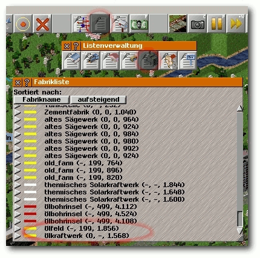Über die Listenverwaltung sind die Fabriken leicht zu finden.
Interessant sind die Einträge „Pferdekopf-Ölpumpe“ oder „Ölfeld“. Ist solch ein Eintrag vorhanden, klickt man ihn an, und ein Statusfenster der Industrie öffnet sich. Klickt man im Statusfenster auf das Bild oben rechts, zentriert sich die Hauptkarte darauf. 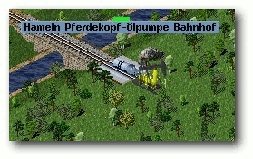
Angebot …
Da die Ölquelle entdeckt wurde, sollte sich noch ein Abnehmer dafür finden lassen. Im Statusfenster der Ölquelle stehen unter „Verbraucher“ alle Industrien nach Nähe sortiert, die das Öl entgegennehmen würden. Befindet sich dort ein Punkt „Ölkraftwerk“, klickt man darauf, um dessen Statusfenster ebenfalls zu öffnen. Mit Glück ist das Kraftwerk nahe und man kann zwischen beiden Punkten beispielsweise eine Schiene verlegen.
… und Nachfrage.
Zum Errichten einer Bahnlinie bewegt man die Maus auf den Punkt „Eisenbahnwerkzeuge“ (obere Leiste, fünfter Punkt von links). Klickt man ihn an, öffnet sich das Bahnwerkzeugmenü. Dort wählt man ganz links eine günstige Schiene aus. Der Schienenbaumodus beginnt. Ein Klick auf eine freie Stelle der Hauptkarte legt den Anfangspunkt der Bahnstrecke fest, ein weiterer Klick auf eine andere Stelle deren Endpunkt, und damit ist die Strecke gebaut. Mehr Kontrolle erhält man, wenn man die Maustaste nach dem ersten Klick gedrückt hält. Die Bahnstrecke wird gebaut, indem die Maus mit gedrückter Taste bewegt wird. Lässt man die Maustaste los, erscheint die Strecke. 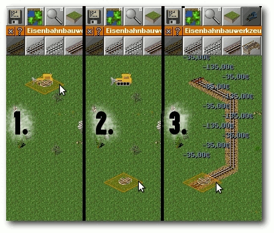
In drei Schritten zum Ergebnis.
Man klickt nun direkt neben die Ölquelle, um den Bahnbau zu starten, navigiert danach auf der Karte zum Ölkraftwerk und klickt direkt daneben, um die Strecke zu errichten. Die Strecke steht, leider fehlen noch die Bahnhöfe, um Waren zu verladen. Im Eisenbahnwerkzeugemenü wählt man daher „Güterbahnhof“ (neunte Schaltfläche von rechts) und platziert jeweils auf dem Gleis neben der Ölquelle und dem Ölkraftwerk einen Bahnhof. Nun hat der Zug eine Strecke von A nach B. 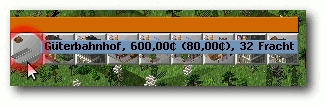
Ein Güterbahnhof.
Apropos Zug: Um Züge zu bauen, bedarf es eines Bahndepots. Dieses ist ebenfalls im Eisenbahnwerkzeugemenü auszuwählen und auf ein Endstück der bestehenden Strecke zu bauen, indem man darauf klickt. Ist kein Endstück mehr frei, verlängert man die Strecke um ein Bahnstück und errichtet dort das Bahndepot. 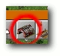
Bausymbol Bahnhofsdepot.
Einmal auf das Bahndepot geklickt, öffnet sich das Bahndepotfenster. Hier wählt man eine beliebige Lok (Reiter „Loks“) und einen Kesselwagen oder Ölwaggon (Reiter „Waggons“) aus. Achtung, das Objekt der Wahl wird durch einmaliges Anklicken bereits gekauft. Um lediglich Informationen über das Fahrzeug zu erhalten, genügt es, den Mauszeiger darüber zu bewegen. Eine Lok und ein Ölwaggon reichen zunächst aus. Im Fenster sollte nun eine kleine Lok mit angehängtem Ölwaggon sichtbar sein. Als nächstes klickt man auf den Button „Fahrplan“ (ein neues Fenster öffnet sich) und anschließend direkt auf den Bahnhof neben der Ölquelle sowie den Bahnhof neben dem Ölkraftwerk. Beim Punkt der Ölquelle sollte der Wert bei Mindestbeladung auf 100% stehen, um kostspielige Leerfahrten zu vermeiden. 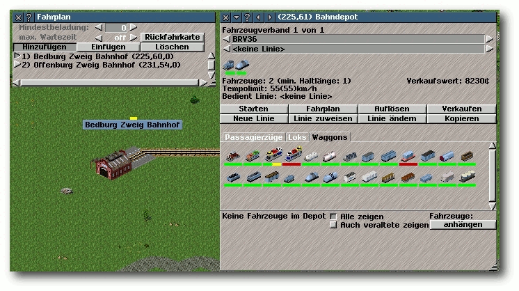
Mit richtiger Route rollt der Rubel.
Ist der Fahrplan erstellt, schließt man das Fenster und klickt im Statusfenster des Bahndepots auf „Starten“. Der Zug verlässt nun das Depot, fährt die festgelegte Strecke ab und befördert Öl von der Ölquelle zum Ölkraftwerk. Der erste Grundstein zum Transportimperium wurde gelegt. Eine Info zum Schluss: Das große Geschäft lässt sich mit Personenverkehr machen. Wenn ein Passagier drei- oder viermal umsteigen muss, um sein Ziel zu erreichen, klingelt die Kasse. Ein weiterer Grundsatz zum Geldverdienen: je länger die Distanz zwischen Abfahrt- und Zielbahnhof, desto größer der Profit. Das ist ebenso gültig für den Warenverkehr.
Optik wechsle dich
Für manches Auge ist das Gewand, in dem Simutrans daherkommt, ein großer, wenn nicht sogar der Nachteil schlechthin des sonst eigentlich sehr guten Spiels. In Zeiten von 360-Grad- und 3-D-Zoom-Ansichten wirkt die grobpixelige Aufmachung eines Simutrans fast schon grotesk. Einen 3-D-FullHD-Patch gibt es bisher nicht, jedoch die Möglichkeit das Äußere des Spiels, und mit ihm einige der Spielelemente, über sogenannte Grafiksets (engl.: Paks oder Paksets) anzupassen. So offeriert das Pak128 höher aufgelöste und dadurch hübschere Texturen für das Spiel, schlägt aber auch mit dem sechsfachen Speicherbedarf zu Buche. Das Standard-Grafikset (Pak64), welches bei der Grundinstallation mitgeliefert wird, benötigt entpackt lediglich 10 MB, während Pak128 bereits 62 MB Festplattenspeicher für sich beansprucht. In Zeiten von Terabyte-Festplatten sollte dies allerdings kein Problem darstellen. Ebenfalls nett anzusehen ist das Pak192.Comic, dessen komplette Optik absichtlich in weniger realistischen Formen und Farben gehalten ist. Durch die hochaufgelösten Grafiken ist ein sehr nahes Heranzoomen möglich, ohne mit groben Pixeln konfrontiert zu werden. Wer möchte, kann Simutrans auch in einer an deutsche Verhältnisse angepassten Version spielen. Auch Japan oder Großbritannien stehen zur Verfügung. Darüber hinaus gibt auf der Simutrans-Homepage [9] noch andere Grafiksets zum Download. Die Installation eines Grafiksets ist meistens einfach. Wenn der Simutrans-Ordner unter /home/username/simutrans abgelegt wurde, entpackt man das heruntergeladene Archiv des Grafiksets nach /home/username. Die Grafikset-Archive enthalten meist einen Ordner Simutrans und darunterliegend den Ordner mit den Set-Dateien. Das bewirkt, dass im eigentlichen Simutrans-Ordner lediglich ein weiterer Ordner mit dem Namen des Grafiksets angelegt wird.Kleines Programm, großer Hunger
Simutrans hat in seinem Auslieferungszustand einen beachtlichen Appetit an Systemressourcen – gemessen am grafisch minmalistischen Gewand des Programms jedenfalls. Wird der Arbeitsspeicher mit circa 100 MB nach dem Start der Anwendung noch nahezu verschont, verursacht das Spiel an einem Zweikern-System mit installiertem Pak128 eine permanente Auslastung zwischen 30 und 50 Prozent auf einem Kern. Glücklicherweise kann man durch etwas Feinjustierung den Hunger etwas zügeln, was Simutrans auch auf älteren Geräten interessanter erscheinen lässt. Der Schlüssel zum Glück ist hierbei die Datei simuconf.tab unter .../simutrans/config. Öffnet man diese Datei mit einem beliebigen Texteditor, kann man per Hand einige Werte verändern, um das Spiel zu zähmen. Der Wert frames_per_second kann auf 12 oder 10 gesenkt werden. Dadurch wird die Bildwiederholrate von ursprünglich 25 Bilder pro Sekunde auf den eingetragenen Wert gesenkt. Das Spiel selbst läuft weiterhin flüssig, keine Bange. Sollten doch gelegentliche Ruckler auftreten, sollte ein Wert von 15 ressourcensparende Abhilfe schaffen. Läuft das Spiel im Vollbildmodus, sperrt man das restliche System aus, sodass sich der X-Server einzig um Simutrans kümmert. Das verringert zwar nicht die Last, die Simutrans selbst verursacht, das Programm wird aber flüssiger dargestellt. Der Wert fullscreen = 0 sollte daher auf fullscreen = 1 verändert werden – falls gewünscht und nötig. Wird im Vollbildmodus eine geringere Auflösung erzwungen, werden weitere kostbare Ressourcen auf älteren Systemen gespart. Die Werte display_width = 800 und display_height = 600 sind dabei das Mindestmaß der Dinge (niedrigere Werte führen zu fehlenden Menüpunkten am rechten Bildschirmrand). Möglich, aber auch das Spielverhalten verändernd, sind ebenso Anpassungen der Werte max_hops und max_transfers. Beide Werte beeinflussen die Routenfindung von Passagieren und Waren. Hier ist Fingerspitzengefühl bei der Anpassung an das jeweilige PC-System gefragt. Am Besten belässt man die vorgegebenen Werte oder verringert diese nur minimal. Letzter Weg zur Ressourcenschonung: Das Spielen mit einem optisch leichtverdaulichen Grafikset (pak32.comic)Aufgepasst und hergehört
Die Töne, welche Simutrans im Laufe des Spiels so von sich gibt, sind allesamt Mittelmaß und nicht weiter besonders. Die musikalische Hinterlegung ist komplett mit Midi-Dateien realisiert, das dafür aber sehr gut. Die Melodien sind teils peppig und gar nicht mal so schlimm, wie man vielleicht bei der Erwähnung von Midi erahnen möchte. Die Toneffekte werden leider schnell eintönig, da es für jedes Vehikel nur einen oder zumindest wenige zu geben scheint. Glücklicherweise ist es über die Spieloptionen möglich, sowohl die Midi-Hintergrundmusik als auch die Toneffekte zu deaktivieren und stattdessen im Hintergrund dem Web-Radio oder einer anderen Musikquelle zu lauschen. – Ganz ehrlich? Musik und Ton machen nicht gerade den Reiz eines Simutrans aus.Computergesteuerte Gegner
Steht die Frage im Raum, ob Simutrans auch das Spielen gegen den Computer ermöglicht, fällt die Antwort zwiegespalten aus. Ja, Simutrans bietet die Möglichkeit, einen computergesteuerten Kontrahenten mitwirtschaften zu lassen. Nein, so wirklich funktioniert das nicht. In drei Testspielen wurde jeweils eine Waren-KI und eine Personen-KI hinzugeschaltet, also eine künstliche Intelligenz, die die Waren wegschnappen sollte, und eine, die sich über den Personenverkehr her macht. Zweitere funktionierte auch ganz ordentlich, genauer gesagt zu ordentlich. Bereits bestehende Personenverkehrsnetze wurden durch weitere Bushaltestellen der KI überlagert, sodass in einer mittleren Ortschaft 6 oder 7 Busse der KI durchschossen. Die Haltestellen waren entsprechend leergefischt und die Geschichte somit weder für den menschlichen Spieler noch für die KI rentabel. Gut durchdachtes Wirtschaften sieht anders aus. Etwas intelligenter, aber nicht besser, stellte sich die Waren-KI an. Sie machte schlicht und ergreifend nichts, in keinem der drei Spiele. Wo nichts investiert wird, geht auch kein Geld verloren. Somit war der Waren-Kontrahent nicht mehr als ein digitaler Zuschauer. Schade.Fazit
An dieser Stelle eine Warnung: Wer sowieso gerne Wirtschaftssimulationen spielt, läuft Gefahr, Simutrans-süchtig zu werden. So ein Abend ist schnell verzockt, wenn laufend ein Auge auf die Rentabilität von Zügen und Bussen geworfen werden muss. Sehr schön umgesetzt ist bisher, dass Fabriken kein Endprodukt produzieren, wenn nicht vorher die benötigten Rohstoffe vor Ort sind. Wer also ein Chemiewerk dazu bewegen möchte, Druckerfarbe herzustellen, wird nicht darum herumkommen, dieses Werk mit Öl zu beliefern. Fast schon schade ist es, dass man die Produktivität einer Industrieanlage nicht durch konstantes Anliefern von Personal erhöhen kann. Somit bleibt der finanzielle Faktor der einzige, der einen dazu bewegt, Industrieanlagen an den Nahpersonenverkehr anzubinden. Ähnliches gilt für Städte. Städte wachsen, wenn man beginnt, Passagiere zu transportieren; die Wachstumsrate ist allerdings überschaubar. Ein weiterer, zweischneidiger Kritikpunkt: Die Fahrzeuge sind unverwüstlich und fahren, wenn der Spieler denn soviel Ausdauer hat, nach 100 Jahren immer noch ihre Strecke wie am ersten Tag. Für manchen wird gerade das der Grund sein, Simutrans OpenTTD vorzuziehen, schöner wäre es allerdings, gäbe es eine zuschaltbare Option, um den Zahn der Zeit und den Verschleiß an den Fahrzeugen nagen zu lassen. Somit hätte der Spieler selbst die Wahl zwischen Vollsimulation und Realitätsnähe. Alles in allem ist Simutrans ein Spiel, das für Liebhaber des Genres – und damit ähnlich wie OpenTTD – nie langweilig wird. Nach jedem Klick auf „Spiel Starten“ wird eine neue Karte mit neuen Städten und anderen Industriezweigen erstellt. Auch wenn die grundlegenden Aufgaben gleich bleiben, verändert sich doch die Herangehensweise jedes Mal aufs Neue. Mehr Berge, mehr Seen und Bäche, und wenn die Eintönigkeit wirklich mal zu sehr überwiegt, sorgt ein alternatives Grafikset mit optischen und spielerischen Anpassungen für neuen Wind und Umdenken. Richtig gemein wird es, wenn man im Titelmenü „Mit Epoche ab Jahr“ aktiviert und als Startjahr 1860 oder 1910 einträgt. Wer es wagt, hat hoffentlich ein Faible für Pferdekutschen und Dampf- oder Segelschiffe. Links[1] http://www.simutrans.com/index.html
[2] http://de.wikipedia.org/wiki/Wirtschaftssimulation_(Spiel)
[3] http://de.wikipedia.org/wiki/Peter_Zwegat
[4] http://www.freiesmagazin.de/freiesMagazin-2010-07/
[5] http://www.libsdl.org/
[6] http://www.libsdl.org/projects/SDL_mixer/
[7] http://www.simutrans.com/download.htm
[8] http://sourceforge.net/projects/simutrans/files/Simutrans%20complete/102-2-2/simulinux-complete-102-2-2.zip/download
[9] http://www.simutrans.com/paksets.htm
[10] http://www.simutrans.de/
[11] http://simutrans-germany.com/wiki/wiki/tiki-index.php?page=de_Index
[12] http://de.wikipedia.org/wiki/Simutrans
| Autoreninformation |
| Michael Schwarz (Webseite) lässt es neben dem Beruf gerne etwas behutsamer angehen und entspannt sich gerne bei Spielen wie Simutrans, in denen man etwas aus dem Nichts erschafft, nur um dann zuzusehen, wie die Dinge langsam aber kontinuierlich ihren Lauf nehmen. |
Zum Index
Rezension: Bash – kurz & gut
von Dominik Wagenführ Auch wenn Linux auf dem Desktop eine immer größere Verbreitung findet und heutige, moderne Desktopumgebungen fast vollkommen mit Mausschubserei auskommen, muss man ab und zu doch einmal die Konsole um Hilfe bitten. Auf den meisten Systemen ist da die vorinstallierte Bash das Mittel der Wahl. Das Buch „Bash – kurz & gut“ von Karsten Günther soll einen Überblick über diese Shell bieten.Inhalt
Das Buch „Bash – kurz & gut“ von Karsten Günther liegt bereits in der zweiten Auflage aus dem O'Reilly-Verlag vor. Da es erst Ende 2010 in den Handel gekommen ist, konnte sich der Autor auch mit den neuen Funktionen der Bash 4.1 beschäftigen. Im Buch findet man alles was das Shell-Herz begehrt. So wird am Anfang auf die verschiedenen Funktionen der Bash (interaktive Shell, Login-Shell, POSIX-Shell etc.) und deren Optionen eingegangen sowie auf die Kombination von Befehlen mittels || und &&. Natürlich werden auch Pipes und Umleitungen erwähnt. Einen großen Teil des Buches nehmen die verschiedenen Ersetzungsmöglichkeiten der Bash in Anspruch. So geht Karsten Günther auf die Expandierung von Klammern ein, ebenso auf die Tilden- und Parametersetzung. Wichtig ist natürlich auch die Dateinamenersetzung (Globbing). Wer mit der Bash interaktiv arbeitet (bei den meisten Nutzern der Normalfall), der sollte sich mit dem zugehörigen Kapitel beschäftigen, da hier auf die verschiedenen Eigenschaften von Readline, der History und Alias-Konstrukten eingegangen wird. In zwei weiteren Kapiteln werden danach noch einige Details zu Variablen und Hintergrundprozessen (Jobs) erläutert. Den zweiten großen Teil des Buches nimmt die Übersicht der eingebauten Bash-Befehle ein, bei denen auch auf Kontrollstrukturen und Schleifen eingegangen wird. Ein extra Kapitel zu Bashskripten hat sich der Autor aber gespart, die Variablen bzw. Besonderheiten des nicht-interaktiven Modus werden verteilt im Buch erklärt.Zielgruppe
Die Zielgruppe sind definitiv Bash-erfahrene Anwender, die ein Nachschlagewerk benötigen. Die Informationen im Buch sind dabei zu einem großen Teil der Bash-Manpage und Bash-Reference entnommen (S. 9), daher findet man in dem Buch auch keine Geheimtipps. Als Ratgeber für die Jackentasche ist das Buch aber gut geeignet. Sinnvoll ist vor allem, dass die Besonderheiten der Bash 4.0 bzw. 4.1 extra erwähnt werden. Anfänger werden mit „Bash – kurz & gut“ nicht viel anfangen können. Auch wenn Befehle und Optionen der Bash erklärt werden, gibt es nur an sehr wenigen Stellen konkrete Beispiele, um sich vorzustellen, was eine Funktion wirklich bewirkt. So wird einem nach dem Lesen der anderthalb Seiten zu arithmetischen Ausdrücken (S. 50 f) nicht sofort klar, wie man in der Bash rechnen kann.Kritik
Im Großen und Ganzen ist „Bash – kurz & gut“ von Karsten Günther ein gutes Nachschlagewerk für Bash-Anwender. Leider krankt das Buch aber an einigen Stellen, die der eine oder andere als essentiell ansehen könnte. So wird gleich auf den ersten Seiten des Buches erklärt, dass anstelle der bekannten eckigen Klammern aus den Manpages für optionale Argumente eine graue Schrift benutzt wird. Prinzipiell ist das okay, nur leider hält sich der Autor nicht selbst an die Konvention. So findet man im Buch Befehlsdefinitionen wie (S. 93) alias -p Name[=Befehl] ... Wer Manpages kennt, kann sich darunter vielleicht noch etwas vorstellen. Komplizierter wird es dann bei (S. 125) time [-p]] [!] Befehlszeile [ - Befehlszeile... Ob man das wirklich so eingeben soll bzw. wo nun die eine öffnende und die andere schließende eckige Klammer fehlt, wird nicht sofort klar. Und wieso selbst der time-Befehl grau formatiert wurde, ist auch nicht ersichtlich. Solche kleinen Fehler ziehen sich leider etwas durchs Buch. Sie sind nicht gravierend, können aber verwirren. So ist es auch ärgerlich, dass beispielweise bei der alias-Beschreibung im Buch (siehe oben) im erklärenden Text darunter nicht mehr von Befehl, sondern plötzlich von Definition die Rede ist. Ebenfalls verwirrend ist an einigen Stellen die Verwendung von spitzen Klammern bei Optionen (z. B. <-s> auf S. 104 bei enable), deren Bedeutung im Buch nicht erklärt wird. Was man auch beachten sollte: Karsten Günther geht bei der Beschreibung von Tastaturbefehlen immer von einer englischen Tastatur aus. Das heißt, wenn von der Taste „]“ die Rede ist, ist auf einer deutschen Tastatur eigentlich „AltGr“ + „9“ gemeint. Wer über solche Fehler hinwegsehen kann, findet in dem preiswerten Buch aber eine wirklich gute Zusammenfassung der Bash-Eigenschaften.| Buchinformationen | |
| Titel | Bash – kurz & gut |
| Autor | Karsten Günther |
| Verlag | O'Reilly, 2010 |
| Umfang | 152 Seiten |
| ISBN | 978-3-89721-562-7 |
| Preis | 9,90 Euro |
| Autoreninformation |
| Dominik Wagenführ (Webseite) ist eigentlich Mausschubser, hat aber auch keine Angst vor der Shell. Wie bei den meisten Nutzern kommt dabei die Bash zum Einsatz. |
Zum Index
Rezension: Root-Server einrichten und absichern
von Hans-Joachim Baader Root-Server, also eigene Server mit Root-Zugang, sind nichts Neues, aber sie werden immer leistungsfähiger und immer erschwinglicher. Bücher, die sich speziell dem Thema Root-Server widmen, gibt es bisher erst wenige. Das neu erschienene Buch „Root-Server einrichten und absichern“ [1] von Stefan Schäfer könnte hier eine Lücke schließen, zumindest für diejenigen, die sich nicht ausschließlich auf zusammengesuchte Online-Anleitungen verlassen wollen. Redaktioneller Hinweis: Der Artikel „Root-Server einrichten und absichern“ erschien erstmals bei Pro-Linux [2]. Da das Buch die Praxis und nicht die Theorie darstellen will, kann es logischerweise nicht jede Linux-Distribution behandeln. Der Autor beschränkt sich pragmatisch auf openSUSE [3] und Debian [4], die sicher zu den häufigsten Systemen auf Root-Servern zählen. Wünschenswert wäre vielleicht noch CentOS [5] gewesen, das wegen seiner langen Support-Zeit auf Root-Servern gut einsetzbar ist und auch gerne genutzt wird. Umgekehrt ist openSUSE wegen der kurzen Support-Zeit wahrscheinlich keine gute Wahl auf einem Root-Server, aber es wird häufig angeboten und daher ist es verständlich, dass der Autor es einbezieht. Nach der kurzen Einleitung in Kapitel 1 geht es in Kapitel 2 gleich richtig los. Das Kapitel beschreibt die Installation in verschiedenen Varianten, mit (bevorzugt) und ohne RAID, jeweils für openSUSE und Debian. Erfreulich ist die Empfehlung, LVM zu verwenden. Einen nützlichen Trick verschweigt der Autor allerdings: Statt alle Partitionen gleich zu Anfang maximal zu machen, kann man bei LVM mit kleineren Partitionen beginnen und den nicht allokierten Rest in Reserve halten. Kommt ein Dateisystem an seine Grenzen, können seine Partition (logisches Volume) und sein Dateisystem problemlos vergrößert werden, sogar im laufenden Betrieb. Ist jedoch keine Reserve vorhanden, müsste man zuerst ein anderes Dateisystem verkleinern, was nicht immer möglich ist (bei xfs gar nicht) und viel Zeit kosten kann. Daneben beschreibt das zweite Kapitel grundlegende Dinge zur Systemeinrichtung, darunter die Verwaltung von Diensten („Umgang mit Daemonen“), Erzeugen und Verwalten von Zertifikaten, Chroot-Umgebungen und Zeiteinstellungen. Das Kapitel belegt nahezu ein Viertel des Textes (ohne Anhang). Die folgenden Kapitel beschreiben die Einrichtung von spezifischen Diensten, wobei unter den vorhandenen Alternativen genau eine konkret behandelt wird. Die Software-Auswahl ist in allen Fällen vernünftig, auch wenn es z. B. beim DNS-Server BIND einige vielleicht bessere Alternativen gibt [6] [7]. Da die Konfiguration der einzelnen Dienste aber aufeinander abgestimmt wurde, sollte man es sich gut überlegen, ob man einer anderen Software den Vorzug gibt. Im recht kurzen Kapitel 3 geht es um SSH und FTP. Wer einen FTP-Server benötigt, findet hier eine knappe Anleitung zur Konfiguration von vsftpd. Das fast ebenso kurze Kapitel 4 gibt eine kurze Einführung in den Aufbau einer Firewall mit iptables. Der Autor konfiguriert die Firewall im Detail, sodass vom Server nach außen alles durch die Firewall gehen kann, von außen aber nur die Ports erreichbar sind, die erreichbar sein sollen. So ist man davor geschützt, dass ein Dienst, den man nicht beachtet hat, versehentlich von außen erreichbar und möglicherweise angreifbar ist. Generell stellt der Autor Sicherheit über Bequemlichkeit und alles andere; eine Maxime, die nur begrüßt werden kann. In Kapitel 5 wird die Einrichtung eines DNS-Servers sowie das Aufsetzen von dynamischem DNS mit Hilfe dieses Servers beschrieben. Ein DNS-Server wird nicht von jedem benötigt, aber wenn man ihn einrichtet, kann er durch das Caching möglicherweise die Namensauflösung beschleunigen. Kapitel 6 behandelt MySQL und Apache mit PHP, was den LAMP-Server komplettiert. 68 Seiten werden diesem Thema gewidmet, überwiegend für die mannigfaltigen Möglichkeiten der Apache-Konfiguration und virtueller Hosts. Kapitel 7 ist mit 90 Seiten das umfangreichste Kapitel des Buchs. Dieser Platz ist auch angemessen, da es hier um das komplexeste Thema im Server-Bereich geht, die E-Mail. Der Autor warnt auch ganz klar vor den möglichen rechtlichen Problemen, denen man sich mit einem Mail-Server aussetzt. Diese Probleme erst gar nicht aufkommen zu lassen, ist das Motto der hier beschriebenen Konfiguration, und diverse Entwurfsentscheidungen werden davon geleitet. Ein vollständiger SMTP-, POP3- und IMAP-Server mit Postfix, SpamAssassin, Amavis und Dovecot ist das Ergebnis dieses Teils, der Antispam- und Antiviren-Lösungen mit einbezieht. Auch hier werden wie in den anderen Kapiteln alle Vorkehrungen getroffen, eine beliebige Anzahl von Domains auf dem Server halten zu können. In Kapitel 8 werden als optionale Software die MySQL-Verwaltung mit phpMyAdmin, Webserver-Statistiken mit Webalizer und ein Webmailer mit Roundcubemail eingerichtet. Die Auswahl dieser Programme ist sicher darin begründet, dass sie von vielen Benutzern benötigt werden. Aus Platzgründen musste sich der Autor auf diese drei Programme beschränken, die jedoch auch als Muster für die Installation weiterer interessanter Software dienen können. Kapitel 9 schließlich behandelt die Datensicherung. Hier liegt der Schwerpunkt auf der Tatsache, dass die Provider von Root-Servern meist auch separate Backup-Server zur Verfügung stellen. Der Autor unterscheidet zwischen verschiedenen Arten von Daten, die beim Backup auch unterschiedlich behandelt werden sollten. Die Umsetzung geschieht mit den Linux-Bordmitteln und einigen Shell-Skripten zur Automatisierung. Der Autor hat nicht zu Unrecht eine gewisse Vorliebe für afio, das allerdings nicht bei allen Distributionen zum Lieferumfang gehört, da seine Lizenz nicht als vollständig frei betrachtet wird. Die drei Anhänge „Linux-Grundlagen“, „Kommandozeilenwerkzeuge“ und „Shell Scripting“ runden das Buch ab, werden erfahrenen Nutzern aber nichts Neues bieten. Nur zwei mehr oder weniger bedeutende Auslassungen sind in dem Buch auffällig. Da in Kapitel 2 bereits einiges zur Systemeinrichtung gesagt wurde, hätte auch das Einspielen von Updates beschrieben werden sollen. Dies wird jedoch nicht erwähnt, dabei hätte ein kurzer Abschnitt mit den beiden wesentlichen Kommandos bereits genügt. Angesichts der selbst gewählten Maxime, Sicherheit über alles zu stellen, kann dies als wichtiges Versäumnis erachtet werden. Die automatisierte Überwachung des Servers und der Dienste hätte ebenfalls eine Behandlung verdient gehabt. Spätestens wenn die Funktionsfähigkeit des Servers kritisch wird, sollte ein Programm wie Nagios oder eines der zahlreichen anderen Monitoring-Systeme zum Einsatz kommen.Fazit
„Root-Server einrichten und absichern“ ist ein praxisnahes, nahezu vollständiges und wertvolles Handbuch für alle, die Root-Server betreiben. Wer sich an die Beispielkonfigurationen hält, wird in der Tat einen skalierbaren, erweiterbaren und sicheren Root-Server erhalten. Die Beispiele im Buch sind konsequent darauf ausgelegt, mehrere Domains auf dem Server zu betreiben, wodurch die Skalierbarkeit gegeben ist. Dadurch ist die Anleitung auch für professionelle Anbieter von Web-Diensten, Domains etc. geeignet. Aber auch wer anfänglich nur eine einzige Domain auf seinem Root-Server betreibt, macht sicher nichts verkehrt, wenn er den Beispielen folgt und so von Anfang an auf Erweiterungen vorbereitet ist. Anfänglich war ich skeptisch, ob das Buch überhaupt Informationen liefern könnte, die man in den üblichen Server-Büchern noch nicht findet. Doch das Buch hat mich vollkommen überzeugt. Zwar ist die gebotene Konfiguration für erfahrene Linux-Nutzer nichts Neues, aber einige Details und einige Neuerungen werden vermutlich auch für jene noch neu sein. Und für Anfänger, für die ja auch mit den Anhängen noch ein wenig gesorgt wird, sollte das Buch als verlässliche Anleitung gerade richtig kommen. Wäre der erwähnte Kniff zu LVM noch enthalten, hätte ich das Buch als perfekt bezeichnet. Nicht ganz perfekt wurden allerdings einige der zahlreichen Skripte und Konfigurationsbeispiele gesetzt. Hier haben sich einige offensichtliche Fehler eingeschlichen wie z. B. TeX-Kommentare, die abgedruckt wurden, falsche Zeilenumbrüche oder fehlende Zeilen. Da die Skripte sowie weitere kleine Tools („rootpack“) aber von der Webseite des Autors heruntergeladen werden können, vermögen sie den guten Gesamteindruck nicht wesentlich zu trüben. Es schadet aber nicht, die Errata zum Buch auf der Seite des Autors im Auge zu behalten.| Buchinformationen | |
| Titel | Root-Server einrichten und absichern |
| Autor | Stefan Schäfer |
| Verlag | Open Source Press, 2010 |
| Umfang | 439 Seiten |
| ISBN | 978-3-937514-40-6 |
| Preis | 39,90 Euro |
[1] http://rootpack.invis-server.org
[2] http://www.pro-linux.de/artikel/2/1477/root-server-einrichten-und-absichern.html
[3] http://www.opensuse.org/
[4] http://www.debian.org/
[5] http://centos.org/
[6] http://www.pro-linux.de/artikel/2/778/nameserver-mit-maradns.html
[7] http://www.pro-linux.de/artikel/2/787/dns-entschlackt.html
| Autoreninformation |
| Hans-Joachim Baader (Webseite) befasst sich seit 1993 mit Linux. 1994 schloss er sein Informatikstudium erfolgreich ab, machte die Softwareentwicklung zum Beruf und ist einer der Betreiber von Pro-Linux.de. |
Zum Index
Dritter freiesMagazin-Programmierwettbewerb beendet
Am 13. Oktober 2010 startete der dritte Programmierwettbewerb von freiesMagazin [1]. Bis zum 19. Dezember 2010 hatten die Teilnehmer Zeit, eine KI zu programmieren, die in zwei verschiedenen Teams entweder wegläuft oder die anderen Teilnehmer fängt. Am Ende gab es sechs Bots, die gegeneinander antraten [2].Die Aufgabe
Die Aufgabe des dritten freiesMagazin-Programmierwettbewerbs ist leicht erklärt [3]: Auf einem Spielfeld starten alle Bots der Teilnehmer im blauen Team. Nach einer bestimmten Zeit wechselt ein blauer Spieler unter gewissen Randbedingungen ins rote Team. Ab dann ist es seine Aufgabe, die blauen Spieler zu fangen. Die blauen Spieler wiederum müssen weglaufen. Wer im blauen Team gefangen wurde, wechselt ins rote Team und muss ab sofort mitfangen. Als blauer Spieler gibt es Punkte für jede Runde, die man nicht gefangen wurde. Zusätzlich gibt es als roter Spieler noch Punkte für jeden blauen Mitspieler, den man gefangen hat. Die Berechnungsfunktionen für die Punkte hängen dabei auch von der Anzahl der Spieler in den jeweiligen gegnerischen Teams ab. Die Kommunikation zwischen den Spielern und der Spiele-Engine fand über ein Server-Client-Konzept statt. Der Server informierte alle angemeldeten Clients über die Veränderungen am Spiel, also z. B. welcher Mitspieler sich gerade an welcher Stelle auf dem Spielfeld befindet. Die Engine wurde dazu unter der GNU Lesser General Public License (LGPL) [4] veröffentlicht, sodass jeder Teilnehmer seinen Bot bei sich testen konnte. Daneben stand noch eine GUI zum Download bereit, mit der man schneller sehen konnte, ob sich der eigene Bot vernünftig bewegt.Die Teilnehmer
Am Wettbewerb haben insgesamt sechs Personen teilgenommen. Im Vergleich zu den beiden Wettbewerben zuvor ist die Zahl eher enttäuschend, vor allem, wenn man beachtet, dass der Wettbewerb zusätzlich auf Englisch erklärt [5] und vor allem im Full Circle Magazine [6] angekündigt wurde. Aus dem englischsprachigen Lager gab es daneben auch nur eine einzige Einsendung, was uns zeigt, dass wir in Zukunft keine separate Übersetzung mehr anbieten werden. Der Aufwand dafür ist einfach zu hoch. Wieso es nur so wenige Teilnehmer gab, soll in einer extra Umfrage geklärt werden [7]. Die Bots der sechs Teilnehmer sollen an dieser Stelle aber kurz vorgestellt werden. Der Code zu den Programmen befindet sich im Gesamt-Downloadarchiv [8].Harald Demel und Martin Keiblinger
Die beiden Studenten der TU Wien haben für ihren Bot als Vorlage die Beispiel-KI genommen, die dem Wettbewerbsdateien beilag. Diese nutzen sie für die Server-Kommunikationen und Spieldatenverwaltung. Der Kern der KI wurde aber mithilfe von ficl [9] geschrieben. Als Lizenz steht der Bot wie die Beispiel-KI unter der LGPL. Der ficl-Code, der mitgeliefert wird, steht unter einer speziellen Lizenz [10]. Zum Kompilieren muss ein C/C++-Compiler und Qt installiert und zusätzlich der Engine-Code kompiliert worden sein. Danach reicht im Verzeichnis participants/Demel_und_Keiblinger_Bot ein$ make qmake && makeDie Strategie des Bots ist im blauen Team recht simpel: Da die beiden Entwickler früh festgestellt haben, dass der Bot gut fangen, aber schlecht weglaufen kann (läuft in Sackgassen etc.), bleiben sie im blauen Team einfach stehen und hoffen, dass sie baldmöglichst ins rote Team wechseln. Dadurch, dass der Giftigkeitswert bei Nichtbewegung proportional steigt, ist die Wahrscheinlichkeit recht hoch, dass der Bot als Erstes ins rote Team wechselt und fangen darf. Für die Bewegung im roten Team wird für jede der neun möglichen Bewegungen eine Bewertungsfunktion in Abhängigkeit von lokalen Feldbewertungen und Zielentfernung in Schritten ausgeführt. Die lokale Feldbewertung hängt vom zuletzt in der Nähe gesehenen blauen Spieler ab. Die Bewegungsmöglichkeit mit der höchsten Punktzahl wird dann gewählt.
Kevin Kirsch
Kevin Kirsch hat seinen Bot in Java geschrieben. Zum Übersetzen benötigt man daher einen Java-Compiler, zum Ausführen reicht ein Java-Interpreter. Kompiliert und gestartet wird der Bot im Verzeichnis participants/Kevin_Kirsch_Bot mittels folgender Befehle:$ javac -sourcepath src/ -d bin/ src/de/starletp9/freiesMagazin/wettbewerb3/ConnectionManager.java
$ java -cp bin de.starletp9.freiesMagazin.wettbewerb3.ConnectionManagerMan kann sich aber auch die Tipperei ersparen und die Skripte make_ai.sh und start_ai.sh im selben Ordner verwenden. Als Lizenz kommt die GNU General Public License (GPL) [11] zum Einsatz. Wenn der Bot in Team Blau ist, dann wertet er alle Felder mit Spielern von Team Rot mit 0 Punkten. Je weiter ein Feld unter Beachtung von Wänden von diesen Feldern entfernt ist, um so besser wird es bewertet. Wenn der Bot in Team Rot ist, dann wertet er alle Felder mit Spielern von Team Blau mit 2000 Punkten; je weiter ein Feld unter Beachtung von Wänden von diesen Feldern entfernt ist, um so schlechter wird es bewertet. Außerdem wird das Feld, auf dem der Bot steht, und das Feld, auf dem der Bot im vorherigen Zug stand, abgewertet, damit der Bot zum Beispiel nicht stehen bleibt. Zu guter Letzt werden noch Wände und Spieler mit einer extrem niedrigen Wertung versehen, damit der Bot nicht versucht, durch Wände zu gehen. Am Ende bewegt sich der Bot auf das Feld mit der höchsten Bewertung.
Stefano Pirra
Stefano Pirra ist der einzige aus einem nicht deutschsprachigen Land stammende Teilnehmer und hat seinen Bot aus Italien eingesandt. Als C#-Entwickler mit C/C++-Hintergrund hat er sich die Beispiel-KI vorgenommen und erweitert. Entsprechend steht der Code auch unter der LGPL. Zum Kompilieren muss ein C++-Compiler und Qt installiert und zusätzlich der Engine-Code kompiliert worden sein. Danach reicht im Verzeichnis participants/Stefano_Pirra_Bot ein$ qmake && makeDie ausführbare Datei aipste ist dann der Bot. Für die Bewegung baut Stefano Pirra vom aktuellen Startpunkt aus eine Bewertungskarte auf, bei der Abstand, Blickrichtung und eine bestimmte Punktezahl, basierend auf dem Giftigkeitswert, dem Abstand zur aktuellen Position und der Bewegungsfreiheit (Wände), gespeichert werden. Danach sucht er die anderen Mitspieler und aktualisiert den Wert der Felder um diesen herum, sodass er von diesen Feldern abgestoßen bzw. angezogen wird. Am Schluss bewegt sich der Bot auf das Feld mit der niedrigsten Punktzahl.
Christoph Robbert
Die zweite in Java geschriebene KI kommt von Christoph Robbert. Wer den Bot selbst erstellen will, findet ein gepacktes Eclipse-Projekt eclipse-project.zip im Ordner participants/Christoph_Robbert_Bot. Dieses kann man über „Datei -> Import -> Archive File“ importieren und dann per „Datei -> Export -> Runnable jarFile“ die JAR-Datei erstellen. Als Lizenz kommt die GPLv3 zum Einsatz. Ansonsten kann man auch einfach den fertigen Bot starten:$ java -jar bot.jarAls Taktik bewertet die KI jedes umliegende Feld und zieht zu dem günstigsten. Im blauen Team wird dabei auf den Giftigkeitswert eines Feldes sowie auf den Abstand zum nächsten roten Spieler geachtet. Im roten Team enthält die Bewertung einfach den Abstand zum nächsten blauen Spieler. Für die Blickrichtung dreht sich der Bot einfach immer um 135 Grad. Zwei Auffälligkeiten haben sich bei den Testspielen und im Wettbewerb gezeigt: Zum einen wird nicht erkannt, wenn ein Spieler vorab das Spiel verlassen hat und ausgeschieden ist. Dann bewegt sich die KI die ganze Zeit um dieses Feld herum, als wenn es sich um einen gegnerischen Spieler handelte. Zum anderen wird in manchen Fällen versucht, mit dem Kopf durch die Wand zu gehen. Das heißt, wenn ein blauer Spieler hinter einer Wand steht, versucht die KI im roten Team den direkten Weg durch die Wand und nicht außen herum. Daneben gab es hier bei einigen Testspielen (nicht im Wettbewerb) folgende Fehlermeldungen:
Exception in thread "Thread-0" java.lang.OutOfMemoryError: Java heap space at java.util.Arrays.copyOf(Arrays.java:2894) at java.lang.AbstractStringBuilder.expandCapacity(AbstractStringBuilder.java:117) at java.lang.AbstractStringBuilder.append(AbstractStringBuilder.java:589) at java.lang.StringBuilder.append(StringBuilder.java:220) at Network.NetworkHandler.run(NetworkHandler.java:61) Exception in thread "Thread-1" java.util.NoSuchElementException: No line found at java.util.Scanner.nextLine(Scanner.java:1533) at Ki.ki.run(ki.java:43) Exception in thread "Thread-1" java.lang.IndexOutOfBoundsException: Index: 0, Size: 0 at java.util.ArrayList.rangeCheck(ArrayList.java:571) at java.util.ArrayList.get(ArrayList.java:349) at Ki.ki.calcNextMove(ki.java:179) at Ki.ki.run(ki.java:48) java.io.IOException: Read end dead at java.io.PipedInputStream.checkStateForReceive(PipedInputStream.java:263) at java.io.PipedInputStream.receive(PipedInputStream.java:227) at java.io.PipedOutputStream.write(PipedOutputStream.java:149) at sun.nio.cs.StreamEncoder.writeBytes(StreamEncoder.java:220) at sun.nio.cs.StreamEncoder.implFlushBuffer(StreamEncoder.java:290) at sun.nio.cs.StreamEncoder.implFlush(StreamEncoder.java:294) at sun.nio.cs.StreamEncoder.flush(StreamEncoder.java:140) at java.io.OutputStreamWriter.flush(OutputStreamWriter.java:229) at Network.NetworkHandler.run(NetworkHandler.java:68)
Martin Scharm
Java scheint beliebter zu sein denn je, denn auch der Bot von Martin Scharm ist in Java geschrieben. Als Lizenz hat er sich für die GPLv3 entschieden. Den Bot selbst startet man (eine Java Runtime Engine muss installiert sein) über$ java -jar fm-bot-binfalse.jarFür eine gute Rundumsicht schaut der Bot sich immer im Winkel von 135 Grad um, damit er alles sieht. Zusätzlich unterteilt er das aktuelle Spielfeld mittels eines Teile-und-Herrsche-Algorithmus rekursiv auf, um komplett Räume zu finden, in die er sich zurückziehen kann. Für die Bewegungen nutzt Martin Scharm eine Distance-Map mit den Abständen zu den Gegnern zusammen mit dem Dijkstra-Algorithmus [12]. Im blauen Team versucht er natürlich viel Abstand zwischen sich und den roten Spielern zu bringen. Sieht er keinen roten Spieler, sucht er sich ein Versteck in einem der Räume. Im roten Team jagt er immer den nächstgelegenen blauen Spieler. Ist kein Aufenthaltsort eines blauen Spielers bekannt, läuft er zufällig durch die gespeicherten Räume und versucht dabei auch noch einen möglichst langen Weg zurückzulegen, um viel von der Umgebung zu sehen. Eine wesentlich ausführlichere Beschreibung findet man im englischsprachigen Blog von Martin Scharm [13], in dem er einige Taktiken des Bots vorstellt. Einen Bug hat die KI leider noch, sodass es im Wettbewerb ab und zu zu der folgenden Meldung kam:
Exception in thread "main" java.lang.ArrayIndexOutOfBoundsException: 22 at de.binfalse.martin.fmcontest.map.DMap.dirTo(DMap.java:192) at de.binfalse.martin.fmcontest.map.DMap.dirTo(DMap.java:217) at de.binfalse.martin.fmcontest.player.ItsMe.predator(ItsMe.java:125) at de.binfalse.martin.fmcontest.player.ItsMe.run(ItsMe.java:336) at de.binfalse.martin.fmcontest.Client.react(Client.java:123) at de.binfalse.martin.fmcontest.Client.processMsg(Client.java:81) at de.binfalse.martin.fmcontest.Client.listen(Client.java:95) at de.binfalse.martin.fmcontest.Client.main(Client.java:230)In dem Fall fand wahrscheinlich ein Zugriff außerhalb der Spielfeldgrenzen statt. Dies führte dann auch dazu, dass die KI sich aus dem Wettbewerb verabschiedete und so keine Punkte für das jeweilige Spiel erhalten konnte. Dies kam bei allen 2500 Spielen (siehe unten) insgesamt aber nur 17 Mal vor.
Michael Schulz
Die KI von Michael Schulz nennt sich „Lewis“, ist als einzige in Python geschrieben und wird ebenfalls als einzige unter der Boost Software License [14] veröffentlicht. Für die Verarbeitung der Laufwege nutzt sie die networkx-Bibliothek [15]. Das heißt, man sollte sich vor der Ausführung des Bots die Bibliothek über# easy_install networkxherunterladen, wobei die Anwendung easy_install aus dem Paket python-setuptools installiert sein muss. Im blauen Team flieht Lewis in entgegengesetzter Richtung zu einem in den letzten fünf Runden gesehen roten Spieler. Als roter Spieler dagegen läuft er an die Stelle, an der ein blauer Spieler stand. Findet er keinen, schaut er ein bisschen in der Gegend umher. Ansonsten sucht sich der Bot zufällig ein Ziel auf dem Spielfeld und schaut dabei in Laufrichtung. Leider hat auch diese Bot-Implementierung (oder die networkx-Bibliothek) einen kleinen Bug, sodass es ab und zu zur Meldung
Traceback (most recent call last):
File "lewis.py", line 95, in <module>
test = lewis()
File "/home/dee/bin/freiesmagazin-contest3/participants/Michael_Schulz_Bot/father.py", line 88, in __init__
self.moveBlue()
File "lewis.py", line 70, in moveBlue
self.dir = self.view = self.map.moveFromTo(swapPos(self.pos),target)
File "/home/dee/bin/freiesmagazin-contest3/participants/Michael_Schulz_Bot/field.py", line 161, in moveFromTo
nexttarget.x = int(result[1].split("_")[0])
TypeError: 'bool' object is unsubscriptable
kam. Grund ist, dass in dem speziellen Fall die networkx-Bibliothek
beim Aufruf der Methode shortest_path() keinen String, sondern einen
Booleschen Wert zurückliefert, womit der Autor nicht gerechnet hatte.
Die weiteren Gründe dafür wurden aber nicht analysiert.
Glücklicherweise trat der Fehler aber nicht im Wettbewerb auf, sondern
nur auf anderen Testkarten. Daher konnte der Bot mitspielen.
Dominik Wagenführ
Dominik Wagenführ, der Chefredakteur von freiesMagazin und Initiator des Wettbewerbs, hat spaßeshalber auch eine KI programmiert, diese aber nur außer Konkurrenz teilnehmen lassen, um die anderen KIs etwas zu testen. Die KI basiert auf der dummen Beispiel-KI, die mitgeliefert wurde, und ist demzufolge in C++ mit Qt geschrieben. Im blauen Team versucht der Bot, möglichst viel Abstand zwischen sich und den anderen Mitspieler (auch blauen) zu bringen. Daneben wird versucht, nicht zu nahe an den Wänden entlang zu laufen, um die Bewegungsfreiheit nicht einzuschränken. Für die Bewegung testet er aber nur eines der neun möglichen Felder, d. h. es gibt keine Langzeittaktik als blauer Spieler. Im roten Team läuft der Bot zu dem nächstgelegenen blauen Spieler bzw. dessen letzter bekannter Position. Findet er keinen blauen Spieler, läuft die KI gezielt auf dem Spielfeld zu zufällig ausgewählten Punkten, in der Hoffnung, doch noch einen blauen Spieler zu finden. Für die Bewegungen wird ebenfalls, wie bei Martin Scharm, der Dijkstra-Algorithmus benutzt. Der Code wird unter der LGPL veröffentlicht. Zum Kompilieren muss ein C++-Compiler und Qt installiert und zusätzlich der Engine-Code kompiliert worden sein. Danach reicht im Verzeichnis participants/Dominik_Wagenfuehr_Bot ein$ cd libgraph $ qmake && make $ cd .. $ qmake && makeund die KI befindet sich in der ausführbaren Datei ai.
Der Wettbewerb
Start
Wer den Wettbewerb selbst nachstellen will, muss natürlich zuerst die Engine sowie alle KIs kompilieren. Danach kann er über das Skript$ ./start_contest2.sh contest1 100 5den Wettbewerb starten. Dabei wird die Karte maps/contest1.map geladen und über fünf Iterationen hinweg 100 Spiele durchgeführt. Die Spiele werden dabei automatisch im Ordner games abgelegt, die Logfiles im Ordner logs. Wenn man nur eine einzelne Iteration durchlaufen will, kann man das Skript
$ ./start_contest.sh contest1 100 1nutzen. Dabei werden auf der Karte maps/contest1.map 100 Spiele durchgeführt. Die Punkteausgabe erfolgt dabei direkt auf der Konsole. Die 100 Spiele werden aber wieder im Ordner games gespeichert. (Die letzte Ziffer 1 ist nur für die Dateinamen der gespeicherten Spiele notwendig.) Vor allem das Anschauen der Spieledateien in der GUI offenbart sehr oft, dass man es noch nicht wirklich mit KIs zu tun hat. ;)
Karten
Für den Wettbewerb wurden fünf verschiedene Karten erstellt, bei denen versucht wurde, verschiedene Eigenschaften wie enge Passagen, offenen Flächen, Räume, Gänge, Sackgassen etc. einzubauen. Man findet diese im Ordner maps als contest1.map bis contest5.map. Daneben gibt es noch ein paar weitere Testkarten, die aber nicht für den Wettbewerb genutzt wurden. 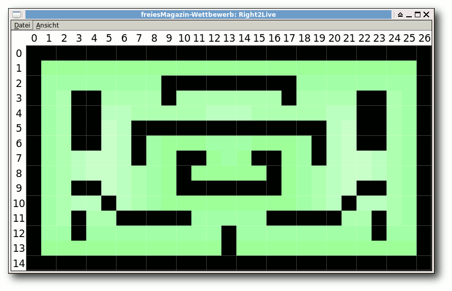Diese Karte wurde von Pacman entliehen.
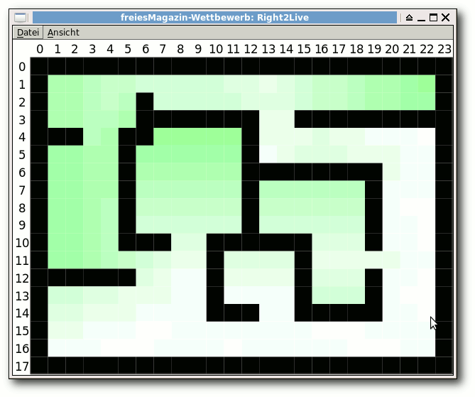
Verschachtelte Räume machen das Weglaufen schwer.
Die Gewinner
Und nun ein kleiner Trommelwirbel, denn es folgen die Gewinner. Alle Ergebnisse, d. h. die Spieledateien (zum Nachspielen in der GUI) sowie die Logfiles findet man gepackt auf der Webseite [16]. Für den Wettbewerb wurden auf den fünf Karten jeweils 5 mal 100 Spiele durchgeführt. Die Berechnungsdauer war dabei ca. 32 Stunden für alle 2500 Spiele. Die folgende Tabelle enthält dabei nur die Gesamtpunktzahl für diese 2500 Spiele. Die genaue Aufschlüsselung aller Spieler samt Zwischenplatzierung findet man in der ODS-Ergebnistabelle [17].| Ergebnisse | ||
| Platz | Teilnehmer | Punkte aus 2500 Spielen |
| 1. | Demel/Keiblinger | 232 595,79 |
| 2. | Scharm | 104 412,12 |
| 3. | Kirsch | 98 675,43 |
| 4. | Pirra | 97 129,97 |
| 5. | Robbert | 75 739,36 |
| 6. | Schulz | 35 854,39 |
[1] http://www.freiesmagazin.de/20101013-dritter-freiesmagazin-programmierwettbewerb-gestartet
[2] http://www.freiesmagazin.de/20101220-dritter-programmierwettbewerb-beendet
[3] http://www.freiesmagazin.de/dritter_programmierwettbewerb
[4] http://www.gnu.org/licenses/lgpl.html
[5] http://www.freiesmagazin.de/third_programming_contest
[6] http://fullcirclemagazine.org/
[7] http://www.freiesmagazin.de/20110130-umfrage-teilnahme-dritter-programmierwettbewerb
[8] http://www.freiesmagazin.de/ftp/2010/freiesMagazin-2010-10-contest-complete.tar.gz
[9] http://ficl.sourceforge.net/
[10] http://ficl.sourceforge.net/license.html
[11] http://www.gnu.org/licenses/gpl.html
[12] http://de.wikipedia.org/wiki/Dijkstra-Algorithmus
[13] http://binfalse.de/
[14] http://www.boost.org/users/license.html
[15] http://networkx.lanl.gov/
[16] http://www.freiesmagazin.de/ftp/2010/freiesMagazin-2010-10-contest-results.tar.gz
[17] http://www.freiesmagazin.de/ftp/2010/freiesMagazin-2010-10-contest-results.ods
[18] http://www.freiesmagazin.de/kontakt
Diesen Artikel kommentieren
Zum Index
Leserbriefe
Für Leserbriefe steht unsere E-MailadresseLeserbriefe und Anmerkungen
freiesMagazin am Kiosk
-> Kann ich diese Hefte auch in der Schweiz am Kiosk kaufen?Geri Intlekofer <- Aus Kostengründen gibt es freiesMagazin nicht am Kiosk, sondern nur als PDF-Download. Das Magazin zu drucken würde sehr viel Geld verschlingen und der Markt ist leider nicht so groß, dass sich das Magazin mit einer geringen Auflage wirklich am Kiosk gegen die anderen Linux-Magazine durchsetzen würde.
Dominik Wagenführ
Programmieren mit Vala
-> Guter Artikel zu Vala. Ich hab es selbst vor einiger Zeit zu schätzen gelernt. Der Vala-Maintainer heißt aber Jürg (ein in der Schweiz verbreiteter Name), nicht Jörg.gb (Kommentar) <- Danke für den Fehlerhinweis, den wir in der Ausgabe sofort korrigiert haben, hier aber noch einmal gesondert darauf hinweisen wollen.
Dominik Wagenführ
Plasma erobert die Welt
-> Ich kämpfe nun schon eine ganze Weile mit KDE4 und bin mittlerweile auf Trinity umgestiegen, da das ganze KDE4-Zeug sich nicht meinen Wünschen anpassen lässt. Der Artikel zeigt dies sehr schön, denn der Benutzer kommt darin überhaupt nicht vor, sondern nur, dass Plasma für andere Programme von Vorteil ist. Hätte ich [nicht] Trinity – ein Fork von KDE 3.5x – gefunden, hätte ich wohl KDE als Desktop verlassen, obwohl ich schon vor Versionen 1.0 mit KDE gearbeitet habe. […]Rolf (Kommentar) -> In der letzten Ausgabe wurde Plasma lang und breit erklärt, aber leider nur aus der Sicht eines Entwicklers für andere Entwickler. Mir als Anwender erschließt sich das ganze Thema Plasma-Oberfläche nicht. Was sind Aktivitäten? Wozu werden sie gebraucht? Wo kann ich sie auflisten lassen? Was haben sie mit den altbekannten Arbeitsflächen zu tun? Wenn ich mich in Userkreisen umhöre geht es vielen so. Mir erscheint es manchmal so, dass die Entwicklung die User nicht mitgenommen hat. Wenn ich lese, dass die Entwicklung des Plasma-Frameworks abgeschlossen ist und ich immer noch nicht weiß, wie und warum man mit dem neuen Tools arbeiten soll (Plasmoids, Apps, …), finde ich das befremdlich. Hier scheint es mir an nutzerbezogenen Artikeln zu fehlen.
Bernd <- Autor Martin Gräßlin schreibt dazu: Anwenderdokumentation zu KDE–Plasma gibt es durchaus. Zum Beispiel in der Userbase [1], welche eigentlich immer erster Anlaufpunkt für KDE-bezogene Themen ist. Aber auch das deutschsprachige ubuntuusers-Wiki [2] bietet eine ausführliche Dokumentation zu Plasma. Neue Konzepte wie die Aktivitäten sind oftmals noch nicht berücksichtigt. Viele Informationen zu diesen findet man im Blog der Hauptentwicklerin [3].
Dominik Wagenführ -> Es ist mir ein riesiges Rätsel, wie man die zahlreichen Codeschnittstellen (JavaScript, QML, u. v. a. m.), die einfache Änderbarkeit des Aussehens und viele andere Aspekte unter einen Hut bekommen hat. Kein Wunder, dass die Entwicklung so schwer war, dass Plasma an einigen Stellen noch kahl oder unausgereift wirkt. Ich hoffe, dass die Arbeit an der Ausgereiftheit rund um die KDE SC aktiv bleibt. […] Eine Zwischenfrage: Die Debug-Informationen sind ja geradezu riesig für KDE (mehrere GB). Verlangsamen diese auch KDE im normalen Betrieb? (Gentoo: flag „debug“, Fedora: „-debug“-Pakete installieren)
Gast (Kommentar) <- Zu der Frage bzgl. Debugging-Symbolen in KDE wissen wir die Antwort leider auch nicht. Ggf. hilft es, in einem KDE-Forum nachzufragen.
Dominik Wagenführ
Heimautomatisierung für Hardwarebastler
-> Mein Lob für diese Ausgabe (Januar 2011) […]. Begeistert bin ich von der Hausautomatisierung. Mehr davon, bitte! Bisher habe ich zu diesem Thema nur was im LinuxMagazin gefunden: „Ansteuerung einer Wärmepumpe“ und „Samsung LCD/LED Fernseher mit Linux Firmware bespielen“. Vielleicht findet sich jemand, um einmal über Arduino [4] und Fritz Prototyping [5] zu schreiben, aus Sicht eines Linuxanten, falls die Leser von freiesMagazin eine ansprechende Menge an Zielgruppenanteil besitzen sollten …Steffen Bergner <- Die Zielgruppe ist uns in der Hinsicht nicht so wichtig. Wenn sich nur eine Handvoll von Lesern findet, die den Artikel interessiert, reicht das vollkommen aus. Die Frage ist eher, ob sich ein Autor findet, der sich dem Thema annimmt. Wir haben die beiden Themen sicherheitshalber auch auf unsere Leserwunschliste [6] aufgenommen, sodass vielleicht später ein Autor darüber stolpert.
Dominik Wagenführ
Teile und herrsche – Internet-Sharing im Netzwerk
-> Wenn ich die vorgeschlagene Konfiguration richtig verstehe, wird der „Router“-Rechner ab sofort in jedem Netzwerk DHCP-Server spielen, an den man ihn über eth0 anschließt. Das dürfte bei mir morgen im Büro ein großes Hallo geben – nur der zuständige Admin wird das ziemlich unlustig finden. Bitte, wenn Ihr Leuten erklärt, wie man einen DHCP-Server installiert, erklärt ihnen auch, welche Probleme wilde DHCP-Server in Netzwerken verursachen und was sie dagegen tun können (etwa den automatischen Start unterbinden). Das Problem ist, das dhcpd nach der Installation automatisch bei jedem Systemstart mit startet – jedenfalls unter Ubuntu (unter SuSE bräuchte es vielleicht noch eine Aktivierung in YAST). Und wie vorgeschlagen konfiguriert, fängt dhcpd nun an, in jedem Netzwerk über eth0 IP-Adressen zu verteilen – und das geht nun wirklich nicht. Mein Vorschlag: Hinweis nachreichen, wie man das sicher wieder entschärft (wird wohl noch „klassisch“ über Init-Skripte gestartet; also die Links in den /etc/rc?.d/ von S auf K setzen).Hans Stoffel (Kommentar) <- Natürlich kann ein DHCP-Server bei unsachgemäßer Anwendung Probleme verursachen. In unserem Fall haben wir aber ein alleinstehendes Netz betrachtet, das für sich autark steht. Es ist weder beabsichtigt noch angeraten, sich mit dieser Lösung in ein bestehendes Netzwerk einzuhängen. Das hier gezeigten Szenario ist eine Insellösung.
Oliver Johanndrees -> Ich bin ein Linuxanfänger und kenne mich mit Netzwerken sehr wenig aus. Deshalb fand ich auch den Artikel „Teile und herrsche – Internet-Sharing im Netzwerk“ gut. Ich würde mich freuen, wenn Ihr auch was über „Linux auf 'ner LAN“ bringen würdet:
- Vergleich von NFS mit Samba
- Wie sicher ist Samba? Samba kenne ich aus Windows -> Unsicher für Linux?
- Wie steht's mit den freigegebenen Dateien? Können andere über das Internet drauf zugreifen? (ungewollte Zugriffe vermeiden)
- Falls man nur eine Datei an jemanden schicken will -> Giver (vielleicht gibt es auch andere Progs). […]
Gast <- Auch das Thema haben wir auf unsere Leserwunschliste mit aufgenommen. Eine Bitte an dieser Stelle aber an alle Leser: Wenn Sie uns einen Leserbrief schicken, geben Sie eine valide E-Mailadresse an, ansonsten können wir Ihnen nicht antworten.
Dominik Wagenführ Links
[1] http://userbase.kde.org/Plasma
[2] http://wiki.ubuntuusers.de/Plasma
[3] http://chani.wordpress.com/
[4] http://www.arduino.cc/
[5] http://fritzing.org/
[6] http://www.freiesmagazin.de/artikelwuensche
Die Redaktion behält sich vor, Leserbriefe gegebenenfalls zu kürzen. Redaktionelle Ergänzungen finden sich in eckigen Klammern. Die Leserbriefe kommentieren
Zum Index
Veranstaltungskalender
| Messen | ||||
| Veranstaltung | Ort | Datum | Eintritt | Link |
| 5. LIT-OL | Oldenburg | 12.02.2011 | frei | http://www.lit-ol.de/ |
| CeBIT | Hannover | 01.-05.03.2011 | 39 EUR | http://www.cebit.de/ |
| Chemnitzer Linux-Tage | Chemnitz | 19.-20.03.2011 | 8 EUR | http://chemnitzer.linux-tage.de/ |
| Augsburger Linux-Infotag | Augsburg | 26.03.2011 | frei | http://www.luga.de/ |
| FOSSGIS | Heidelberg | 05.-07.04.2011 | - | http://www.fossgis.de/konferenz/2011 |
| Grazer Linuxtage | Graz | 09.04.2011 | frei | http://linuxwochen.at/ |
| UnFUCK | Furtwangen | 15.-17.05.2011 | frei | http://www.unfuck.eu/ |
| Linuxwochen Wien | Wien | 05.-07.05.2011 | frei | http://linuxwochen.at/ |
| LiWoLi 2011 | Linz | 12.-14.05.2011 | frei | http://linuxwochen.at/ |
Vorschau
freiesMagazin erscheint immer am ersten Sonntag eines Monats. Die März-Ausgabe wird voraussichtlich am 6. März unter anderem mit folgenden Themen veröffentlicht:- Secret Maryo Chronicles – Pilzkönigreich war gestern
- GIMP-Tutorial: Farben durch Graustufen hervorheben (Colorkey)
Zum Index
Konventionen
An einigen Stellen benutzen wir Sonderzeichen mit einer bestimmten Bedeutung. Diese sind hier zusammengefasst:| $: | Shell-Prompt |
| #: | Prompt einer Root-Shell – Ubuntu-Nutzer können hier auch einfach in einer normalen Shell ein sudo vor die Befehle setzen. |
| ~: | Abkürzung für das eigene Benutzerverzeichnis /home/BENUTZERNAME |
Zum Index
Impressum ISSN 1867-7991 | ||
| freiesMagazin erscheint als PDF und HTML einmal monatlich. | ||
| Kontakt | ||
| Postanschrift | freiesMagazin | |
| c/o Dominik Wagenführ | ||
| Beethovenstr. 9/1 | ||
| 71277 Rutesheim | ||
| Webpräsenz | http://www.freiesmagazin.de/ | |
| Autoren dieser Ausgabe | ||
| Stefan Apke | Sketch – 3D-Grafikcode für LaTeX erstellen | |
| Hans-Joachim Baader | Rezension: Root-Server einrichten und absichern | |
| Hauke Goos-Habermann | VirtualBox und KVM | |
| Mirko Lindner | Kernel-Crash-Analyse unter Linux | |
| Mathias Menzer | Der Januar im Kernelrückblick | |
| Daniel Nögel | Python – Teil 5: In medias res | |
| Jochen Schnelle | Bottle – Ein WSGI-Microframework für Python | |
| Michael Schwarz | Simutrans – Schnelles Geld zu Lande, zu Wasser und in der Luft | |
| Dominik Wagenführ | Rezension: Bash – kurz & gut | |
| Erscheinungsdatum: 6. Februar 2011 | ||
| Redaktion | ||
| Frank Brungräber | Thorsten Schmidt | |
| Dominik Wagenführ (Verantwortlicher Redakteur) | ||
| Satz und Layout | ||
| Ralf Damaschke | Yannic Haupenthal | |
| Nico Maikowski | Matthias Sitte | |
| Korrektur | ||
| Daniel Braun | Stefan Fangmeier | |
| Mathias Menzer | Karsten Schuldt | |
| Stephan Walter | ||
| Veranstaltungen | ||
| Ronny Fischer | ||
| Logo-Design | ||
| Arne Weinberg (GNU FDL) | ||
Soweit nicht anders angegeben, stehen alle Artikel, Beiträge und Bilder in freiesMagazin unter der Creative-Commons-Lizenz CC-BY-SA 3.0 Unported. Das Copyright liegt beim jeweiligen Autor. freiesMagazin unterliegt als Gesamtwerk ebenso der Creative-Commons-Lizenz CC-BY-SA 3.0 Unported mit Ausnahme der Inhalte, die unter einer anderen Lizenz hierin veröffentlicht werden. Das Copyright liegt bei Dominik Wagenführ. Es wird erlaubt, das Werk/die Werke unter den Bestimmungen der Creative-Commons-Lizenz zu kopieren, zu verteilen und/oder zu modifizieren. Das freiesMagazin-Logo wurde von Arne Weinberg erstellt und unterliegt der GFDL. Die xkcd-Comics stehen separat unter der Creative-Commons-Lizenz CC-BY-NC 2.5 Generic. Das Copyright liegt bei Randall Munroe.
Zum Index
File translated from TEX by TTH, version 3.89.
On 6 Feb 2011, 08:04.